-----------------------------------------------------------------------------
SECTION I
-----------------------------------------------------------------------------
=============
Introduction
=============
Mass Effect is the first in a trilogy of games created by BioWare, award-
winning developer of such RPGs as "Knights of the Old Republic" and "Baldur's
Gate." It takes place in the year 2183, as humanity begins to take its first
steps on the galactic stage, interacting with new alien races and settling
uncharted worlds. You play as Lieutenant Commander Shepard, a promising
young officer in the Systems Alliance Navy who has just been assigned to the
SSV Normandy--the most advanced starship humans have ever created.
Mass Effect was released for the Xbox 360 in North America on November 20,
2007, and for the PC on May 28, 2008.
===========
Background
===========
In 2148 AD, humanity discovered a small cache of highly advanced alien
technology buried deep beneath the surface of Mars. The creators of this
technology--known as the Protheans--went extinct nearly 50,000 years ago,
leaving little evidence of their existence behind. The discovery of this
technology led humans to develop faster-than-light travel, allowing rapid
expansion throughout the solar system.
Within a year humanity uncovered another piece of Prothean technology, a
dormant mass relay that had been encased in the ice-dwarf Charon. Once
activated, this relay allowed instantaneous travel across thousands of light
years to other mass relays in different parts of the galaxy. Humanity
immediately began using this technology to colonize far-off star systems.
This same year, the Systems Alliance was formed by the largest governments on
Earth to serve as the spearhead of humanity's expansion.
In 2157, the Alliance made first contact with an alien species known as the
turians. This resulted in the First Contact War, as the next several months
saw skirmishes between the turians and Earth's Systems Alliance fleets. In
the largest battle of the war, the turians crushed the garrison on the human
colony of Shanxi, before ultimately being driven off by the Alliance Second
Fleet. This conflict drew the attention of the Citadel Council, a governing
body that maintained peace and stability throughout much of the galaxy. They
intervened in the conflict and brokered a peace agreement between humans and
turians.
Humanity continued its rapid expansion, and in 2165 it was granted an embassy
on the Citadel, the political and economic heart of the civilized galactic
community. This angered another race of aliens, the batarians, who had come
into competition with humanity over territory in an undeveloped region of
space known as the Skyllian Verge.
Frustrated with the Council's refusal to halt human expansion, the batarians
closed their embassy on the Citadel and ultimately launched a surprise attack
on the human colony of Elysium. The attack failed however, and in
retaliation the Alliance raided the batarian criminal base on Torfan in 2178.
Despite taking heavy losses, the Alliance soldiers utterly exterminated the
inhabitants.
The year is now 2183, and the SSV Normandy--the most advanced starship ever
created by the Alliance--is being put through its paces. Aboard is Commander
Shepard, a talented young officer who will soon embark on a galaxy-spanning
adventure with the fate of the known universe hanging in the balance...
============
Game Basics
============
CHARACTER CREATION
------------------
When you start a new game of Mass Effect, you can begin with the default
version of Commander Shepard, or you can create your own. Creating a custom
character allows you to alter your version of Commander Shepard in a number
of ways, as detailed below.
You must first select a gender for your character and give him or her a name.
The default male name is "John," and the default female name is "Jane." For
the purposes of in-game dialogue and continuity, the last name cannot be
changed.
After selecting a name, you must assign a background and personality to your
character. This is a two-step process:
The first step is to select your pre-service history. This determines
your character's background before he or she joined the Alliance
military. This choice has a small effect on your alignment (which will
be explained later), and opens up one optional assignment for you to
complete.
Spacer: "Both of your parents were in the Alliance military.
Your childhood was spent on ships and stations as they
transferred from posting to posting, never staying in
one location for more than a few years. Following in
your parents' footsteps, you enlisted at the age of
eighteen."
Alignment Bonus: +10 Paragon
Assignment: "Citadel: Old, Unhappy, Far-Off Things,"
in which Commander Shepard deals with a drunken ex-
marine who was emotionally scarred by the atrocities
he witnessed on Mindoir.
Colonist: "You were born and raised on Mindoir, a small border
colony in the Attican Traverse. When you were sixteen,
slavers raided Mindoir, slaughtering your family and
friends. You were saved by a passing Alliance patrol,
and you enlisted with the military a few years later."
Alignment Bonus: +5 Paragon
+5 Renegade
Assignment: " Citadel: I Remember Me," in which
Commander Shepard is asked to speak with a fellow
colonist who was traumatized by the events on Mindoir.
Earthborn: "As an Earthborn, you had a rough childhood in the
slums of Earth, and have a gritty edge to your
personality."
Alignment Bonus: +10 Renegade
Assignment: "Citadel: Old Friends," in which Commander
Shepard is confronted by a member of his/her former
gang and asked for a favor.
Next you select your psychological profile, for which there are again
three possible choices. By the start of the game, your character has
made a name for him/herself in military circles, and your choice here
determines precisely how this came to be. Individuals in the game will
sometimes recognize you from your past exploits and react accordingly.
Additionally, for each psychological profile there is an optional
assignment that is affected. However, unlike the pre-service history
selections, these assignments are available to all players.
Sole Survivor: "During your service, a mission you were on went
horribly wrong. Trapped in an extreme survival
situation, you had to overcome physical torments and
psychological stresses that would have broken most
people. You survived while all those around you fell,
and now you alone are left to tell the tale."
Alignment Bonus: +5 Paragon
+5 Renegade
Assignment: "UNC: Dead Scientists," in which Commander
Shepard encounters a fellow survivor of the massacre
on Akuze.
War Hero: "Early in your military career you found yourself
facing an overwhelming enemy force. You risked your
own life to save your fellow soldiers and defeat the
enemy despite the impossible odds. Your bravery and
heroism have earned you medals and recognition from
the Alliance fleet."
Alignment Bonus: +10 Paragon
Assignment: "UNC: Espionage Probe," in which Commander
Shepard confronts the mastermind of the attack he/she
is famous for defeating.
Ruthless: "Throughout your military career, your have held fast
to one basic rule: get the job done. You've been
called cold, calculating, and brutal. Your reputation
for ruthless efficiency makes your fellow soldiers
wary of you. But when failure is not an option, the
military always goes to you first."
Alignment Bonus: +10 Renegade
Assignment: "UNC: Major Kyle," in which Commander
Shepard must stop a dangerous cult led by his/her
former commanding officer.
These two selections create a matrix of nine possible backgrounds for
your character, each of which is detailed below. You may use this list
to select your desired combination of pre-service history and
psychological profile.
Spacer / Sole Survivor:
"Both of your parents were in the Alliance military. Your
childhood was spent on ships and stations as they transferred
from posting to posting. Following in your parents' footsteps,
you enlisted at the age of eighteen.
One of your first missions was an expedition to investigate
Akuze, a lush world on the outskirts of Alliance space that had
suddenly dropped out of contact. Arriving on the surface, your
patrol found the settlement intact, but there were no survivors.
At nightfall, the thresher maws struck - mindless abominations of
teeth and tentacles that rose from beneath the earth. Constant
gunfire couldn't drown out the shrieks of your fellow soldiers as
they were dragged down to a gruesome death.
Fifty marines died on Akuze. You were the only one to make it
back to the landing zone alive. A monument on the planet
commemorates the massacre, a grim reminder of the price humanity
must pay as they spread throughout the stars."
Spacer / War Hero:
"Born into a naval family, you spent your childhood on ships and
stations. You moved from posting to posting as your parents were
reassigned. You enlisted in the Alliance military yourself on the
day you turned eighteen.
You were on shore leave at Elysium when the first wave of the
Skyllian Blitz struck. A massive coalition force of slavers,
crime syndicates, and batarian warlords attacked the human
colony, determined to wipe it out.
You rallied the civilian inhabitants, leading them in their
desperate fight to hold off the invaders. When enemy troops broke
through the colony's defenses, you single-handedly held them off
and sealed the breach.
After hours of brutal fighting, reinforcements finally arrived
and the enemy broke ranks and fled. Because of your actions,
Elysium was saved, and you are regarded throughout the Alliance
as a true hero."
Spacer / Ruthless:
"Born into a naval family, you spent your childhood on ships and
stations. You moved from posting to posting as your parents were
reassigned, and it was only natural you would follow in their
footsteps by enlisting in the Alliance military when you came of
age.
After several years of service, you joined the campaign to rid
the Skyllian Verge of batarian slavers and other criminal
elements. The final battle came when Alliance forces laid siege
to Torfan, a slaver base built miles below the surface of a
desolate moon. The superiority of the human fleet was wasted in
the assault on the underground bunker, but you led a corps of
elite ground troops into the heart of the enemy base.
Nearly three-quarters of your own squad perished in the vicious
close-quarters fighting... a cost you were willing to pay to make
sure not a single slaver made it out of Torfan alive."
Colonist / Sole Survivor:
"You were raised on Mindoir on the fringes of the Attican
Traverse. When you were sixteen, the colony was raided by
slavers. The entire settlement was razed and your friends and
family were slaughtered. A passing Alliance patrol rescued you,
but all you loved was destroyed.
You enlisted with the Alliance military, eventually volunteering
to go to Akuze, a colony that had mysteriously dropped out of
contact. As soon as it arrived on the surface, your patrol was
attacked by thresher maws - mindless abominations of teeth and
tentacles that rose up from beneath the earth. Constant gunfire
couldn't drown out the shrieks of your fellow soldiers as they
were dragged down to a gruesome death.
Fifty marines died on Akuze; you were the only one to make it
back to the landing zone alive. A monument on the planet
commemorates the massacre, a grim reminder of the price humanity
must pay as they spread throughout the stars."
Colonist / War Hero:
"You were raised on Mindoir on the fringes of the Attican
Traverse. When you were sixteen, the colony was raided by
slavers. The entire settlement was razed and your friends and
family were slaughtered. A passing Alliance patrol rescued you,
but all you loved was destroyed.
You enlisted with the Alliance military and were posted at
Elysium. You were there during the Skyllian Blitz, an attack on
the colony by a massive coalition force of slavers, crime
syndicates, and batarian warlords.
You rallied the civilian inhabitants, leading them in their
desperate fight to hold off the invaders. When enemy troops broke
through the colony's defenses, you single-handedly held them off
and sealed the breach.
After hours of brutal fighting, reinforcements finally arrived
and the enemy broke ranks and fled. Because of your actions,
Elysium was saved, and you are regarded throughout the Alliance
as a true hero."
Colonist / Ruthless:
"You were raised on Mindoir on the fringes of the Attican
Traverse. When you were sixteen, the colony was raided by
slavers. The entire settlement was razed and your friends and
family were slaughtered. A passing Alliance patrol rescued you,
but all you loved was destroyed.
You joined with the Alliance military, joining the long and
bloody campaign to rid the Skyllian Verge of batarian slavers and
other criminal elements. The final battle came when Alliance
forces laid siege to Torfan, a slaver base built miles below the
surface of a desolate moon. The superiority of the human fleet
was wasted in the assault on the underground bunker, but you led
a corps of elite ground troops into the heart of the enemy base.
Nearly three-quarters of your own squad perished in the vicious
close-quarters fighting, a cost you were willing to pay to make
sure not a single slaver made it out of Torfan alive."
Earthborn / Sole Survivor: *
"You were born on Earth, but you never knew your parents. A child
of the streets, you learned to live by your wits and guts,
surviving in the hidden underbelly of the megatropolises of
humanity's homeworld.
Eager to find a better life, you joined the Alliance military
when you came of age. You volunteered for an expedition to Akuze:
a lush world on the outskirts of Alliance space that had suddenly
dropped out of contact. Arriving on the surface your patrol found
the settlement intact, but no survivors.
At nightfall, the thresher maws struck - mindless abominations of
teeth and tentacles that rose up from beneath the earth. Constant
gunfire couldn't drown out the shrieks of your fellow soldiers as
they were dragged down to a gruesome death.
Fifty marines died on Akuze; you were the only one to make it
back to the landing zone alive. A monument on the planet
commemorates the massacre, a grim reminder of the price humanity
must pay as they spread throughout the stars."
Earthborn / War Hero:
"You were born on Earth, but you never knew your parents. A child
of the streets, you learned to live by your wits and guts,
surviving in the hidden underbelly of the megatropolises of
humanity's homeworld.
Eager to find a better life, you joined the Alliance military
when you came of age. You were on shore leave at Elysium when the
first wave of the Skyllian Blitz struck. A massive coalition
force of slavers, crime syndicates, and batarian warlords
attacked the human colony, determined to wipe it out.
You rallied the civilian inhabitants, leading them in their
desperate fight to hold off the invaders. When enemy troops broke
through the colony's defenses, you single-handedly held them off
and sealed the breach.
After hours of brutal fighting, reinforcements finally arrived
and the enemy broke ranks and fled. Because of your actions,
Elysium was saved, and you are regarded throughout the Alliance
as a true hero.
Earthborn / Ruthless:
"You were born on Earth, but you never knew your parents. A child
of the streets, you learned to live by your wits and guts,
surviving in the hidden underbelly of the megatropolises of
humanity's home world.
Eager to find a better life, you joined the Alliance military
when you came of age. You were assigned to the campaign to rid
the Skyllian Verge of batarian slavers and other criminal
elements. The final battle came when Alliance forces laid siege
to Torfan, a slaver base built miles below the surface of a
desolate moon. The superiority of the human fleet was wasted in
the assault on the underground bunker, but you led a corps of
elite ground troops into the heart of the enemy base.
Nearly three-quarters of your own squad perished in the vicious
close-quarters fighting, a cost you were willing to pay to make
sure not a single slaver made it out of Torfan alive."
* The Earthborn / Sole Survivor background is chosen for the default
Commander Shepard.
After creating a character profile, you must select your class from the six
types available to you. This is a very important selection, as it determines
what weapons and abilities you will have access to.
There are three primary classes in Mass Effect: Soldiers, Engineers, and
Adepts. Soldiers are combat specialists: They are the only class with access
to heavy armor, and they have the ability to train in the use of any weapon
type. Engineers specialize in non-combat abilities like unlocking doors and
containers, and in sabotaging enemy weapons and shields. Adebts are biotic
characters that can forcefully move enemies and objects, and are best at
disabling enemies and controlling crowds.
Soldier: "The Soldier is a tough warrior, able to deal with a
range of combat situations. The Soldier gets improved
health, has the widest selection of weapons, and is
eventually able to wear heavy armor. Gameplay focus
is on getting into the thick of the fight, picking the
right weapon for tactical situations, and outlasting
opponents."
Starting Talents: Assault Rifles
Assault Training
Combat Armor (Medium)
Pistols
Unlockable Talents: Combat Armor (Heavy)
First Aid
Fitness
Shotguns
Sniper Rifles
Engineer: "The Engineer is a tech specialist, able to quickly
and easily manipulate the environment with specific
talents. Gameplay focus is on shaping the battlefield
during combat, healing the party, and debuffing
enemies (disabling weapons and lowering shields)."
Starting Talents: Decryption
Electronics
First Aid
Pistols
Unlockable Talents: Basic Armor (Light)
Damping
Hacking
Medicine
Adept: "The Adept is the ultimate biotic, able to affect the
physical world with the power of the mind. They can
use biotics to violently manipulate objects in the
environment, including nearby enemy targets. Gameplay
focus is on disabling and debuffing enemies while
dealing massive amounts of damage."
Starting Talents: Barrier
Basic Armor (Light)
Throw
Warp
Unlockable Talents: Lift
Pistols
Singularity
Stasis
The remaining three classes are hybrids of the first three. The Infiltrator
combines the Soldier and Engineer, the Vanguard combines the Soldier and
Adept, and the Sentinel combines the Engineer and Adept.
Vanguards have access to weapons and armor training, but don't have the range
of biotic abilities open to Adepts. Similarly, Infiltrators gain weapons and
armor training as well, but lack the range of debuffs possessed by Engineers.
The most supporting class is the Sentinel, which offers a mix of tech and
biotic powers, but lacks weapon or armor talents.
Infiltrator: "The Infiltrator is a tech-savvy warrior, able to win
battles by quickly disabling and killing enemies.
These soldiers focus on unlocking alternate routes,
gaining access to good equipment, and obtaining an
advantageous position over enemies in combat."
Starting Talents: Decryption
Electronics
Pistols
Tactical Armor (Light)
Unlockable Talents: Damping
First Aid
Fitness
Sniper Rifles
Tactical Armor (Medium)
Vanguard: "The Vanguard is a powerful combatant, able to combine
the offensive powers of the Adept and the Soldier.
They have access to various weapons and armor, as well
as biotics. Gameplay focus is on taking down enemies
with quick and brutal force.
Starting Talents: Assault Training
Pistols
Throw
Warp
Unlockable Talents: Barrier
Lift
Shotguns
Tactical Armor (Light/Medium)
Sentinel: "The Sentinel is the most flexible class, able to
combine tech and biotics to manipulate the
environment, disable and track enemies, or defend the
party. Gameplay focus is on protecting the party
using kinetic barriers and healing it with advanced
medical training."
Starting Talents: Barrier
Decryption
First Aid
Throw
Unlockable Talents: Electronics
Lift
Medicine
Stasis
Finally you are ready to customize your character's appearance. You can
choose to use the default versions of Commander Shepard, or you can adjust
any aspect of your character's face to your liking. Use the sliders in each
section to manipulate a range of facial details. Female characters have the
additional option of customizing makeup.
When you are finished, select "Finalize" to begin the game. Note that once
you have completed one playthrough of Mass Effect you can begin a new game by
selecting an existing character. You will begin the new game with all the
stats and equipment that your character had at the time the game was
finished. Though any accrued Charm or Intimidate slots will be retained,
your preexisting Paragon and Renegade scores will not carry over.
Additionally, if you have unlocked any weapons or powers through
achievements, you must select one as a bonus talent for your new character.
INTRODUCTION TO RPGS
--------------------
Mass Effect is an Action Role-Playing Video Game (or RPG), meaning you assume
the role of a fictional character and control his or her actions in a way
that affects the game and other characters. As your progress through the
game you will earn "experience points" (or XP) for your actions. You gain
these points by exploring, talking to characters, completing quests, and
defeating enemies in combat. The accumulation of these points allows your
character to "level up," thereby increasing certain characteristics such as
health. In Mass Effect you are granted "talent points" after each level up,
which can be spent to improve your character's abilities. Many of these
components are explained in more detail later.
CONVERSATIONS
-------------
A significant amount of time in Mass Effect is devoted to conversations with
other characters. This is done through the "conversation wheel" that appears
near the bottom of the screen whenever your character has the opportunity to
say something. All dialogue in the game is fully voiced, including that of
Commander Shepard. Rather than choosing the exact words your character will
say however, Mass Effect shows you several options on the wheel corresponding
to general feelings, questions, or emotions. These short phrases are then
turned into full lines of dialogue that are spoken by your character.
To select a dialogue response on the Xbox 360, hold the left analog stick in
the direction of the choice you wish to select, and then press the A button.
You can also press the X button instead, which will begin your character's
line immediately, stepping on the lines of any character who is speaking at
the time. X is also used to skip dialogue if you wish to do so. On the PC
you use the mouse to select dialogue options, and the Spacebar to skip
dialogue.
The dialogue wheel itself is divided into six sectors. Choices on the
wheel's left side usually give you more information about a given topic,
while choices on the right tend to bring the conversation closer to its
conclusion. Additionally, the top of the wheel tends to correspond to the
Paragon path, where your character makes cooperative and unselfish decisions.
The bottom of the wheel typically corresponds to the Renegade path, where
your character makes decisions that are more selfish and impatient. This is
not always the case, but it is a good general guide to framing your responses
during a conversation if you wish to play as an honorable (or merciless)
character.
Sometimes you will see the option on the middle left to "Investigate."
Selecting this option brings up more choices for topics of conversation, and
the orientation of these choices often does not correspond to the Paragon /
Renegade paths described above.
If you have spent sufficient talent points in the "Charm" or "Intimidate"
talents, you will sometimes also have the option to persuade characters to
achieve a nonviolent outcome or to give you additional money, items, or
information. These choices appear in the upper and lower left quadrants as
blue and red dialogue choices respectively. If you lack sufficient skill in
these areas, these choices will be grayed out, and you will not have the
option of using them.
THE MISSION COMPUTER
--------------------
By pressing the Start Button (or Esc on the PC) you can enter the Mission
Computer menu. You access each part of the menu in a similar way to
selecting dialogue choices during a conversation.
The Mission Computer allows you access to game details for:
Codex: A small encyclopedia of the Mass Effect universe. As you
play and gain new information the Codex will populate
itself with new articles concerning the planets,
civilizations, and technologies you come across.
Equipment: View and change your currently equipped weapons, armor,
items, and upgrades.
Exit Game: Quits the game and returns to the desktop. (PC only)
Journal: View your current missions and assignments. Missions are
essential to the completion of the game. Assignments are
optional, but typically grant experience points and
other rewards.
Load: Load previously saved games.
Main Menu: Exit the game and return to the main menu. (PC only)
Map: Shows a two dimensional overview of your current area. It
indicates the position of your character as well as known
points of interest, objectives, and other pieces of useful
information. On the Xbox 360, you can use the left and
right bumpers to zoom in and out for a better view.
Options: Change your settings for gameplay, graphics, sound, and
other options. Notably, you can change the gameplay
difficulty, and toggle visual effects like film grain and
motion blur. (Xbox 360 only)
Save: Allows you to save your current progress through the game.
You cannot save in certain situations, such as during
combat and while riding in elevators.
Settings: Change your settings for gameplay, graphics, sound, and
other options. Notably, you can change the gameplay
difficulty, and toggle visual effects like film grain and
motion blur. (PC only)
Squad: View and upgrade stats and abilities for you and your
squad members.
COMBAT
------
The combat in Mass Effect resembles a third-person shooter, but is actually
powered by an RPG rules set. You can draw your weapon by pressing the X
button (Q on the PC) or either of the triggers (mouse buttons on the PC), and
can holster it by pressing the B button (Q on the PC).
Drawing your weapon enters combat mode, showing a reticule on-screen to
indicate where your weapon is aimed. It also displays the status of each
squad member in the lower left corner of the screen. The red bar indicates
the health of each squad member, while the blue boxes indicate the status of
each character's shields. More boxes mean greater shield strength, and empty
boxes mean the shields are depleted.
Radar is displayed in the bottom right corner, and shows enemies as red dots.
Some enemies can jam your radar, hiding their locations from you. However,
certain weapon upgrades can be used to negate this ability.
The right analog stick (or mouse on the PC) is used to aim the target
reticule. Holding the left trigger (right mouse button on PC) zooms in for
more precise aiming, increasing your character's accuracy. The reticule
turns orange when it is placed over an enemy or any object that can be
damaged or destroyed. Squeezing the right trigger (left mouse button on PC)
then fires your weapon. The chance of hitting an enemy and how much damage
is dealt from your weapon are determined by your stats and equipment. Your
chance of hitting an enemy is reduced by holding the trigger for a long
period of time. Sustained fire can also overheat your weapon, meaning you
must wait for it to cool down before using it again.
On the Xbox 360, strategic management is accomplished through the use of two
combat "wheels." The first is the "Weapons Wheel" which is accessed by
holding down the left bumper. This pauses the action, and allows you to
select what weapon each member of your squad will use. All squad members
carry a pistol, shotgun, assault rifle, and sniper rifle, but each will be
far more effective with a certain weapon if they have trained in its use.
The second wheel is the "Power Wheel," which is accessed by holding the right
bumper. This allows you to access the special abilities of all squad members
and use them accordingly by aiming using the right analog stick. A power can
also be mapped to the right bumper by pressing the X button while using the
wheel.
On the PC these wheels are replaced by the Tactical HUD, which is accessed by
holding down the Spacebar. This screen shows the abilities that are
available to you and your squad members. You can use it to select which
weapons and powers to use, and it also allows you to set your hotkeys for
each ability by dragging them to the quick slots located in the upper left
corner. Here they can be accessed by pressing the appropriate number key, 1
through 8.
ADVANCING LEVELS
----------------
As mentioned previously, you gain experience points as you progress through
the game. There is a single pool of experience for the entire squad,
allowing you and your companions to advance at a similar rate. Each time you
accumulate a sufficient number of experience points, you will level up,
granting access to new talent points which you can spend at the Squad screen
in the Mission Computer. Your character starts at level 1, and the highest
possible level is 60.
At the Squad screen you can automatically distribute talent points to the
selected character, or you can spend them manually on each desired talent.
Players earn talent points for each new level as follows:
Level Shepard Points per Level Squad Points per Level
1-5 3 2
6-20 2 2
21-35 2 1
36-60 1 1
This means that Shepard can earn up to 100 talent points through leveling up,
while squad members can earn up to 80 points. However, all characters begin
with 2 points already allocated, and automatic points in the Charm and
Intimidate talents can be earned by raising your Paragon and Renegade meters
to sufficient levels. This will be explained more later.
THE GALAXY MAP
--------------
To travel around the galaxy using your advanced starship--the Normandy--you
must access the galaxy map, located prominently in the center of the command
deck.
The first level of the galaxy map is the Galaxy Level, which shows all
available star clusters and nebulae you can visit. By moving your cursor
over a selected cluster you can see its name and view the relay path the
Normandy would take to reach that part of the galaxy. New clusters and
systems become available as you complete missions and learn more about the
galaxy.
After selecting a location, you zoom in to the Cluster Level, which shows all
known star systems within that cluster. To explore a star system you must
travel there by clicking on it and confirming that you wish to travel.
When you have arrived at a new system you will see the System Level, which
shows all the planets and celestial objects orbiting the star you have
traveled to. All planets will have a blue ring showing their orbit. Other
objects may be hidden and will require you to move your cursor over them to
discover their presence. For example, many asteroid belts have interesting
asteroids you can examine, and derelict starships and freighters can also be
found in some systems. A hidden object can usually be identified by a small
twinkle of light that appears on occasion. To find these objects, move your
cursor over the object and press the appropriate button to scan it.
By selecting a planet, moon, or other object you will zoom in to the
Planetary Level. This shows you a view of the planet's surface along with a
synopsis of important planetary features and information. Many planets are
inhospitable to human life, but some can be surveyed for raw materials and
interesting artifacts, while others can be explored using the Mako.
EQUIPMENT
---------
Collecting, using, and upgrading your equipment is important to your success
and survival in Mass Effect. The first pieces of useful equipment are your
weapons. Every squad member carries four basic weapon types, and Commander
Shepard can also throw grenades which detonate automatically after ten
seconds if not detonated remotely by pressing the grenade button again.
Pistols: "Pistols are highly accurate, have little recoil, and
are easy to use when moving. They are effective at a
variety of ranges, but inflict limited damage."
Trainable by: Soldier
Engineer
Adept
Vanguard
Infiltrator
Shotguns: "Shotguns have a slow rate of fire and high recoil,
but inflict massive damage to multiple targets when
fired at close range."
Trainable by: Soldier
Vanguard
Assault Rifles: "Assault rifles are the standard armament of most
Soldiers, offering a good balance between firepower,
range, and accuracy."
Trainable by: Soldier
Sniper Rifles: "Sniper rifles have long range, are highly accurate,
and inflict significant damage. They have a limited
rate of fire, however, and are practically useless at
close range.
Trainable by: Soldier
Infiltrator
Grenades: "Disk-shaped Alliance grenades can glide long
distances and also latch onto targets or flat
surfaces to be remotely detonated. Only you, as
Commander Shepard, can use grenades."
The next major component is armor, which protects the wearer from
injury. Each species uses a different set of armor because of inherent
differences in physiology. The one exception is the asari, who can wear
human armor, and vice versa.
Light Armor: "Light armor offers a basic level of protection from
enemy attacks and minimizes the movement penalties
that affect weapon accuracy."
Wearable by: Soldier
Engineer
Adept
Vanguard
Infiltrator
Sentinel
Medium Armor: "Medium armor offers an increased level of
protection, but also increases the movement penalties
that affect weapon accuracy."
Wearable by: Soldier
Vanguard (requires training)
Infiltrator (requires training)
Heavy Armor: "Heavy armor offers the highest level of protection
from enemy fire, but also has the highest movement
penalties affecting weapon accuracy."
Wearable by: Soldier (requires training)
With one exception, all weapons, armors, and grenades can be upgraded to
enhance their properties. Upgrades can increase damage, improve shields, and
more.
To upgrade equipment, access the Equipment screen through the Mission
Computer (or press I on the PC). Equip the item you wish to use and press
the X button to view the Upgrade screen on the Xbox 360, or click the
appropriate upgrade slot on the PC. Select the desired upgrades and then
confirm the upgrade selection.
To modify tech and biotic abilities, special equipment is used:
Bio-amps: "Biotics can strengthen their power in specific
disciplines by using amps (amplifiers). These
specially designed devices often come in the form of
small electronic attachments that are worn on a
biotic's ear or the back of their head."
Omni-tools: "Omni-tools are multipurpose diagnostic and
minifacturing tools used for a variety of battlefield
tasks, such as hacking, decryption, or repair. They
are equipped by Engineers, Sentinels, and
Infiltrators to make use of their tech talents."
New equipment can be acquired in a number of ways. As you progress in the
game and defeat enemies you gain XP, money, and items. These new items are
automatically placed in your inventory. You can also purchase items from
merchants or take them from containers you find throughout the game.
Merchants also allow you to purchase increased grenade or medi-gel capacity.
Medi-gel is a universal healing substance that restores the health of all
squad members when used. Press the Y button (F on the PC) during combat to
use medi-gel on your squad.
There is an inventory limit of 150 items, so it is important to keep your
inventory as unoccupied as is reasonable. Any weapons, armors, or upgrades
you or your squad aren't using can be sold for extra money or turned into
omni-gel. Omni-gel is useful for opening locked containers and decrypting
certain electronic devices, provided you have the requisite skill already.
SQUAD MANAGEMENT
----------------
The Squad screen (accessible from the Mission Computer menu) provides
information about your character and the other characters in your squad,
including name, class, appearance, level, and use of talent points. The
Squad screen can be accessed directly on the PC by pressing the U key.
Each time you accumulate enough experience to gain a new level, all
characters are granted talent points. Using the Squad screen, you can assign
these points in order to improve the abilities of your characters or unlock
new abilities.
Commander Shepard also has Paragon and Renegade meters shown on this screen.
These meters are representative of the choices you make throughout the game.
Generous choices will result in Paragon points, while ruthless choices will
result in Renegade points. Either path is acceptable, as you gain bonuses
for filling either meter.
Paragon: The Paragon scale is colored blue and impacts the Charm
ability.
10% Bonus: Opens two Charm slots
Gives one Charm point
25% Bonus: Opens two Charm slots
Gives one Charm point
10% bonus to First Aid cooldown
50% Bonus: 10% bonus to health
75% Bonus: Unlocks Achievement
Opens two Charm slots
Gives one Charm point
5% bonus to all talent cooldowns
Renegade: The Renegade scale is colored red and impacts the
Intimidate ability.
10% Bonus: Opens two Intimidate slots
Gives one Intimidate point
25% Bonus: Opens two Intimidate slots
Gives one Intimidate point
10% bonus to First Aid cooldown
50% Bonus: Regenerate +1 health per second
75% Bonus: Unlocks Achievement
Opens two Intimidate slots
Gives one Intimidate point
5% damage/duration bonus on all weapons/powers
EXPLORING UNCHARTED WORLDS
--------------------------
When you land on a planet, you should first check your Map. This often
reveals the locations of many known points of interest. Anomalies--marked
with a question mark--usually indicate something interesting to explore. You
can also find several deposits of rare materials, which you can acquire if
you discover them.
When you are done exploring a planet, simply press the X button while in the
Mako (or from the Map screen) to return to the Normandy. This is done on the
PC by pressing the N key.
USING THE MAKO
--------------
In the cargo hold of the Normandy you can find the M35 Mako, an infantry
fighting vehicle that can be used to cover long distances quickly and to
provide cover and direct fire support. You can use the A button (E on the
PC) to enter the Mako, and the B button (Q on the PC) to exit it.
The Mako is equipped with a machine gun for dealing with infantry, as well as
a 155mm cannon for destroying more heavily armored targets. It also comes
with jump jets that can be activated using the A button (Spacebar on the PC),
which allow the operator to deftly jump over obstacles (or incoming enemy
rockets).
If the Mako becomes damaged from enemy fire, press the Y button (F on the PC)
to repair it. Doing so uses 15 omni-gel and requires the Mako to be
stationary.
It is worth noting that the number of experience points you receive for
killing enemies in the Mako is one third of that for killing enemies while on
foot. If you are concerned with gaining as much experience as possible you
should still use the Mako for travel, but exit the vehicle when you get close
enough to engage an enemy. With some of the tougher enemies you can also use
the Mako to weaken them, and then finish them off while on foot.
It is helpful to know that enemies aim their attacks at the nose of the Mako.
You can use this information to position the front of the vehicle behind an
obstacle, leaving the turret free to return fire.
===========
Characters
===========
COMMANDER SHEPARD
-----------------
Commander Shepard is the main character in Mass Effect, and is directly
controlled by the player. Shepard's actions, whether generous or ruthless
will decide the fate of the galaxy.
Shepard's background and pre-service history are chosen by the player during
the character creation process. At the beginning of the game, Shepard is the
Executive Officer on the SSV Normandy, a prototype Alliance frigate.
SQUAD MEMBERS
-------------
++++++++++++++++++++
Ashley Williams
Gunnery Chief Williams is a soldier with the Alliance garrison on Eden Prime.
She enlisted with the Marines straight out of high school, but despite an
exemplary record she has been repeatedly passed over for a fleet assignment.
Ashley is a Soldier, specializing in combat abilities.
Level 60 Attributes (Autolevel)
< - - - - - - - - - - - - >
Pistols < x x x x >
Shotguns < x x x x x x x x x x x x >
Assault Rifles < x x x x x x x x x x x x >
Sniper Rifles < x x x x x x x x >
Combat Armor < x x x x x x x x x x x x >
First Aid < x x x x x x x x x >
Assault Training < x x x x x x x x x x x x >
Fitness < x x x x x x x >
Soldier < x x x x x x >
< - - - - - - - - - - - - >
++++++++++++++++++++
++++++++++++++++++++
Kaidan Alenko
Staff Lieutenant Alenko is an officer serving on the Normandy. As a teenager
he received special training to hone his biotic abilities, which were the
result of his in utero exposure to element zero. Humans aren't natural
biotics, so he was given special implants to help him control his powers.
The only side effect is occasional migraines. Kaidan is a Sentinel,
specializing in tech and biotic abilities.
Level 60 Attributes (Autolevel)
< - - - - - - - - - - - - >
Throw < x x x x x x x x x x x x >
Lift < x x x x x x x x x x >
Barrier < x x x x x x x >
Stasis < x x x x >
Decryption < x x x x x x x x x x x x >
Electronics < x x x x x x x x x x x x >
First Aid < x x x x x x x x x x x x >
Medicine < x x x x x x x >
Sentinel < x x x x x x >
< - - - - - - - - - - - - >
++++++++++++++++++++
++++++++++++++++++++
Liara T'Soni
Dr. T'Soni is an asari scientist and an expert on the Prothean extinction.
Despite spending half her life on archeological digs in remote parts of the
galaxy, her research has attracted little attention due to her young age.
Liara is similar to an Adept, specializing in biotic abilities.
Level 60 Attributes (Autolevel)
< - - - - - - - - - - - - >
Throw < x x x x x x x x x x x x >
Lift < x x x x x x x x x x x x >
Warp < x x x x x x x x x x x x >
Singularity < x x x x x x x x x x >
Barrier < x x x x x x x x x x x x >
Stasis < x x x x >
First Aid < x x x x x x >
Electronics < x x x x x x x x >
Asari Scientist < x x x x x x >
< - - - - - - - - - - - - >
++++++++++++++++++++
++++++++++++++++++++
Urdnot Wrex
Wrex is one of the galaxy's few remaining krogan battlemasters, rare
individuals who have mastered advanced biotic and combat abilities. In his
younger days Wrex earned honor and recognition for his exploits in battle,
but he has spent the last three hundred years as a bounty hunter, bodyguard,
or mercenary. Wrex is similar to a Vanguard, specializing in combat and
biotic abilities.
Level 60 Attributes (Autolevel)
< - - - - - - - - - - - - >
Assault Rifles < x x x x x x x x >
Shotguns < x x x x x x x x x x x x >
Combat Armor < x x x x x x x x x x x x >
Fitness < x x x x x x x x >
Warp < x x x x x x x x x x x x >
Throw < x x x x x x x x x x x >
Barrier < x x x x x x x >
Stasis < x x x x x x >
Krogan Battlemaster < x x x x x x >
< - - - - - - - - - - - - >
++++++++++++++++++++
++++++++++++++++++++
Garrus Vakarian
Garrus is a turian Citadel Security officer. He works in the Investigation
Division, but is dissatisfied with his position because he feels that Citadel
rules and procedures interfere with his ability to apprehend criminals. He
received military training as a teenager, and wonders if his skills would be
put to better use elsewhere. Garrus is similar to an Infiltrator,
specializing in combat and tech abilities.
Level 60 Attributes (Autolevel)
< - - - - - - - - - - - - >
Assault Rifles < x x x x x x x >
Sniper Rifles < x x x x x x x x x x x x >
Tactical Armor < x x x x x x x x x >
Assault Training < x x x x x x >
Decryption < x x x x x x x x x x x x >
Damping < x x x x x x x x x x x x >
First Aid < x x x x x x x x x x x x >
Electronics < x x x x x x >
Turian Agent < x x x x x x >
< - - - - - - - - - - - - >
++++++++++++++++++++
++++++++++++++++++++
Tali'Zorah nar Rayya
Tali is a quarian machinist and engineer. She recently embarked on a
pilgrimage in search of something valuable to bring back to her people. All
quarians are required to make a similar journey, but Tali feels additional
pressure to succeed because of her father's position in the quarian
government. Tali is similar to an Engineer, specializing in tech abilities.
Level 60 Attributes (Autolevel)
< - - - - - - - - - - - - >
Pistols < x x x x x x >
Shotguns < x x x x x x x x >
Basic Armor < x x x x x x x x x x >
First Aid < x x x x x x x x x >
Electronics < x x x x x x x x x x x x >
Damping < x x x x x x x x x x x x >
Decryption < x x x x x x x >
Hacking < x x x x x x x x x x x x >
Quarian Machinist < x x x x x x >
< - - - - - - - - - - - - >
++++++++++++++++++++
NORMANDY CREW
-------------
++++++++++++++++++++
David Anderson
Captain Anderson is the Commanding Officer of the Normandy. He has served
the Alliance with distinction for many years, and was the first human to be
considered for Spectre training. However, the Spectre he was assigned to
work with despised humans and ensured that the Citadel Council rejected
Anderson's candidacy.
++++++++++++++++++++
++++++++++++++++++++
Pressly
Navigator Pressly is a bridge officer on the Normandy, serving as the ship's
navigator. Pressly made a name for himself during the battle for Elysium
when his ship helped drive off the batarian invaders. He subsequently
received his officer's commission and was selected by Captain Anderson to
serve on the Normandy.
++++++++++++++++++++
++++++++++++++++++++
Adams
Chief Engineer Adams is an experienced officer who can be found monitoring
the drive core of the Normandy. He served on virtually every class of ship
in the Alliance Navy before being selected for service on the Normandy.
++++++++++++++++++++
++++++++++++++++++++
Chakwas
Dr. Chakwas is the only medical professional on the Normandy. She joined the
Alliance straight out of medical school in search of "exotic adventure."
Even though her career failed to be as romantic as she initially hoped, she
remains a loyal member of the Alliance out of a sense of responsibility for
the soldiers that depend on her care.
++++++++++++++++++++
++++++++++++++++++++
Joker
Flight Lieutenant Jeff "Joker" Moreau serves as the helmsman for the
Normandy, and claims to be the best pilot in the entire Alliance Navy.
Despite suffering from a debilitating bone disease he managed to finish at
the top of his class in flight school, winning enough recognition to be
selected for the Normandy's crew.
++++++++++++++++++++
++++++++++++++++++++
Richard Jenkins
Corporal Jenkins is a marine under the command of Captain Anderson, and
serves on the Normandy's ground team. He was born on the colony of Eden
Prime, but found it too "calm and quiet," so he joined the Alliance in search
of adventure.
++++++++++++++++++++
OTHER CHARACTERS
----------------
++++++++++++++++++++
Donnel Udina
Ambassador Udina is Earth's envoy to the Citadel. He interacts directly with
the Citadel Council and relays to the Council members the issues and concerns
of the Alliance and its citizens. Udina's top priority is to improve
humanity's standing with the other Citadel species, and he hopes one day to
have a human seat on the Council.
++++++++++++++++++++
++++++++++++++++++++
Steven Hackett
Admiral Hackett is a top-ranking member of the Alliance military, and is the
commander of the Fifth Fleet. Headquartered at Arcturus Station, he has a
hand in all the affairs of the military, and is responsible for maintaining
peace and stability in systems occupied by the Alliance.
++++++++++++++++++++
=====================
Downloadable Content
=====================
BRING DOWN THE SKY
------------------
Released via the Xbox Live Marketplace on March 10, 2008, "Bring Down the
Sky" is the first piece of downloadable content for Mass Effect. It features
a new uncharted world to explore, and introduces a new alien race, the
batarians. "Bring Down the Sky" on the Xbox 360 costs 400 Microsoft Points
and is estimated to consist of roughly 90 minutes of gameplay. As of July
29, 2008, PC users of the game can download "Bring Down the Sky" for free on
the BioWare website.
Description from the Mass Effect website: "A Batarian extremist group has
hijacked an asteroid station in the Asgard System, setting it on a collision
course with the nearby colony world of Terra Nova. Only Commander Shepard
can save the millions of innocent civilians before the asteroid completes its
deadly descent."
To access the "Bring Down the Sky" module, you must have control of the
Normandy. A marker will appear on the Galaxy Map directing you to "Asteroid
X57" in the Exodus Cluster. Simply land on the asteroid to begin the
assignment.
PINNACLE STATION
----------------
The second piece of downloadable content for Mass Effect was released on the
Xbox Live Marketplace on August 25, 2009. "Pinnacle Station" opens up a
military training center where players can engage in various combat
simulations. The content can be downloaded for 400 Microsoft Points on the
Xbox 360, or for $5 from the EA Store on PC.
To access the "Pinnacle Station" module, you must have control of the
Normandy. A marker will appear on the Galaxy Map directing you to "Pinnacle
Station" in the Argos Rho Cluster. Simply land at the station to begin the
assignment.
-----------------------------------------------------------------------------
SECTION II
-----------------------------------------------------------------------------
============
Walkthrough
============
Please Note: This guide does not always provide the fastest possible route
through the game. It is intended for those who want to enjoy the complete
Mass Effect experience, and includes many optional items that are not
required to complete your adventure. The walkthrough is also not spoiler-
free, as it is intended to provide a reference to players who may be confused
about certain plot points.
The Walkthrough is divided into three sections. The first is the Primary
Mission Walkthrough, detailing the main story in which Shepard must save the
galaxy. This section includes some optional components, but these tasks will
be designated as such and you may skip them at your discretion.
The next section is for Optional Assignments, and details every side mission
in the game. Assignments that deviate from the main path will be included in
this section.
Finally, the last section consists of a brief listing of all possible Codex
entries and how to acquire them.
PRIMARY MISSION WALKTHROUGH
---------------------------
Your adventure begins on the command deck of the SSV Normandy, the most
advanced System Alliance starship ever created. You are Commander Shepard, a
promising officer in the Alliance Navy, who has been tasked with overseeing
the ship as it is put through its paces...
This section takes you through the primary mission. There are many steps
involved, some of which are optional.
SECTION 1 - Prologue
1 - Shakedown
Our story begins as Commander Shepard heads to the front of the Normandy,
where Joker--the ship's helmsman--has just finished a mass relay jump. The
mass relays are thought to be relics of an ancient civilization known as the
Protheans, and facilitate rapid travel throughout the galaxy. He relays his
success to Nihlus Kryik, who is overseeing the operation. Nihlus is a turian
Spectre, an elite operative charged with maintaining galactic stability at
any cost. When Nihlus leaves, Joker tells Lieutenant Alenko about his
distrust for Spectres, at which point you have an opportunity to voice an
opinion. Your dialogue choices can net you Paragon or Renegade points.
Choices in the upper part of the dialogue wheel usually correspond with the
Paragon alignment, while choices on the bottom of the wheel usually
correspond to the Renegade alignment. Captain Anderson--the commanding
officer on the Normandy--comes on the comm and asks you to report to the
briefing room.
+2 Paragon - "I agree."
+2 Renegade - "Cut the chatter!"
New Mission: "Prologue: On the Normandy"
2 - Pressly (Optional)
On your way back towards the briefing room you can overhear Navigator Pressly
having a conversation with Chief Engineer Adams. Speaking with Pressly
reveals his concerns about the mission: He is worried that Nihlus and
Anderson are concealing something important from the crew. Pressly can also
fill you in on the Normandy's unique stealth systems, which allow it to avoid
detection by other ships.
3 - Jenkins and Chakwas (Optional)
Outside of the briefing room, Corporal Jenkins is having a conversation with
Dr. Chakwas. You can speak with them to learn more about the Spectres, as
well as Eden Prime--your destination for this mission.
+2 Paragon - "Relax, Jenkins."
+2 Renegade - "Part of the job, Doc."
4 - Spectre Training
Enter the briefing room and speak with Nihlus. He talks briefly about Eden
Prime before Captain Anderson enters and reveals the true nature of the
operation: A Prothean beacon was recently unearthed on Eden Prime and the
Normandy is being sent in to recover it. The beacon likely contains a wealth
of information on the Protheans--information that could lead to the
development of new technologies. It is vital that the Normandy get the
beacon back to the Citadel--the seat of galactic government--so that it can't
fall into the wrong hands. As it turns out, Nihlus will also be using this
mission as an opportunity to evaluate you as a possible candidate for the
Spectres. Before you reach Eden Prime however, Joker patches through a
distress signal from the planet's surface, showing an attack by a massive
spaceship of unknown origin. Needless to say, this adds urgency to the
assignment, as you must now find and secure the beacon while helping any
survivors you find.
"Prologue: On the Normandy" -> "Prologue: Find the Beacon"
SECTION 2 - Eden Prime
1 - Touchdown on Eden Prime
You arrive on the planet's surface with Lieutenant Alenko and Corporal
Jenkins in your squad. Each of you has only basic equipment. Head into the
bog to the north and turn east to find an upgrade kit. (Note that for Eden
Prime the compass and map directions do not agree. Directions listed here
will follow the map directions.) Jenkins will identify the nearby gas bags
which you can use for target practice before moving on.
2 - The Geth
Proceed west and follow the path over the hill. You are immediately ambushed
by a small group of geth recon drones and Jenkins is fatally wounded. The
recon drones have weak weapons and shields, but are resistant to biotic
attacks. When they are destroyed, check Jenkins' body to confirm his fate.
Continue north up the hill. There are three drones at the top you must
defeat, after which you can find another upgrade kit to the left of the path
containing some grenades and omni-gel. Proceed northeast through the woods
and destroy three more drones. Off to the left before you exit the woods you
can find a medical kit to replenish your medi-gel.
+2 Paragon - "He deserves a burial."
+2 Renegade - "Forget about him."
3 - Ashley Williams
As you descend the hill you witness a lone soldier being chased by more
drones. She turns to see another human impaled on a large spike by two geth
troopers, which you must now help her defeat. Speak with the soldier after
the battle. She can tell your more about the attack on the colony, and the
enemy you are facing. Ashley Williams will now join your squad. There is an
upgrade kit to your right, along with a crate containing Scorpion I light
armor. You may want to use this to replace your default armor, as it offers
superior shields and tech/biotic protection.
+2 Paragon - "Are you okay?"
+2 Paragon - "Don't blame yourself."
+2 Renegade - "You abandoned them."
+2 Renegade - "Fine, come with us."
4 - Investigate the Dig Site
At the bottom of the hill there are four more troopers guarding the dig site.
Geth troopers have the ability to erect shields to provide cover for
themselves, but have little other protection. They are extremely vulnerable
when their shields are disabled. When you reach the dig site it is apparent
that the beacon has been moved. Ashley suggests that you check out the
nearby research camp, which will now be marked on your map. Loot the crate
near the dig site, and then proceed up the hill to the north.
5 - The Camp
As you reach the top of the hill you discover that the giant spikes are
designed to turn humans into synthetic zombie-like creatures called husks.
These enemies have no ranged weapons, so they will charge at you instead.
When they get close enough they will unleash a powerful electric explosion
designed to take down your shields. Keep your distance and make use of
Kaidan's biotic powers, as the husks can withstand a surprising amount of
damage from your weapons. Don't miss the upgrade kit located behind the
spikes. There are two temporary structures at the camp. The one on the left
is unlocked and contains two crates, one of which provides you with some
grenades and omni-gel. The structure on the right is locked, but can be
opened with sufficient decryption skill. Two survivors, Dr. Warren and Dr.
Manuel are hiding inside. Dr. Warren can tell you about the attack, and she
informs you that the beacon has been relocated to the spaceport. If you
inquire about Dr. Manuel's unusual behavior you will have the option to shut
him up for a while.
+2 Paragon - "You're safe."
+9 Renegade - "I can shut him up!"
~~~~~~~~~~
DECRYPTION AND ELECTRONICS MINIGAME
The decryption minigame can be performed to unlock certain containers or to
recover certain valuables from downed spacecraft or satellites. Locked
containers and doors can have three levels of difficulty (easy, average, and
hard) and you--or a squad member--will need a certain number of points in the
corresponding skill in order to attempt to open each type of lock: 1 point is
required for easy, 5 points for average, and 9 points for hard. Locks can
also be opened by supplying the requisite amount of omni-gel, but only if you
have sufficient skill.
Opening a lock on the Xbox 360 involves pressing one of the face buttons (A,
B, X, or Y) soon after it glows on-screen. The number of buttons that must
be pressed depends (in theory) on the difficulty of the decryption.
On the PC the minigame is different, and requires you to navigate a cursor on
a circular wheel to reach the center. This is much like Frogger with several
concentric circles you must traverse. Navigate past the orange blocks (which
are stationary) and the red blocks (which move) to reach the center. Harder
locks will increase the number of obstacles you must maneuver around. You
get to try again if you fail, but only if you have sufficient omni-gel.
~~~~~~~~~~
6 - The Rogue Spectre
Proceed up the hill to the north. Ahead at the train station Nihlus turns a
corner to see his friend Saren, a fellow Spectre. Off in the distance you
hear a single gunshot. As you reach the crest of the hill, you can see a
massive spaceship taking off from the spaceport ahead. Take up defensive
positions near the top of the hill and eliminate the husks and geth troopers
below you. You can shoot the explosive containers near the steps to
eliminate the troopers quickly. After the fight you can find a
malfunctioning object in an alcove to the northwest that will give you some
grenades and omni-gel.
7 - The Farmers (Optional)
A path to the east leads to another small temporary structure with a crate
nearby. After unlocking the door (easy decryption), three farmers emerge.
They will tell you about the ship you saw, and admit their involvement in a
smuggling operation that has been going on at the colony. The farmers have
been holding weapons and supplies for a smuggler at the spaceport. They
offer you an extra pistol--the Stinger II, which is an excellent early pistol
and the only one of its kind that can be found in the game--which they have
been holding for the smuggler. If you have spent enough points in your Charm
or Intimidate skills then you can get an extra upgrade item in addition to
the pistol. If you do so, Ashley will demand to know the name of the
smuggler, and you can persuade them to reveal his identity. Don't miss the
storage locker (which has an easy electronics lock) inside the shed after the
conversation concludes.
+2 Paragon - "It's safe."
+2 Renegade - "You're holding out on me." [1 Intimidate]
+2 Paragon - "He may know something." [2 Charm]
+2 Renegade - "Is he worth dying for?" [2 Intimidate]
8 - Powell the Smuggler
Ascending the steps to the train platform reveals Nihlus' fate. A noise from
behind the nearby crates turns out to be Powell, the smuggler the farmers
informed you about. He tells you about Saren's betrayal of Nihlus. If
confronted about his smuggling operation he will offer you some grenades to
resupply you. Using Charm or Intimidate you can get an additional grenade
upgrade out of him. There is a medical kit nearby, and an upgrade kit in the
fires behind the crates.
+2 Paragon - "Let it go, Williams."
+2 Renegade - "You're lying." [3 Intimidate]
9 - Taking the Train
Continue north and take out the three nearby geth troopers. You will need to
board the train and fight your way to the other side to activate the controls
that will take you to the spaceport. The train itself is defended primarily
by geth troopers, but there are also a couple geth destroyers to worry about.
Destroyers are huge versions of the troopers, and will typically charge at
you when they get close enough. Keep your distance and concentrate on
destroying them before moving forward. Biotic powers are particularly useful
for disabling heavy geth soldiers like the destroyer, as immobilizing them
keeps them from using their powerful weapons against you. There is a medical
kit halfway up the train which will resupply your medi-gel. Activate the
train controls at the far end to proceed to the spaceport. Meanwhile, Saren
orders the geth to place explosives around the port to destroy the colony and
cover up any evidence of their presence.
10 - Defusing the Situation
When you arrive at the spaceport your goal is to disarm all the demolition
charges before time runs out. The first charge is to your immediate left
after exiting the train. Simply press A (E on the PC) to defuse an explosive
while your squad is covering you. Go up the ramp. The other charges show up
on your radar, so you should have no trouble locating them. Cross the nearby
bridge and work your way north as you defuse the explosives. You will need
to worry about several geth troopers and geth shock troopers as you advance.
Shock troopers are more heavily armed and armored than their trooper
counterparts. They too can erect kinetic barriers, and they have a missile
attack similar to the destroyers. If you are having trouble, consider
leaving your team on the west side and heading back to the east side of the
port to flank the geth. There is a crate to the far north on the west side
of the bridge.
11 - Secure the Beacon
Proceed west through the opening. Descend the ramp and finish off the last
of the troopers and husks. There are two storage lockers to the south, a
technician kit to the north, and a crate near the beacon itself. You can
approach the railing to the west for a view of the devastation left by the
ship you saw. Once you have secured the Prothean beacon you can radio the
Normandy to come pick it up. If you are playing as a male, Ashley will
inadvertently activate the beacon. As a female, Kaidan will activate the
beacon. You are forced to intervene, and the beacon downloads a violent
vision into your brain before it finally explodes.
12 - On Approach to the Citadel
You wake up in the Normandy's medical bay. Dr. Chakwas and Captain Anderson
will explain the situation. When the conversation concludes, you are
instructed to head upstairs to the command deck and tell Joker to bring the
Normandy into dock on the Citadel.
Mission Complete: "Prologue: Find the Beacon"
~~~~~~~~~~
THE NORMANDY
Now is a good opportunity to explore and familiarize yourself with the SSV
Normandy and her crew, as you now have unrestricted access to all levels of
the ship. You begin on the quarters deck. There is an aid station in the
medical bay where you can replenish your supply of medi-gel. Outside is your
locker, where supplies are frequently stored for you to pick up. Sleeping
pods are towards the bow, and the Captain's office is on the port side.
If you take the elevator down to the engineering level you can explore the
engine room and the vehicle bay. You can use the equipment lockers in the
vehicle bay to stock your squad members with weapons and items. You can also
buy and sell equipment with the alliance requisition officer.
~~~~~~~~~~
SECTION 3 - The Citadel
1 - Arrival on the Presidium
You arrive on the Citadel with Captain Anderson to meet with Ambassador
Donnel Udina. The ambassador is making a plea to the Citadel Council to have
Saren disbarred from the Spectres for his involvement in the attack on Eden
Prime. The next step is to head to the Citadel tower and make a formal
appeal at the hearing regarding Citadel Security's findings in the case
against Saren.
+2 Renegade - "They're blind."
New Mission: "Citadel: Expose Saren"
~~~~~~~~~~
THE PRESIDIUM
You have arrived on the Presidium, one of two major areas--along with the
Wards--that you can visit while on the Citadel. The Presidium is split down
the middle by a large lake with a few bridges running across it. On the
north side, from west to east, is the entrance to the Citadel tower, access
to the Wards, and the embassies where you begin. On the south side are the
financial district and the Consort's chambers.
The Avina Tourism Terminals can give you more information about the
Presidium, and there are signs posted to assist in navigation. There are
also several rapid transit terminals located around the Citadel. Each
terminal can transfer you directly to another location, provided you have
either heard of--or been to--that location previously.
At first you are restricted to the Presidium level of the Citadel, and you
will not be able to venture down into the Wards until you have spoken with
the Council. However, you can still begin several optional assignments in
this area. Terminals can be hacked in Ambassador Udina's office and in
Executor Pallin's office on the other side of the lobby that offer
information on assignments you will be able to complete later. You can also
head across the bridge from the embassies and visit the asari Consort who has
a special task for you.
~~~~~~~~~~
2 - The Citadel Tower
Exit the ambassador's office through the door and descend the steps to the
lobby. Leave the embassies and proceed west towards the Citadel tower. Take
the elevator up to the top of the tower where the council chambers are
located. As you head south you witness an argument between Garrus Vakarian--
the turian C-Sec (Citadel Security Services) officer in charge of the
investigation into Saren--and Executor Pallin, the head of C-Sec. Garrus
informs you that he was unable to find anything concrete linking Saren to the
geth, but he plans to continue his investigation until he does. Continue up
the steps to the south and speak with Captain Anderson to join the hearing,
which is already in progress.
3 - A Lack of Evidence
The Council decides that there is insufficient proof of Saren's connection to
the geth or Eden Prime to disbar him from the Spectres. In order to convince
the Council otherwise you will need to find conclusive proof of Saren's
involvement in the attack. Kaidan will suggest that you speak with Garrus
Vakarian, the C-Sec officer you met earlier. Udina says you might be able to
find him through Harkin, a retired human C-Sec officer. Alternatively, if
you ask Anderson about other sources of information he will suggest you try
to contact the Shadow Broker, a galactic information dealer who may know
something about Saren's activities. One of his contacts on the Citadel is
Barla Von, a wealthy financial advisor in the Presidium's financial district.
+2 Paragon - "Quit protecting him!"
New Mission: "Citadel: Garrus"
New Mission: "Citadel: Shadow Broker"
3 - Talk to Barla Von (Optional)
If you choose to follow the lead concerning the Shadow Broker, you can find
Barla Von's office in the southwest corner of the Presidium, just across the
bridge from the Citadel tower elevator. He informs you that Saren has
recently betrayed the Shadow Broker, who is now more than willing to assist
you in taking Saren down. Barla Von advises you to seek out a Krogan bounty
hunter named Wrex who may be able to help you. Wrex was last seen at the C-
Sec Academy.
"Citadel: Shadow Broker" -> "Citadel: Wrex"
~~~~~~~~~~
THE WARDS
The next major area of the Citadel is the Wards, which are a level below the
Presidium and can be accessed by elevator following your meeting with the
Council. The Wards are home to clubs, gambling, markets, and some
spectacular views of the Citadel's exterior and the Serpent Nebula. There
are two levels to the Wards, designated upper and lower. There are markets
on both levels to the west, with the popular clubs Flux and Chora's Den
nearby. A medical clinic resides on the upper level to the east.
The Wards and the Presidium both grant access via elevator to the C-Sec
Academy which in turn has an elevator that can take you to the docking bay
where the Normandy is moored.
~~~~~~~~~~
4 - Talk to Harkin (Optional)
If you follow the lead concerning Garrus' whereabouts, you can find Harkin at
Chora's Den, a shady club near the back alleys in the Wards. You can get
there quickly by accessing any of the rapid transit terminals. Outside you
are ambushed by some turian assassins working for Saren. On the higher
difficulty levels these can be some of the toughest enemies you will face
early in the game. Use the walkways for cover, keeping your squad in one
place so you can flank the assassins. Biotics can also be useful for pushing
them off the balcony. Once inside the club you can find Harkin sitting at a
table on the opposite side from the entrance. He will tell you that Garrus
was last seen snooping around the med clinic on the other side of the Wards.
5 - Shootout in the Med Clinic (Optional)
Continuing the search for Garrus, head to the med clinic, located on the east
side of the Upper Wards. Inside you witness some thugs pressing the doctor
for information. They see you and a fight breaks out. A well placed shot
from Garrus ensures that the doctor is unharmed. Take out the remaining
thugs yourself, then speak to Garrus to find out what to do next. Dr. Michel
informs you that a quarian had recently passed though her clinic carrying
evidence of Saren's connection to the geth. She wanted to barter the
information in return for her safety, so Michel put her in contact with Fist,
the owner of Chora's Den and an employee of the Shadow Broker.
Unfortunately, Fist betrayed the Shadow Broker and is now believed to be
holding the quarian for Saren. You need the quarian's information in order
to implicate Saren, so it's off to Chora's den to take care of Fist. The med
clinic has an aid station you can use to replenish your medi-gel before you
leave.
+2 Paragon - "It was a big risk."
+2 Renegade - "Nice shot."
Mission Complete: "Citadel: Garrus"
6 - Pick up Wrex (Optional)
Travel to the C-Sec Academy--accessible by elevator from either the Presidium
or the Wards--and head west. Near the stairs to the C-Sec offices, Wrex is
having a confrontation with some officers. When their encounter is over you
have the opportunity to offer Wrex a position on your squad. Bear in mind
that Wrex has been hired by the Shadow Broker to kill Fist, and he intends to
fulfill his contract. You are not required to invite Wrex to join your squad
at any point if you already have Garrus on your team. Similarly, if you pick
up Wrex before going to get Garrus, he will tell you everything about the
quarian, in which case you don't ever need to invite Garrus to join your
squad.
Mission Complete: "Citadel: Wrex"
~~~~~~~~~~
SQUAD SELECTION
After picking up Garrus or Wrex you have your first opportunity to select
your squad. You are only able to have two squad members with you at a time,
so be sure to choose wisely. You can only change who is in your squad by
returning to the Normandy or when a new character is added to your team.
Consider what opposition you expect to face while using a given squad
configuration. For example, Kaidan provides a more balanced compliment to
your squad, whereas Ashley is more combat focused.
Characters with tech abilities are useful against synthetic foes like the
geth, and also typically have the ability to unlock secured containers and
doors. Biotic characters are good for disabling opponents and are useful
when fighting large groups of enemies.
~~~~~~~~~~
7 - Assault on Chora's Den
Take your squad back to Chora's Den. When you arrive the club is sealed up
because Fist knows you are coming for him. In addition to the bartender
there are seven thugs inside, so stick to cover by the doors and take out one
enemy at a time. The big concern here is the krogan bouncer on the opposite
side of the room, as he has the ability to regenerate health. After you
defeat all the guards, proceed into the back room for a confrontation with
two warehouse workers. You can kill them, or use your Charm or Intimidate
skill to get them to surrender. There is a weapon locker beyond the workers
on the left side of the room.
+2 Paragon - "Save yourselves." [3 Charm]
+2 Renegade - "You're making a mistake." [3 Intimidate]
8 - Taking Care of Fist
In the final room you will encounter Fist himself, though the primary threats
to you will be the two defensive turrets in each corner. Garrus or Kaidan
are useful here because of their tech skills, though Wrex evens the odds with
his superior combat abilities. Concentrate on one turret at a time and stick
to cover as much as possible. Biotics are ineffective against the turrets,
so save these powers for Fist himself. Destroying both turrets will cause
Fist to surrender, at which time he will tell you where you can find the
quarian. If Wrex is in your party he will kill Fist to fulfill his contract
with the Shadow Broker. Otherwise you have the option to kill him yourself.
There is a wall safe in the back corner of the room when you are finished.
+2 Renegade - "You don't deserve to live."
+2 Renegade - "He deserved it."
9 - Rescue the Quarian
The quarian is about to be set up by Fist's men. You have a limited time to
reach her and get the information you need. As you exit Fist's offices you
are confronted by six more thugs in the main lounge. Deal with them quickly
and proceed back towards the Wards. Bear left when you exit and go through
the back alleys to reach the quarian. If you arrive in time you will have to
fight a group of turian and salarian assassins to rescue her. The salarians
have some tech powers you need to worry about, so be cautious. When the
fight is over you can take the quarian's evidence against Saren to Ambassador
Udina.
10 - The Quarian's Evidence
Back at the ambassador's office, the quarian--known as Tali'Zorah nar Rayya--
presents her evidence: She has a recording of Saren and an unidentified woman
discussing the attack on Eden Prime. Now that you have proof of Saren's
involvement it is time to present your case to the Citadel Council. Tali
becomes a squad member and agrees to help you track down Saren.
11 - The Council's Decision
Return to the Citadel tower and present your findings to the Council. Faced
with undeniable proof of Saren's involvement with the geth, the Council
disbars Saren from the Spectres. The asari Councilor is able to identify the
other voice from Tali's recording as that of Matriarch Benezia, an
influential asari who is now a powerful ally for Saren and the geth. Not
wishing to send a fleet into the Attican Traverse and risk open war with the
Terminus Systems, the Council elects to make you the first human Spectre,
tasked with tracking down and stopping Saren at all costs.
+2 Paragon - "It's the best solution."
+2 Renegade - "Quit holding us back!"
Spectre Training unlocked
Bonus to Charm and Intimidate
12 - Speak to Anderson and Udina
When you have wrapped up any outstanding business on the Citadel, head to the
docking bay by way of the C-Sec Academy and speak with Anderson and the
ambassador. They provide you with the locations of two possible leads on
Saren's whereabouts: Geth have recently attacked a human colony on Feros, and
the geth have also been sighted near Noveria. It may also be worth tracking
down Matriarch Benezia's daughter, Dr. Liara T'Soni, who is believed to be
studying Prothean ruins somewhere in the Artemis Tau Cluster. Now that you
are a Spectre, you no longer answer to the Alliance military, and you may
tackle these leads in any way you see fit.
+2 Paragon - "I'll be careful."
+2 Renegade - "That's your job."
New Mission: "Find Liara T'Soni"
New Mission: "Feros: Geth Attack"
New Mission: "Noveria: Geth Interest"
13 - Prepare to Depart
Board the Normandy. You have the opportunity to make a speech to your crew
informing them of the mission and your determination to complete it.
Afterwards, head to the galaxy map to set a new course.
+2 Paragon - "Humanity must do its part."
+2 Renegade - "Nobody's going to help us."
+2 Paragon - "Everyone is counting on us."
+2 Renegade - "Humanity's in this alone!"
~~~~~~~~~~
CREW LOCATIONS
Now is a good opportunity to become acclimated to your ship and to identify
where certain NPCs and squad members can be found.
Ashley is in the vehicle bay near the crew lockers. Kaidan is in the crew
quarters near the captain's office. Wrex is in the vehicle bay near the
elevator and opposite the requisition officer. Garrus is in the vehicle bay
near the Mako. Tali is in the engineering section.
You can talk to each of your squad members between missions. Doing so can
open up new assignments, or allow you to pursue romantic relationships.
~~~~~~~~~~
14 - Non-humans on the Ship (Optional)
If you speak with Navigator Pressly, he will express his concerns about
having aliens on the Normandy. Talking to Ashley reveals that she has
similar reservations. You can try to change their minds about non-humans, or
chide them for questioning your authority.
+2 Paragon - "They're on our side."
+2 Renegade - "You doubt my decisions?"
15 - Normandy Inspection (Optional)
The first time you return to the Citadel after becoming a Spectre you will be
greeted in the docking bay by Rear Admiral Mikhailovich, commander of the
63rd Scout Flotilla. He intends to inspect your vessel. You may refuse, but
you can earn experience points and other rewards if you allow an inspection.
+2 Paragon - "We need to build bridges." [9 Charm]
+2 Renegade - "We need to kick ass." [9 Intimidate]
+2 Renegade - "Damn right I did."
SECTION 4 - Liara's Dig Site
1 - The Artemis Tau Cluster
Your first lead involves finding the daughter of Matriarch Benezia, who is
believed to be somewhere in the Artemis Tau Cluster. Access the Galaxy Map
on the Normandy and select the appropriate cluster, then zoom in to view the
known systems. Select the Knossos System to travel there. When you arrive,
move your cursor to the planet Therum and select it to land on the planet.
2 - To the Refinery
The path before you is fairly linear. Take the Mako north and follow the
path between the cliffs and the lava. Make your way around towards the
south, at which point a geth dropship will deposit a pair of geth armatures
in your path. Keep your distance and use your jump jets to avoid their
attacks. There is a refinery to the east but the way is blocked by a large
gate and three geth heavy turrets. Take the detour around to the north,
which is guarded by only one heavy turret. This path leads to the heart of
the refinery, which is guarded by regular geth troopers and shock troopers,
but also by rocket troopers, which have weak personal defenses but a powerful
ranged attack. Your toughest opponent is a geth juggernaut, which is a more
powerful version of the destroyer you faced on Eden Prime. Stay in the Mako
and keep your distance while avoiding enemy rockets. Search the refinery
thoroughly, as there are a number of storage containers you can plunder. The
controls to lower the north gate are located in the building to the
northwest.
3 - Proceed in the Mako
Continue north, where you will encounter several more armatures. There are
rocket troopers and a geth colossus guarding the entrance to the tunnel you
must use to precede. Once again, keep your distance and zoom in with your
turret to make dealing with these enemies easier. There are a small group of
rocket troopers on the other side of the tunnel. Continue on until you reach
another tunnel. You will encounter some rocket troopers inside the tunnel
this time, along with more geth troopers and rocket troopers at the exit.
4 - On Foot to the Dig Site
You eventually reach a point where the path narrows and you must leave the
Mako and continue on foot. Your radar will be jammed by a nearby sniper.
Proceed east up the hill until you encounter geth troopers and rocket
troopers. Stay in cover and pick your shots to avoid the missiles from the
rocket troopers. There are also shock troopers and a geth sniper waiting in
the clearing up ahead, so be on your guard.
5 - The Mining Camp
At the mining camp you are ambushed by a group of geth stalkers and a geth
armature. Take cover, keep your distance, and take care of the stalkers
first. Having squad members with tech abilities can help to deal with the
regular geth enemies. There is also some cover on a small hill to the east
that is perfect for taking down the armature from a distance. Spend as
little time out of cover as possible, and avoid the blast from its pulse
cannon at all costs. Once all the geth are defeated you may proceed inside
the mine itself.
6 - Exploring the Mine
Follow the ramps down into the mine. You will encounter some shock troopers
and snipers along the way. Take the elevator down to the next level and
follow the catwalks. As you approach the next elevator a group of geth
assault drones will appear from below. Like the recon drones, they are
resistant to biotics but susceptible to tech powers. Take the second
elevator. At the bottom, climb down the debris pile and approach the asari
behind the blue barrier.
7 - Freeing Dr. T'Soni
Liara T'Soni is trapped by a Prothean security device. Before you can get
her out however, you must find some way past the barrier. Keep descending
the ramps until you reach the bottom of the mine where you will find more
shock troopers and snipers. At the far end there is a storage locker and a
weapon locker. Return to the nearby mining laser and activate it using the
correct sequence, A-X-B-Y (the code varies on the PC). This opens a hole you
can proceed through. Activate the elevator at the end of the tunnel and take
it up to Liara's location so you can free her.
8 - Escaping the Mine
It seems the mining laser has caused some seismic activity and you need to
leave quickly. Take the elevator up to the top floor, where you will
encounter the krogan Liara warned you about. You can't talk your way out of
a fight, so you must defeat the krogan battlemaster along with his geth
soldiers. The geth will try to move around the sides of the room to attack
your squad from all directions. The krogan will also try to disable you with
his biotics so he can charge and engage you from close range. Turn the
tables and use your own biotics to make this fight much easier. When all the
enemies are defeated it is a simple matter of racing to the surface to avoid
certain death.
9 - Back on the Normandy
When you return to your ship the crew gathers for a debriefing. Liara will
discuss her work as a scientist studying Prothean ruins, as well as your
visions from the Prothean beacon. When the meeting is over you can choose
whether to discuss the mission with the Citadel Council.
Mission Complete: "Find Liara T'Soni"
SECTION 5 - Feros
1 - Zhu's Hope
Land at the docking bay on Feros, where you are greeted by David al
Talaquani. He informs you that the leader of the colony--Fai Dan--wishes to
speak with you, before being disintegrated by a geth rocket. Fight though
the enemies and head up the stairs to reach the Zhu's Hope colony.
~~~~~~~~~~
ZHU'S HOPE
Zhu's Hope is a small settlement, and is all that remains of the human colony
on Feros. It is built into one of the ancient Prothean skyscrapers that dot
the Feros landscape, and is structured around the Borealis, a disabled
modular conveyor.
There are numerous colonists diligently working on their assigned tasks,
while others man the barricades to keep out the geth. Fai Dan can be found
on the far side of the freighter.
~~~~~~~~~~
2 - "Geth in the Tower!"
You can find Fai Dan on the far side of the colony, but you don't get to
speak to him for long. More geth attack, and this time you need to follow
them to the source and eliminate the threat they pose to the colonists. When
the initial wave is defeated, proceed up the stairs and continue bearing left
until you reach the tower to the northwest. This is where you will fight the
bulk of the geth forces. Find some cover and be on the lookout for the
destroyer that appears from the far end. When all the geth are defeated, the
overhead dropship will depart, making the colonists a little safer for now.
3 - Return to Fai Dan
Go back the way you came and return to the colony, where you can finally have
a talk with Fai Dan. He tells you that the geth are operating out of the
nearby ExoGeni research facility. If asked, he also informs you of the
various challenges facing the colonists, including a geth outpost in the
tunnels, food and water shortages, and a lack of power. He can direct you to
the different colonists assigned to each task. You aren't required to handle
any of these assignments, so you can find the details on how to complete them
in the Optional Assignments section.
+2 Paragon - "Happy to help."
+2 Renegade - "I didn't do it for you."
4 - Strange Behavior (Optional)
Head inside the nearby freighter and talk to Calantha and Hollis Blake. The
former is complaining of extreme headaches, but their cause is unknown.
Talking to the other colonists reveals equally strange symptoms. They all
seem unusually focused on their assigned tasks, and pressing them for
information seems to make them uncomfortable. You can also venture down into
the tunnels and find Ian Newstead, a man who seems to be in tremendous pain
for an unknown reason. You can ask Fai Dan about this behavior, but he
dismisses it as the traumatic effect of seeing friends and loved ones killed.
+2 Paragon - "What's wrong?"
+2 Renegade - "I hope you're not contagious."
+2 Paragon - "Can I help?"
+2 Renegade - "Kill him."
5 - Skyway to Hell
From the colony, ascend the stairs and bear right to reach the nearby
elevator. This takes you up to the garage, where the Mako is conveniently
parked. A geth drone is attacking the colonists in the garage, so destroy it
and then jump in the Mako. When you exit the garage a dropship swoops in and
deposits a pair of armatures on the path ahead of you. Take them out from a
distance with the cannon before you proceed.
6 - Weigh Station Refugees (Optional)
As you drive along the skyway you begin picking up radio chatter which is
coming from the weigh station up ahead. When you reach the station you have
the option of getting out and checking on the refugees, though you can also
continue up the nearby ramp and ignore the camp for now. The two prominent
figures at the camp are Juliana Baynham and Ethan Jeong, the former of which
is worried for her daughter, Lizbeth. Lizbeth, she believes, is still at the
ExoGeni facility, though Jeong is doubtful she would have survived the geth
attack. You can also speak to Gavin Hossle, who wants you to recover some
data for him. Be on the lookout for hidden maintenance tunnels as you travel
the skyway, as they contain a few hidden geth and some containers you can
loot.
7 - The ExoGeni Facility
Proceed along the skyway until you reach the ExoGeni main level where you
must leave the Mako for now. The path south is blocked by an energy field
you will need to deactivate later. The door to the north is locked, but
leads to a small room with a malfunctioning object. Be aware that accessing
the object alerts the nearby geth armature to your presence. To proceed, you
must go southwest and drop down a small ledge to reach the lower level. You
will be unable to return this way, so you must deactivate the energy field in
order to return to the Mako.
8 - Lizbeth
Elizabeth Baynham can be found on this level as soon as you exit the first
corridor. She informs you that the geth are likely here for the Thorian, an
indigenous plant-like lifeform. She also gives you her pass card, which
allows you unrestricted access to the facility. Immediately after the
conversation concludes you are beset by a swarm of varren. Shotguns work
well here, as the varren don't have much protection and will simply charge at
you. Proceed to the other side of the room and take the stairs back up to
the main level.
9 - The VI
At the top of the steps there is a krogan commander trying to obtain
restricted information from a VI interface. He becomes alerted to your
presence and attacks. Biotics work well for disabling him before he can
charge at you. Once he is defeated you can access the VI, which identifies
you as Lizbeth because you are carrying her pass card. From the VI you can
learn that the Thorian is a sentient creature which produces spores that
allow it to control the minds of other lifeforms. The Thorian was the focus
of ExoGeni's research of Feros, and the Zhu's Hope colonists were
deliberately infected in order to study their behavior.
"Feros: Geth Attack" -> "Feros: The Thorian"
10 - The Geth Church
Head east along the corridor. The first room you come to shows that the
power for the energy field is coming from a geth ship, which has anchored
itself to the side of the facility. To cut the power you will need to remove
the ship by severing one of its claws. There are a few geth shock troopers
to fight, after which you can examine the strange glowing orb they seemed to
be praying to. Your squad will speculate as to its purpose. Keep going
until you reach the next room, which is on the opposite side of the energy
field you first saw when you entered the facility. This is the field you
will need to remove to get back to the Mako. The path to the east leads to
the upper level of the facility, which has a small room guarded by a few
krogan. Inside there is a server node that supplies a codex entry, a secure
storage locker, and the console containing Gavin Hossle's data.
11 - Anchors Aweigh
The path to the west also leads to the upper level. In the first room is an
ExoGeni terminal that gives the assignment "Investigate Facility." Proceed
up the stairs to the platform. A quick peek at the next room shows that it
is heavily guarded. Stick to the stairs and the platform to avoid being
overwhelmed by the geth. When all the enemies are defeated you can access
the secure crate in the next room, along with a terminal which gives the
assignment "Geth Activities," and a server which gives the assignment
"Investigate Samples." Most importantly, at the back of the room are the
shuttle bay door controls. Here you want to hit the sweet spot by setting
the internal pressure to be between 31 and 34 pounds per square inch. You
can do this by activating a number of smaller controls which each provide a
fixed amount of pressure. One combination that works is 17 + 11 + 5 = 33 psi
(228 kPa). Activating the door controls with this level of pressure will
force the door to shear straight through the geth anchor, causing it to lose
its grip on the building. This severs the power, taking care of the energy
barrier.
12 - Back to the Weigh Station
Retrace your steps and proceed north towards the Mako though the now
accessible corridor. Lizbeth is waiting for you at the exit, where you will
confront her about her involvement with the Thorian. Get back in the Mako
and head back to the weigh station to reunite Lizbeth with her mother. There
are a handful of geth armatures and destroyers to contend with on the way
back to the station.
+2 Paragon - "I believe you,"
+2 Renegade - "I don't care."
13 - The Situation with the Colonists
Lizbeth gets out at the weigh station and is reunited with her mother.
Unfortunately, Jeong has reestablished communications with the ExoGeni
corporate office and has learned that they want the entire colony purged to
prevent the Thorian from spreading. Using Charm or Intimidate you can talk
Jeong out of it, but otherwise you simply have to kill him. Before you head
back to Zhu's Hope, Juliana presents an idea for stopping the infected
colonists without having to kill them. She offers you a grenade upgrade
which contains a nerve agent that should safely pacify the colonists. It is
your choice whether or not to use the upgrade.
+24 Paragon - "What about the big picture?" [12 Charm]
+25 Renegade - "I'll kill you first." [10 Intimidate]
+2 Paragon - "Sounds logical."
+2 Renegade - "Can't take that chance."
+2 Paragon - "I'll do it." / "Sure."
+2 Renegade - "No." / "Forget it."
14 - The Creepers
Head back to the Mako and return to the colony, where you will have your
first encounter with a Thorian Creeper. These creatures were created by the
Thorian, so unlike the colonists there is no penalty for killing them. There
are a large number of them in the garage, which should get you acclimated to
their fighting style. They don't have any weapons, but they spew a toxic
substance when they get close enough. Shotguns with ammunition upgrades that
knock down the Creepers will help keep them away from you.
15 - The Infected Colonists
At the entrance to the garage you have the option of ordering your squad to
hold their fire on the colonists themselves. Doing so means your allies will
only attack the Creepers, leaving you free to handle the colonists. If you
wish to save them, equip the Anti-Thorian Gas upgrade to your grenades and
use them to attack the colonists. You can also melee them to knock them out
without killing them. This is riskier however, because if you misjudge the
distance you might shoot them by mistake. There are sixteen colonists in all
that you can save. The first group you encounter is at the top of the
elevator in the garage. You can then find a few colonists on the landing as
you descend the steps to Zhu's Hope. There are more at the entrance to the
colony itself, where you can also find a crate that will replenish your
supply of grenades. Save or kill the remaining colonists on the western
walkway and near the crane controls to complete this objective. When all the
colonists and Creepers are dealt with, activate the crane controls to reveal
the stairway down to the Thorian's lair. Fai Dan shows up, telling you that
the Thorian wants him to kill you. However, he is able to fight off the
Thorian just enough to end his own life before you have to fight him.
+2 Paragon for each colonist saved
+2 Renegade for each colonist killed
16 - The Thorian
Take the steps down into the Thorian's lair. As you approach the Thorian
itself, it spews out an asari clone which speaks to you on its behalf. It
seems that Saren came to Feros and formed an alliance with the Thorian. He
bartered the lives of the colonists for the Thorian's ancient knowledge of
the Protheans, but then betrayed the Thorian, sending the geth to destroy it
and prevent you from receiving its secrets.
+2 Paragon - "Let the colonists go."
+2 Renegade - "I'll destroy you."
17 - Severing the Nodes
The asari clone attacks you. Beware of her biotic abilities and kill her as
quickly as possible. Consider using biotics of your own to knock her off the
edge, or equip ammunition upgrades that bypass shields to help deal with her
biotic barrier. To eliminate the Thorian itself you must sever each of the
neural nodes holding it to the walls of the lair. Your efforts will be
hampered by legions of Thorian Creepers, and the occasional asari clone.
Melee attacks work well in this area, as any enemy you knock off the edge
will be killed. On the first level go north through the door and sever the
first node by firing on it until it explodes. Usually, firing on a node will
alert a number of dormant nearby Creepers, so take care to eliminate as many
enemies as possible before you try to take down each node. The nodes also go
down faster when all nearby enemies are defeated. Proceed up the steps to
the next level where you can find another asari clone as well as a weapons
locker before coming to the next neural node. On the next level there is a
node to the south, and another to the west as you proceed clockwise around
the chamber. Keep an eye out for the medical station on this level. Head up
to the next level and destroy the node to the northwest. Finally, on the top
level, head counterclockwise until you reach the final node on the south side
of the lair.
18 - The Cipher
Destroying the final node causes the Thorian to lose its grip and fall into
the abyss below. An asari then emerges from one of the Thorian's pods along
the wall. She identifies herself as Shiala, a former follower of Matriarch
Benezia who Saren had used to interface with the Thorian and learn about the
Protheans. She has turned her back on Saren and Benezia, and offers you the
Cipher, the same knowledge she gave to Saren, in the hopes that you can stop
him. However, because she was once a servant of Saren, you have the option
of killing her, and she offers no resistance if that is your decision. If
you let her live she vows to help rebuild the colony, as she wants to make
amends for playing a role in their suffering.
+8 Paragon - "A noble idea." / "Sounds good to me."
+9 Renegade - "I can't let you live."
19 - Normandy Debrief
Back on the ship, your crew meets in the comm room to discuss the mission.
If you have picked up Liara already, she will offer to join her mind with
yours to try to make more sense of your visions. When the briefing is over
you can talk to the Council if you choose.
+2 Paragon - "I help everyone." / "I wanted to help them."
+2 Renegade - "Don't be stupid!"
+2 Paragon - "I understood it."
Mission Complete: "Feros: The Thorian"
20 - Citadel Check-in (Optional)
If you feel inclined, you can return to the human embassy on the Citadel to
give a report on the Feros mission to Anderson and Udina. As you might
expect, Udina is very concerned with the repercussions of your actions.
+2 Paragon - "That's all you care about?"
~~~~~~~~~~
VIRMIRE
After you complete two of the primary plot worlds (Therum, Feros, or
Noveria), you will receive a message from the council advising you of a new
lead into Saren's whereabouts. They have lost contact with a salarian
infiltration regiment investigating Saren's activates on the planet Virmire.
Their last communication was an unintelligible transmission on an emergency
frequency.
+2 Paragon - "Good."
+2 Renegade - "This is my investigation."
New Mission: "Virmire"
New Mission: "Race Against Time"
Additionally, completing Feros unlocks the nearby Maroon Sea Cluster, which
contains three systems you can visit and continues the story of ExoGeni and
the Thorian.
~~~~~~~~~~
SECTION 6 - Noveria
1 - Confrontation in the Docking Bay
Head to Noveria and land at Port Hanshan. Before you can leave the docking
bay, you are confronted by a group of armed guards led by Maeko Matsuo, who
identifies herself as an employee of Elanus Risk Control Services (ERCS) and
the head of security at Port Hanshan. They try to confiscate your weapons,
but a voice on the intercom interrupts, telling Captain Matsuo to stand down
and let you pass.
+2 Paragon - "We'll cooperate."
+2 Renegade - "I'm keeping my gun."
2 - Entering the Port
Continue through security. Your weapons will set off an alarm, but it's
nothing to worry about according to Gianna Parasini, the assistant to
Administrator Anoleis. She informs you that Matriarch Benezia passed through
the port a few days ago on her way to the Peak 15 research facility. In
order to follow her you will need to procure a garage pass, for which you
must see the administrator. If Liara is in your squad she will ask if you
still want her to join you. If she is not currently with you, a squad member
will suggest that you return to the ship to get her.
New Mission: "Noveria: Leave Port Hanshan"
"Noveria: Geth Interest" -> "Noveria: Matriarch Benezia"
3 - Port Security (Optional)
After speaking with Parasini, you can head back to speak with Captain Matsuo
for a chance to improve (or worsen) your relationship with the local security
forces. While you can win Captain Matsuo over, Sergeant Kaira Stirling isn't
so easy.
+2 Paragon - "Forget about it."
+2 Renegade - "Humiliating, wasn't it?"
4 - The Administrator
Anoleis' office is in the southeast corner of the port. Head through the
doors and speak to Miss Parasini, who will let you in to see the
administrator. Anoleis is a very impatient salarian, who will inform you
that Saren is a major investor in Binary Helix, and that Benezia is here to
address an issue at their research facility. The only way he will provide
you a pass to leave the port is if you inform him about Opold's request as
part of the "Noveria: Smuggling" assignment. Doing this provides you the
quickest way out of the port but misses out on a fair amount of content and a
hefty sum of Paragon and Renegade points.
5 - "You Can't Bludgeon Through Bureaucracy" (Optional)
Back outside Anoleis' office you must talk to Gianna again to learn that
there are other ways of securing a garage pass. She advises you to speak
with Lorik Qui'in, who can be found at the nearby hotel. Head to the
northwest side of the port and take the elevator up to the hotel lobby.
Lorik Qui'in is seated at a table on the left as you enter. Qui'in tells you
that Anoleis has closed his office because Qui'in has evidence of the
administrator's corruption. At this very moment, Anoleis' goons are
ransacking the Synthetic Insights offices looking for the evidence. Qui'in
offers you a deal: Recover the evidence against Anoleis from his office, and
he will provide you with the garage pass you need to leave the port.
New Mission: "Noveria: Lorik Qui'in"
6 - Retrieving the Evidence (Optional)
Agree to Qui'in's deal to receive his elevator pass, allowing you to enter
the Synthetic Insights offices. Before you leave the hotel, you can head
upstairs to the office in the southwest corner and access the terminal to get
the assignment "Doctor at Risk." You can also deactivate the Synthetic
Insights security system from here by decrypting the security control unit.
The offices can be accessed by an elevator located in the southwest corner of
the port. When you arrive, you will find ERCS guards scouring the place. It
is possible to persuade the first group you encounter to leave peacefully,
but you will have to fight the rest in order to get to the evidence, which is
located in the top floor office at the end of the walkway.
+8 Paragon - "You're here illegally." [6 Charm]
+9 Renegade - "You can't take us." [8 Intimidate]
7 - The Crooked Cop (Optional)
On your way out after retrieving the evidence you will be stopped by a group
of guards led by Kaira Stirling, who you first met when you entered the port.
She plans on taking revenge for the ERCS guards you killed to get Qui'in's
evidence. Watch out for Kaira's biotic abilities, as well as the snipers she
has with her. When all the guards are defeated, descend the elevator to
leave the offices.
+2 Paragon - "They didn't give me a choice."
+2 Renegade - "Bring it on."
8 - Gianna's Proposal (Optional)
At the bottom of the elevator you encounter Gianna Parasini again, who asks
that you meet her at the hotel before you talk to Lorik Qui'in about the
evidence. Go there and speak with her to learn that she is actually an
undercover internal affairs agent investigating Anoleis. It seems the
executive board for Noveria is well aware of Anoleis' corruption, and has
been trying to get enough evidence to prosecute him. Now that you have that
evidence, she wants you to convince Qui'in to testify against Anoleis.
Combined with the evidence from his office, Lorik's testimony should be
sufficient enough to warrant Anoleis' arrest. She promises to get you the
garage pass you need if you agree to help her out. If prompted, she can also
give you some information on what has been going on at the Peak 15 facility.
New Mission: "Noveria: Peak 15"
~~~~~~~~~~
THE EVIDENCE
You now must decide what to do with the evidence against Anoleis. If you
deliver the evidence to Qui'in, he will give you the garage pass along with a
small reward. You can convince him to testify against Anoleis, in which case
you keep the evidence but receive neither the credits nor the garage pass.
+500 Credits - "Agreed." / "If that's all you have."
+750 Credits - "Anoleis would pay more." [7 Intimidate]
+750 Credits - "You owe me." [8 Charm]
+24 Paragon - "You'd be a hero." [5 Charm]
+25 Renegade - "Damn right I will." [5 Intimidate]
You can also take the evidence to Anoleis, who will offer you a garage pass
and a large sum of credits in exchange. However, with a sufficient Charm or
Intimidate skill you can blackmail Anoleis, receiving the garage pass but
keeping the evidence. If you alert Anoleis that Gianna is an undercover
agent, then he will call her into his office and they will both be killed in
the ensuing shootout. You can then grab the garage pass from Anoleis'
corpse.
+9 Renegade - "I accept."
+0 Paragon - "I'm not here to arrest you." [4 Charm]
+0 Renegade - "You'll do what I say." [8 Intimidate]
+25 Renegade - "Gianna is investigating you."
Gianna will only be able to use the evidence if you first convinced Qui'in to
testify. If you did, then she will give you the garage pass in exchange and
make the arrest.
+8 Paragon - "I convinced Qui'in."
Mission Complete: "Noveria: Leave Port Hanshan"
Mission Complete: "Noveria: Lorik Qui'in"
In the scenario where both Anoleis and Gianna are dead, Qui'in will pay you
half the promised amount, but only with some persuasion.
+250 Credits - "We made a deal." [6 Charm]
+250 Credits - "That's where you're wrong." [4 Intimidate]
~~~~~~~~~~
9 - Change of Administration (Optional)
If you had Anoleis arrested, you can return to the docking bay and discuss
the matter with Captain Matsuo.
+2 Paragon - "He was a criminal."
+2 Renegade - "Your opinion doesn't matter."
10 - Accessing the Garage
Take your garage pass and access the garage in the southwest area of the
port. You won't get far however, as a group of geth led by a pair of
destroyers ambush you before you can reach the Mako. You can make this fight
easier by decrypting the lock on the nearby crawler and turning its guns
against the geth. Once the fight is over, Matsuo shows up to investigate the
commotion. The geth were clearly smuggled though security in the cargo
crates, meaning there could be dozens of geth on the road to Peak 15.
~~~~~~~~~~
ENVIRONMENTAL HAZARDS
Most combat armor is not designed for the harsh conditions on Noveria's
surface: If you leave the safety of the Mako, you will freeze to death very
quickly.
However, armor manufactured by Devlon Industries (namely the Survivor,
Explorer, Liberator, and Thermal Armor types) will provide complete
protection from level 1 environmental hazards like those on Noveria. They
will also give you limited protection on worlds with level 2 hazards.
~~~~~~~~~~
11 - Hit the Road
Grab the nearby upgrade kit and then hop in the Mako. Keep an eye out for
crates and kits along the route to Peak 15, especially near abandoned
vehicles. The path is crawling with rocket troopers, along with some heavy
turrets and armatures. Be especially wary of the tunnels, which act as choke
points, making it harder to dodge incoming rockets. Keep your distance from
enemies and back off if you start taking too much fire.
12 - Peak 15
When you reach the facility, hop out and head inside, where a number of geth
are waiting for you. The biggest danger is a geth juggernaut, who will
charge you when you open the door. Hang back to avoid being flanked by the
krogan on the balcony to the left, and concentrate on taking down the
juggernaut first. There are also a few krogan at the far end of the room.
When all the enemies are defeated, head up the ramp to the nearby security
office, which has an upgrade kit and storage locker. Opposite the security
office is the elevator up to the administration level.
13 - Cafeteria Surprise
Cautiously enter the cafeteria. As soon as you eliminate the geth guards, a
swarm of rachni will appear. Previously thought to be extinct, it seems the
Peak 15 researchers have found a way bring back the rachni, though it is
apparent that things have gone horribly wrong. There are two types of rachni
to worry about in the facility: The workers are small, and their only attack
it to rush at you and explode when they get close enough. Soldiers, on the
other hand, can spit acid from afar, but also have a deadly melee attack.
Both enemy types cause toxic damage, so upgrades that mitigate this effect
will help you progress through the facility. You should also remain alert
while exploring, as the soldiers often spring out of vents in the floor.
When all the rachni in this area are dead, take the elevator to the Mira
Core.
14 - Restoring the VI
To get to the next area of the facility you need to take the tram, but first
you have to restore a number of critical systems that have gone offline
because of the rachni outbreak. You must first reactivate Peak 15's VI to
assist you in the restoration of each system. Activate the power junction in
the main room and then head to the center of the round room ahead. Enter the
elevator in the middle to descend into the core. Here, to restore the VI you
can either spend 100 omni-gel, or solve the classic Tower of Hanoi puzzle.
When you finish, the VI system is restored and you can now begin restoring
the other systems.
Mission Complete: "Noveria: Peak 15"
New Mission: "Noveria: Reconnect Landlines"
New Mission: "Noveria: Reactor Repair"
~~~~~~~~~~
MIRA CORE PUZZLE
To restore the VI manually, you need to move each of the four blocks in the
first column (labeled X on the Xbox 360) to another column (either Y or B),
with the provision that only the top block in each column can be moved.
Press the button corresponding with the column you want to move a block from,
and then the button corresponding to the column you want to move that block
to in order to rearrange the puzzle pieces.
There are multiple ways to solve this puzzle, but here is a common solution:
Begin by moving the top three blocks to the middle column. This frees up the
bottom block to be moved to the right column, where the top three blocks can
then be stacked on top of it. Follow these instructions to achieve this
result:
X -> Y 1 -> 2
X -> B 1 -> 3
Y -> B 2 -> 3
X -> Y 1 -> 2
B -> X 3 -> 1
B -> Y 3 -> 2
X -> Y 1 -> 2
X -> B 1 -> 3
Y -> B 2 -> 3
Y -> X 2 -> 1
B -> X 3 -> 1
Y -> B 2 -> 3
X -> Y 1 -> 2
X -> B 1 -> 3
Y -> B 2 -> 3
~~~~~~~~~~
15 - Reconnect the Landlines
The Mira VI appears and informs you that a number of critical systems are
offline and need to be repaired before you can proceed. First up are the
landlines on the roof, which need to be reconnected. Head west and take the
elevator to the roof, where you must fight through a horde of rachni. When
all the creatures are dead, simply reconnect the landlines and head back down
to the Mira Core.
Mission Complete: "Noveria: Reconnect Landlines"
16 - Repair the Fuel Lines
Go east, and then north along the corridor to the elevator that leads to the
reactor. Here you must face a variety of geth soldiers. Take the passage on
the left side, and follow it around to the ramp. You will want to clear out
the top floor and balcony first to make getting to the fuel lines safer.
Though there are destroyers and stalkers on the lower walkways, there is a
juggernaut in the balcony you need to be aware of. Once all the geth are
eliminated, follow the lower walkways around to the middle of the reactor and
activate the fuel line controls. When you are finished, head back to the
Mira Core.
Mission Complete: "Noveria: Reactor Repair"
New Mission: "Noveria: Contamination"
17 - Taking the Tram
With the landlines and fuel lines fixed, the way south is now open, taking
you to the tram platform. To get there you first need to clear out the
decontamination chamber, which has some rachni soldiers trapped in it. With
a high enough electronics skill you can repair the decon system and torch the
rachni remotely. Otherwise, decrypt the lock or have Mira open the door for
you and eliminate the rachni yourself. The way is now clear to the tram
platform. Hop on the tram and take it to Rift Station.
Mission Complete: "Noveria: Contamination"
18 - Rift Station
Exit the tram and head north. The northern door is locked, and the path to
the east leads to a pair of elevators, only one of which you can access.
Take the elevator up to the main level and speak with Captain Ventralis, who
is leading the defense against the rachni. With sufficient Charm or
Intimidate you can get him to reveal more about the station's defenses. As
soon as your conversation ends, a group of rachni soldiers attack the
barricade. You can help fight them off, or run away. Afterwards, Ventralis
will tell you that Benezia is down in the hot labs and give you a pass card
for the elevator.
+2 Paragon - "I'll see what I can do."
+2 Renegade - "I'm not here to help."
+2 Paragon - "No problem."
+2 Renegade - "You're welcome." / "You couldn't handle it?"
New Mission: "Noveria: The Hot Labs"
~~~~~~~~~~
RIFT STATION
Captain Ventralis wants you to go down to the hot labs, and while you can do
so now, you can also save this task for later. The primary objective is to
reach Benezia, who--contrary to Ventralis's information--is actually in the
secure labs in the center of the lower level. There are several ways to get
there.
The first choice is to simply blast your way through the security on the main
level and then take the elevator down to the lower level. To do this you
would have to decrypt the door lock and breach the defenses that have been
set up to stop the rachni. Taking this route turns all the soldiers in the
complex against you.
The alternative is to sneak in through the maintenance tunnels by way of the
scientist barracks on the lower level. To do this, you will need help from
Dr. Cohen, as detailed below.
Note that you can also reach Benezia by investigating the hot labs first.
Doing so opens up both the security entrance and the maintenance passage once
you return from the hot labs.
~~~~~~~~~~
19 - Direct Assault (Optional)
To get to Benezia as fast as possible, simply breach the security door on the
north side of the mess hall on the main level. The two nearby sentry drones
will attack you, as will the guards beyond the door.
20 - Dr. Cohen (Optional)
Alternatively--if you want to avoid a fight--you will need to gain access to
the maintenance tunnels. Doing so will allow you to sneak into the secure
labs without alerting the guards. On the main level, go down the winding
stairs to the west to find Dr. Cohen. He needs your help making a cure for
his fellow researchers who have been exposed to a toxin they were developing.
You can use Charm or Intimidate for more information on what has been going
on at Peak 15.
New Mission: "Noveria: Quarantine"
21 - Getting the Cure (Optional)
Go back to Captain Ventralis and get his permission to enter the quarantined
lab. You can find the lab on the lower level to the south guarded by an ERCS
guard. Go inside and make the cure by pressing the appropriate buttons so
that the meter falls between the first indicator and the second. When the
cure is complete you are interrupted by Alestia Iallis, a servant of
Matriarch Benezia who has decided this is the perfect time to ambush you.
She has a couple geth troopers with her, so take cover and try to avoid her
biotics. Because of the close quarters, powers like Singularity work
especially well here. When the battle is finished, return to Cohen and give
him the cure, receiving the maintenance tunnel pass in return. You can also
use Charm or Intimidate to get some extra supplies from him. Access the
maintenance tunnel on the lower level to reach the secure labs. Note that
from here you can take the elevator up to the secured area on the main level,
but if you step off the elevator everyone will become hostile as if you had
breached the security via the direct assault described previously.
+24 Paragon - Give Dr. Cohen the cure
Mission Complete: "Noveria: Quarantine"
New Mission: "Noveria: Rift Station"
22 - The Matriarch
Enter the secure labs to begin your confrontation with Benezia. During the
first part of the battle she will call in geth and asari reinforcements
periodically, so your best bet is to avoid her entirely and concentrate on
her servants. To do this, follow the lower path towards the west side of the
lab. Find some cover and fight off the asari commandos and geth snipers she
calls in. When you defeat the last of her guards she will be out of energy
and you can confront her. After a revealing conversation she loses control
once more and you must fight her face to face. This time the best strategy
is to attack her with everything your squad has. The faster you can
eliminate her, the better, as you still have to worry about the asari
commandos she brings in to flank you. Disabling powers like Lift can help
keep her from using her powers against you. If you fail to act quickly you
can easily be overwhelmed. Once she is defeated, mop up her remaining
servants to conclude the battle.
"Noveria: Matriarch Benezia" -> "Noveria: Death of a Matriarch"
23 - The Rachni Queen
There is still the matter of the queen that was being used to repopulate the
rachni species. Speaking through a dying asari commando, the queen tells you
that her children in the hot labs have gone mad because they cannot hear
their mother. They cannot be saved, and she asks that you destroy them, if
you have not already. Now you must decide whether or not to kill the queen
and exterminate the rachni for good.
+24 Paragon - Spare the rachni queen
+25 Renegade - Exterminate the rachni queen
Mission Complete: "Noveria: Rift Station"
24 - The Hot Labs (Optional)
You are now free to fulfill the queen's request and eliminate the rachni in
the facility--if you have not done so already. You can also ignore the
request and simply leave via the tram car. This will lead Noveria's
executive board to bomb the Peak 15 site to contain the rachni threat. Head
down to the hot labs via the elevator from the lower level and speak with
Yaroslev Tartakovsy. He wants you to set off the neutron purge to cleanse
the station of the rachni. Before he can give you the code he is slain by a
rachni soldier. Slay the creature and then collect the code from
Tartakovsy's body. Head to the back of the lab and access the Mira terminal.
Give her the code to begin the countdown. Several rachni will appear in the
main room. If you have trouble defeating them, your best bet is simply to
make a run for the elevator and escape before time runs out. Biotic powers
will help you clear a path.
Mission Complete: "Noveria: The Hot Labs"
25 - Return to the Normandy
Take the tram car to leave Noveria. You have a brief meeting in the comm
room with your crew to discuss Benezia's information. Once again you can
talk to the Council if you wish.
+2 Paragon - "They won't." / "It was the only way."
+2 Renegade - "Should I guess?" / "Sometimes."
+2 Paragon - "Not these ones."
Mission Complete: "Noveria: Death of a Matriarch"
~~~~~~~~~~
STYX THETA
Completing Noveria unlocks the nearby Styx Theta Cluster which contains two
systems you can visit and continues the story of the rachni.
~~~~~~~~~~
SECTION 7 - Virmire
1 - Insertion
Wrap up any outstanding assignments you want to complete and head to the
Sentry Omega Cluster. Joker informs you that the Normandy can't get to the
infiltration team because of an anti-air defense tower in the area. You will
need to land in the Mako and take down the defenses so the Normandy can land.
2 - The First Gatehouse
The path to the AA tower is mostly linear, but there are obstacles in your
way. First there are a small group of drones, and then some foot soldiers
along the path. Eventually you will reach a gatehouse. Though you don't
need to open the gate to proceed, this is good practice for the gatehouses
you will need to clear out later, and there are some containers on the upper
level.
3 - The AA Tower
Beyond the gatehouse is a geth colossus. The path splits after this, but
expect colossi and armatures in either direction. Ahead is another
gatehouse. Destroy as many geth as possible before leaving the Mako to
access the gate controls on the upper level. Before you can proceed you also
need to deactivate the AA tower so the Normandy can land up ahead. There is
one final gatehouse beyond the tower, beyond which you will find the salarian
camp.
4 - Captain Kirrahe
Enter the camp and speak to Captain Kirrahe, the leader of the salarian
infiltration team. His mission was to reconnoiter a research base where it
seems that Saren has discovered a way to breed an army of krogan. You must
put a stop to Saren's plan before he creates an unstoppable army.
"Virmire" -> "Virmire: Saren's Plan"
5 - Wrex and the Genophage (Optional)
If you never picked up Wrex at the C-Sec Academy back on the Citadel, then
you should have nothing to worry about here. However, if Wrex is on your
team then he is none too pleased that you plan on destroying the cure that
could save his species. More information on this conversation can be found
in the Optional Assignments section. Briefly, unless certain circumstances
are met, you must use Charm or Intimidate to defuse the situation. Wrex must
not be allowed to endanger the mission, so if he cannot be brought into line
then either you or Ashley will have to kill him.
+28 Paragon - "These aren't your people!" [8 Charm]
+9 Renegade - "Don't be so naive." [8 Intimidate]
+28 Paragon - "I wouldn't do this otherwise." / "We are."
+25 Renegade - "[Shoot Wrex.]"
+25 Renegade - "[Signal Ashley to kill Wrex.]"
+2 Paragon - "Damn it."
+8 Paragon - "I'm in Command."
6 - A Daring Plan
Kirrahe has been working on a plan to destroy the facility and put a stop to
Saren's activities on Virmire. He has rigged the drive core from his ship to
act as a massive improvised explosive. Unfortunately, the only way to get
the bomb into the base is to fly it in using the Normandy. That means
someone has to infiltrate the compound and take down the AA defenses guarding
it. Kirrahe's teams will attack from the front to distract the geth forces
while you sneak a small team into the base from the rear. However, the
Captain is short on men and he needs someone from your squad to coordinate
between the teams. You can choose either Ashley or Kaidan to go with
Kirrahe. The consequences for this decision are minor, so your choice should
be based on who you want to bring with you when you assault the base. You
have the option of trading with Commander Rentola, though he only has a
handful of items for sale. He can be useful for clearing out your inventory
however, as there are a large number of items up for grabs in the Virmire
base. Speak with Captain Kirrahe when you are ready to begin the mission.
"Virmire: Saren's Plan" -> "Virmire: Assault"
7 - Shadow Team
There are a number of things you can do to assist Kirrahe's team, but these
are part of an optional assignment and are discussed in detail in the next
section. If you are not interested in helping the other teams, simply press
forward to the geth base to the west. There are no new enemies here, just a
few drones, geth soldiers of various types, and a handful of krogan. The
krogan are your biggest concern, as they are deadly to you and your squad
members at close range. Do your best to keep your distance, and use tech or
biotic powers to disable them if they get too close.
8 - Infiltrate the Base
At the west end of this area you have two paths to choose from. Entering the
sewers to the south leads into the base through a backdoor onto the
detainment level. The more direct route lies to the north, which will take
you directly to the warehouse and subsequent maintenance area. Either path
requires you to access a security panel, which one of your squad members will
use to disable the base security and get you inside. You also have the
option of setting off an alarm on the far side of the base. This will
redirect the base defenders to make it easier for you, but will also mean
tougher resistance for the salarians. Putting the pressure on Kirrahe's
teams might be too much for them to handle. Once the doors are unlocked, the
other path becomes closed to you.
9 - Saren's Experiments
If you entered from the south, take the stairs up to the storage room. From
here you can go up to the next floor to cell block B, where Menos Avot and a
group of salarians are being held prisoner. You can release them but they
turn on you as soon as the cells are opened. Go back down the next set of
stairs to reach the elevator to the labs. If you entered from the north you
need to clear out the warehouse of indoctrinated salarians. From here you
can head outside to reach cell block A where you will find Ganto Imness and
another group of captive salarians. When you have dealt with them, head back
downstairs to the elevator and take it to the labs.
+8 Paragon - "All right. Let him out."
+2 Renegade - "No." / "Sorry. I can't risk it."
+2 Paragon - "I think I can trust you." / "I'm letting you out."
+9 Renegade - "Too risky."
+2 Paragon - "They're no threat."
+2 Renegade - "Open the door and kill them." / "Eliminate them."
10 - Genophage Research
In the lab you will need to fight some krogan and asari scientists, as well
as a number of husks. Pick up the kits in this room, and access the medical
station at the far end before proceeding west out onto the catwalks.
Eliminate the nearby troopers and follow the path to the security office,
where you will find Rana Thanoptis, an asari scientist who has been working
for Saren. She tells you about the indoctrination process, by which
Sovereign--Saren's flagship--controls the minds of those who are exposed to
it. You can choose whether or not to kill her for her involvement with
Saren.
+9 Renegade - "Too late."
11 - Sovereign
Head up the elevator Rana unlocked for you. In this room you find another
beacon, like the one you encountered on Eden Prime. Activate it to have
another piece of the Prothean puzzle downloaded into your brain. Upon
returning to the elevator, you are confronted by a holographic image of
Saren's flagship. Sovereign reveals its true nature: It is not merely a
ship, it is an actual Reaper! It explains that the Reapers have existed for
countless millennia, and will continue to eliminate advanced life in the
galaxy every 50,000 years until the end of time. Sovereign claims that the
Reapers constructed the mass relays and the Citadel so that advanced
lifeforms would develop along the paths the Reapers desired. When the
conversation is over, the interface explodes and Joker chimes in. He says
that Sovereign is on its way. Time to get the hell out of there.
12 - To the AA Tower
The path back to the facility is blocked but a new catwalk is open. Proceed
forward and take down the geth destroyer and the group of krogan ahead.
Follow the path around to the west. In the distance you can see the AA tower
you will need to disable. There are a few more geth and krogan in the area,
along with some rocket drones to worry about. Use the cover appropriately to
take them out without taking damage. The krogan can be knocked off the
nearby ledge with Throw if you are positioned correctly. When all the
enemies are defeated you can head up the ramp and deactivate the AA tower.
This triggers two groups of reinforcements: Geth soldiers come up the ramp
behind you, while another group arrives in the nearby elevator. One of
Kirrahe's teams will radio in and inform you that they are heading for the
second AA tower. Taking down both towers will allow the Normandy to land.
Take the elevator up to the krogan breeding grounds.
13 - Set up the Bomb
Finish off the geth in this area and open the large doors to access the
landing site. The salarian team knocks out the other AA tower, clearing the
way for the Normandy to arrive and unloaded the bomb. When all seems to be
going well, the soldier you sent with the salarians radios in to tell you
that their team is pinned down on the AA tower and they won't be able to make
it to the landing site without assistance. The Normandy takes off and begins
a holding pattern. Pick a new squad (Kaidan and Ashley are unavailable) and
open the large door to the west. This area contains a number of geth hoppers
and krogan for you to defeat. Eliminate all the enemies and then head to the
elevator at the far side.
14 - An Impossible Choice
As soon as you arrive at the top of the elevator the squad sees a geth ship
fly past en route to the bomb site. Now both Kaidan and Ashley are under
heavy fire from the geth and you only have time to rescue one of them. When
you have made your decision, say your final goodbyes and either head up to
the AA tower or back down to the landing site. At either location you will
face a tough fight against some of the more powerful geth forces, including a
geth prime.
+2 Paragon - "I'm sorry."
+2 Renegade - "Of course it was."
15 - Saren
When all the geth are destroyed, Saren himself arrives and attempts to
justify his actions. You can use Charm or Intimidate to try to sway him, but
a fight is inevitable. Make sure your equipment is up to date. Unlike most
fights where cover is important you will likely want to stay mobile versus
Saren. Because he is flying on his glider, most of your offensive biotic
powers are useless. When Saren has taken enough damage he confronts you face
to face. The Normandy arrives just in time and Saren retreats on his glider.
The crew escapes the planet just as the bomb detonates, destroying Saren's
research facility for good.
+2 Paragon - "Join me." [7 Charm]
+2 Renegade - "Sovereign will betray you." [7 Intimidate]
16 - Back on the Normandy
There is a somber meeting in the briefing room as the lucky member of your
crew laments your decision. When the meeting is over you have the option to
speak with the Council about the mission.
+2 Paragon - "You need proof?"
+2 Renegade - "Screw you!"
+2 Paragon - "You have to trust me."
"Race Against Time" -> "Race Against Time: Sovereign"
17 - The Infiltration Team (Optional)
You can now head down to the vehicle bay and speak with the remnants of
Captain Kirrahe's forces. You can also purchase equipment from Commander
Rentola, provided Captain Kirrahe survived the mission. The salarians will
depart when you arrive at your next destination.
~~~~~~~~~~
THE CONDUIT
When you have completed all four main plot worlds (Therum, Feros, Noveria,
and Virmire), Liara will finally be able to make sense of your visions and
put all the pieces together. The Conduit is on Ilos, a planet in the
Terminus Systems that is only accessible through the Mu Relay.
Accessing the Galaxy Map at this point triggers a message from Ambassador
Udina. Apparently the Council has changed their minds and decided to go
after Saren. They are massing a fleet at the Citadel to head to Ilos. You
must hurry back to take part in the preparations.
~~~~~~~~~~
SECTION 8 - Return to the Citadel
1 - "It's Just Politics"
When you return to the Citadel you will be taken straight to the Council
Chambers. It seems you were been deceived by the Council and the ambassador:
They have no intention of risking a war with the Terminus Systems on your
word alone. Moreover, the ambassador has locked out all of the Normandy's
primary systems to keep you from leaving the station.
+2 Renegade - "You son of a bitch."
2 - Anderson's Plan
Back on the Normandy, Joker informs you that the Captain has asked to see
you. He's waiting at Flux. Head to Doran's establishment in the Wards and
find Anderson at a table near the bar. He believes that Saren is the real
threat you say he is, and is willing to risk his career and his life to give
you a chance to stop him. He has two ideas for getting the Normandy off the
station: He can either raid Citadel Control and try to override the lockdown,
or head to the ambassador's office and hack into his computer to revoke the
order keeping the Normandy on the Citadel. The choice is yours, though if
you ask him to choose he elects to go to the ambassador's office. Keep in
mind that if his plan succeeds you won't be able to return to the Citadel.
When you are ready to leave, tell Anderson to go ahead with the plan and then
return to the Normandy.
~~~~~~~~~~
LAST CHANCE
If you have any business to clear up on the Citadel, now is the time. Once
you have escaped the station, you won't be welcomed back.
Additionally, once you are off the station you will want to take care of any
offworld assignments you haven't yet dealt with. Once you head to Ilos there
is no turning back.
~~~~~~~~~~
3 - Fleeing the Citadel
One way or another, Anderson's plan is successful and you are able to escape
the station. The crew is behind you one hundred percent. Time to head to
Ilos and stop Saren once and for all.
SECTION 9 - Ilos
1 - Surface Tension
Your arrival on Ilos is just moments too late. Saren has entered an
underground facility in search of the Conduit, locking the doors behind him.
Before you can proceed in the Mako you must navigate the planet's surface on
foot to find a way to open the doors.
New Mission: "Ilos: Find the Conduit"
2 - The Ruins
Due south in the ruins are a pair of geth armatures. If you prefer to face
them directly, be ready for a tough fight. Take out all the nearby soldiers
so you can concentrate exclusively on the armatures. A combination of tech
and biotic powers work well here. If you can temporarily disable one
armature using Lift or Stasis then you can concentrate on fighting the other
one using your tech powers. Alternatively, you can head west from the
insertion point to reach a different part of the ruins. Though this area is
more heavily guarded, it also contains an armature control console that can
be used to deactivate the armatures so you won't have to fight them at all.
Proceed south to the next area where more geth are waiting for you. Take the
nearby elevator when all the geth are eliminated.
3 - The Security Level
The elevator takes you to a large room. As soon as you enter, a contingent
of geth will rush in from the opposite side. Fortunately, you aren't alone
in this fight: On either side of the room are a pair of armature repair
stations. With sufficient decryption skill you can activate each of these
stations to summon an armature to fight on your side against the rest of the
geth. There is also a walkway near the entrance that you can use for some
cover and a high vantage point.
4 - Prothean Security
Head to the back of the room and up the ramps to either side. These paths
lead to a security panel you can use to open the doors and pursue Saren. A
message appears but it is unintelligible. Head back down and take the north
path to reach the elevator. This takes you back up to the surface where you
can now enter the Mako and proceed through the open passageway.
5 - Constant Vigil
Following the straight path leads you to an energy barrier. When you get
close enough, another barrier appears behind you. Your squad speculates that
this might be a trap from Saren. Exit the Mako and take the nearby elevator.
At the bottom is a VI interface known as Vigil, who explains that Ilos was
the last refuge of the Protheans. Here they placed themselves in stasis and
hid from the Reapers until it was safe to reemerge. However--after centuries
of waiting--there were too few survivors left to sustain their population.
They spent their remaining years trying to find a way to defeat the Reapers
should they ever return. Because of the Protheans' efforts 50,000 years ago,
the Reapers have been unable to return to the galaxy. However, if Saren
succeeds, Sovereign will be able to summon the other Reapers from dark space
and continue the cycle of extinction. The key to the Reaper invasion plan is
the Citadel, which is actually an enormous mass relay connecting to dark
space--the empty void beyond the rim of the galaxy. Sovereign needs to
activate the Citadel relay, but would be unable to attack the Citadel
directly because it is too well defended. Vigil explains that the Conduit is
a backdoor onto the Citadel, which will allow Saren and his geth to penetrate
the station's otherwise impregnable defenses and give Sovereign the control
it needs to activate the relay.
+2 Paragon - "That's monstrous!" / "You betrayed them."
+2 Renegade - "It was necessary."
Mission Complete: "Ilos: Find the Conduit"
"Race Against Time: Sovereign" -> "Race Against Time: Conduit"
6 - The Conduit
Vigil gives you a copy of a special data file that must be uploaded into the
Citadel's master control system to give you control of the station. This is
your only chance to stop Saren and prevent the return of the Reapers. Head
back up to the Mako and hurry after Saren. You need to navigate the trenches
to reach the Conduit, though the path ahead is crawling with geth. Since you
are in the Mako, your primary concern is the large number of rocket troopers
you will encounter. At the end of the trenches you can see the Conduit,
which is just a small mass relay. There is a limited time to reach the
Conduit before the gate closes, so waste no time fighting the nearby enemies.
Head straight towards the gate to be sure you arrive before time runs out.
The Mako is captured by the relay and propelled across the galaxy to the
Citadel...
~~~~~~~~~~
I recommend that you try to finish the rest of the game on your own. There
is not long to go, and I don't want to ruin the ending for you. If you
really need help however, the rest of the walkthrough can be found in the
Secrets section. Good luck and congratulations on making it this far!
~~~~~~~~~~
OPTIONAL ASSIGNMENTS
--------------------
++++++++++++++++++++
Assignment: Citadel: Asari Consort
Given by: Sha'ira in the Consort's chambers
Location: Citadel
Requirements: none
1 - Meet the Consort
In the southeast corner of the Presidium you can find the Consort's chambers.
Go inside and talk to the receptionist, Nelyna. After your conversation, the
Consort will ask to see you in her chambers, so head upstairs and speak with
her. Sha'ira tells you that a former client has been spreading lies about
her, and she hopes you can convince him to stop.
2 - Speak with General Septimus
If you have gained access to the Wards by meeting with the Citadel Council,
head down to Chora's Den and find General Septimus at a table near the back.
Talk to him and convince him to stop spreading lies about Sha'ira. It is
possible to do so without using Charm or Intimidate. He asks you to do him a
favor by taking some information to an elcor named Xeltan at the embassy.
This task is covered in the assignment: "Citadel: Xeltan's Complaint".
+0 Paragon - "Straighten up." [4 Charm]
+0 Renegade - "Get a grip." [4 Intimidate]
3 - Return to the Consort
Head back up to the Presidium and see the Consort. She thanks you for your
assistance and offers you a Prothean artifact as a reward if you also
assisted Septimus by speaking to Xeltan. If you find this reward to be
insufficient, the Consort will also give you something special for your
trouble.
+2 Paragon - "Glad to help."
+2 Renegade - "Let's talk payment."
4 - The Consort's Gift (Optional)
Take your reward and head to the Prothean ruin on Eletania. Here you can use
the trinket the Consort gave you to unlock the mysterious floating orb for an
experience reward and some information on the Protheans.
++++++++++++++++++++
++++++++++++++++++++
Assignment: Citadel: Doctor Michel
Given by: Doctor Michel in the med clinic
Location: Citadel
Requirements: Confront Fist
1 - Talk to Dr. Michel
Visiting Dr. Michel in the med clinic after you have helped her with Fist and
the quarian results in a new assignment: It seems the doctor is being
blackmailed by someone from her past. She is supposed to deliver medical
supplies to a merchant named Morlan in the lower markets. Note that you must
first speak with Dr. Michel following the shootout in the clinic for this
assignment to be triggered.
2 - Pay Morlan a Visit
You need to go see Morlan at his shop in the lower markets. Talking to
Morlan about the medical supplies will trigger the appearance of the krogan
blackmailer. You can fight him, but by using Charm or Intimidate you can
convince him to stop blackmailing the doctor, in which case he tells you he
is just the middleman for someone named Banes. Morlan doesn't know who Banes
is so you need to ask Dr. Michel.
+8 Paragon - "You should reconsider." [6 Charm]
+9 Renegade - "Talk and you're dead!" [3 Intimidate]
+2 Paragon - "Let's work this out."
+2 Renegade - "Kill him."
3 - Return to Dr. Michel
Asking Dr. Michel about Banes reveals that he was contracted by the Alliance
to do research in the Traverse. You should ask Captain Anderson about him.
Talking with Dr. Michel concludes the assignment.
4 - More on Banes (Optional)
Find Anderson--either in the docking bay or in the ambassador's office--and
ask him about Banes. The Captain reveals that Banes was recently found dead
aboard a derelict scout ship. You should ask Rear Admiral Kahoku about him.
You can find the Admiral in the Citadel Tower--unless you have completed the
"Citadel: Missing Marines" assignment already.
++++++++++++++++++++
++++++++++++++++++++
Assignment: Citadel: Family Matter
Given by: The Petrovskys near the financial district of the Presidium
Location: Citadel
Requirements: Complete one major plot world (Therum, Feros, or Noveria)
1 - Concern for the Unborn
In the southwest corner of the Presidium you can find two people arguing.
Michael Petrovsky wants his sister-in-law to have gene therapy for her unborn
child to help prevent a certain heart condition. Rebekah is worried about
the risks of such a procedure, and is reluctant to do anything that could
harm her baby. It is not possible to complete this assignment without
persuading one of them to see the other's point of view. Once you have
convinced either Michael or Rebekah the assignment is complete.
+8 Paragon - "It's still her choice." [2 Charm]
+9 Renegade - "You're not helping." [3 Intimidate]
+8 Paragon - "It's worth it." [3 Charm]
+9 Renegade - "Think of the child." [2 Intimidate]
++++++++++++++++++++
++++++++++++++++++++
Assignment: Citadel: Homecoming
Given by: Samesh Bhatia in the embassy lobby
Location: Citadel
Requirements: Have evidence of Saren's connection to the geth
1 - Talk with the Diplomat
Near the embassy you can find Samesh Bhatia, a widower whose wife Nirali was
killed during the geth attack on Eden Prime. Apparently he is having trouble
getting his wife's body returned to him for cremation, and he wants you to
head up to the embassy lounge and speak to the man in charge of his case.
Take the stairs and find Clerk Bosker in the lounge. You can persuade him to
release the body, or go back downstairs and convince Samesh to let the
Alliance continue its research. Ashley served with Private Bhatia on Eden
Prime, so having her in your squad adds more dialogue to the conversations
with Samesh. Once either of the men is convinced the assignment is complete.
+8 Paragon - "This isn't right." [2 Charm]
+9 Renegade - "I'm releasing the body." [2 Intimidate]
+8 Paragon - "This is important." [3 Charm]
+9 Renegade - "This is war." [3 Intimidate]
++++++++++++++++++++
++++++++++++++++++++
Assignment: Citadel: I Remember Me
Given by: Lieutenant Girard by radio message while on the Citadel
Location: Citadel
Requirements: Colonist background, return to the Citadel
1 - Stop the Suicide
Shortly after you return to the Citadel, Lieutenant Girard will contact you
about a fellow colonist who is threatening to kill herself in the docking
bay. Go there and get the sedative from Girard. Approach Talitha and speak
with her. Taking three steps forward will be close enough to give her the
sedative. Taking too many steps without gaining her trust however will
result in her suicide. Usually when you have the option to take a step back
you should take it. Talk with her by opening up each avenue under
"Investigate." Using Charm or Intimidate is not necessary. When you are
close enough you can give her the sedative and end the standoff. Return to
Girard when you are done to complete the assignment. Alternatively you can
tell Girard to have his sniper kill Talitha.
+8 Paragon - "[Give her the sedative.]"
+9 Renegade - "[Use the sedative]"
+9 Renegade - "Shoot her. That's an order."
++++++++++++++++++++
++++++++++++++++++++
Assignment: Citadel: Jahleed's Secret (Citadel: Jahleed's Fears)
Given by: Jahleed near the offices in the C-Sec Academy
Location: Citadel
Requirements: Access to the Wards
1 - Jahleed Needs Help
A volus named Jahleed is looking for help at the C-Sec Academy. He claims
that his former business partner is trying to murder him. The person in
question is a salarian named Chorban, who you may have met already. You need
to go down to the lower markets in the Wards to see him.
2 - Talk to Chorban
Head to the lower markets and approach Chorban. If you have never met
Chorban before he will pull a gun and demand that you hand over the "data."
A fight breaks out, after which Chorban will surrender. Chorban tells you
that he and Jahleed had been partners, and had stolen research data from
their employer which they then used to create a device that could scan the
keepers. Jahleed was supposed to disseminate their initial findings, but it
seems he has betrayed Chorban and is keeping the data for himself. Since
Chorban attacked you, you can kill him for Renegade points. On the other
hand, if you have met Chorban previously you will avoid the fight entirely,
which prevents you from having the opportunity to kill him. If he has not
already, Chorban will offer you the chance to scan the keepers for him.
+8 Paragon - "No more."
+9 Renegade - "You're not leaving."
"Citadel: Jahleed's Fears" -> "Citadel: Jahleed's Secret"
3 - Back to Jahleed
Return to C-Sec and talk to Jahleed. He reveals that he was hoping you would
kill Chorban for him. He too offers to let you scan the keepers. If you
refuse to help, you can choose whether or not to turn him in to the nearby C-
Sec officer. If you don't turn him in, you can persuade him to mend his ways
and take the data back to the people he stole it from. You can only accept
his bribe if you keep him out of jail without persuading him using Charm or
Intimidate. Once the matter is dealt with the assignment is complete.
+8 Paragon - "Then do it legally." [7 Charm]
+2 Renegade - "Take it back!" [6 Intimidate]
++++++++++++++++++++
++++++++++++++++++++
Assignment: Citadel: Negotiator's Request
Given by: Elias Keeler outside of Flux
Location: Citadel
Requirements: Complete four plot worlds (Therum, Feros, Noveria, and Virmire)
1 - An Unusual Request
Elias Keeler is an Alliance diplomat who needs you to get him a certain
mental stimulant so he can be on top of his game for an upcoming meeting.
You can end the assignment immediately by persuading him that he is an addict
and needs to get help. If not, you need to go buy him the drug.
+8 Paragon - "You need help." [8 Charm]
+2 Renegade - "No. You'll go now." [7 Intimidate]
2 - Drug Running (Optional)
Head over to the med clinic, where there are two new items available for
purchase. You can buy the stimulant Elias asked for, and/or a depressant
which should have the opposite effect. Return to Elias and give him either
drug to complete the assignment.
+9 Renegade - "[Give him the depressant.]"
++++++++++++++++++++
++++++++++++++++++++
Assignment: Citadel: Old Friends
Given by: Finch in the Lower Wards
Location: Citadel
Requirements: Earthborn background, complete Therum, Feros, or Noveria
1 - Roots
Outside of Chora's Den is a shady-looking human named Finch. He claims to be
a member of your old gang back on Earth and wants you to use your Spectre
status to get one of your own out of prison. He needs you to convince the
turian guard in Chora's Den to release the prisoner.
2 - The Guard
Head into Chora's Den and speak with the guard. With sufficient Charm or
Intimidate skill you can convince him to release the prisoner. Doing so ends
the assignment.
+9 Renegade - "I need your help." [8 Charm]
+9 Renegade - "Make it negotiable." [8 Intimidate]
3 - Dirty Laundry (Optional)
If you fail to persuade the guard--or warn him about Finch--Finch shows up
and threatens to destroy your reputation. If you can't persuade him to back
off then you either have to pay him a bribe or kill him. Any outcome ends
the assignment.
+2 Paragon - "I've got a warning." / "This changes things."
+9 Renegade - "[Shoot him.]"
+8 Paragon - "This won't help you." [6 Charm]
+9 Renegade - "So what?" [6 Intimidate]
++++++++++++++++++++
++++++++++++++++++++
Assignment: Citadel: Old, Unhappy, Far-Off Things
Given by: Zabaleta in the Wards Access corridor
Locations: Citadel, Normandy
Requirements: Spacer background, complete Therum, Feros, or Noveria
1 - The War Veteran
You can find Zabaleta in the Wards Access corridor. He claims to have served
with your parents on the SSV Einstein many years ago. He is down on his luck
and asks if you can spare twenty credits.
+2 Paragon - "I'll give you the money."
+2 Renegade - You're just a drunk."
2 - Call Home
Return to the Normandy and access the comm terminal in the briefing room to
contact your mother. She confirms Zabaleta's story and tells you how he was
emotionally scarred by what he saw on Mindoir. She wants you to convince
Zabaleta to go to the Veterans' Affairs Office.
3 - Return to Zabaleta
You have a few options for dealing with Zabaleta, who by this point has
clearly been drinking. With sufficient Charm or Intimidate skill you can
convince him to go to the VAO like your mother requested. Otherwise, you can
give him twenty credits, choosing whether or not to specify their use. You
also have the option of refusing to help him at all. Any choice ends the
assignment.
+8 Paragon - "The Veteran's Affairs Office" [4 Charm]
+9 Renegade - "No one understands! Waaah!" [5 Intimidate]
+2 Paragon - "I'll give you 20 for food."
+2 Renegade - "Screw you."
++++++++++++++++++++
++++++++++++++++++++
Assignment: Citadel: Our Own Worst Enemy
Given by: Charles Saracino in the Upper Wards
Location: Citadel
Requirements: Complete four plot worlds (Therum, Feros, Noveria, and Virmire)
1 - Earth First
In the center of the Wards is a demonstration by a group of Terra Firma Party
members. Their leader, Charles Saracino, asks if you will support his pro-
human, anti-alien platform in the coming election. You can choose whether or
not to formally endorse his candidacy. The assignment concludes when the
conversation is over.
+2 Paragon - "I won't support you."
+2 Renegade - "You have my support."
++++++++++++++++++++
++++++++++++++++++++
Assignment: Citadel: Planting a Bug
Given by: Emily Wong in the Citadel Tower
Location: Citadel
Requirements: "Citadel: Reporter's Request," and Therum, Feros, or Noveria
1 - Wong's Next Story
You can find Emily Wong in the Citadel Tower. This time she wants your help
with a report on dangerously overworked traffic control operators. She gives
you a bug to plant in the control room so that she can monitor the working
conditions of the operators. You can return to her without planting the bug
and use Charm or Intimidate to convince her to drop the story, or lie to her
and say you have already planted it.
+8 Paragon - "I've changed my mind." [4 Charm]
+9 Renegade - "[LIE] I already did it." [5 Intimidate]
2 - Planting the Bug (Optional)
Head to the C-Sec Academy and ascend the stairs to the control room. In the
corner near the keeper is an inconspicuous place to plant the bug. Return to
Emily when you are finished to receive your reward.
+2 Paragon - "It's a good cause." / "You're welcome."
++++++++++++++++++++
++++++++++++++++++++
Assignment: Citadel: Presidium Prophet
Given by: C-Sec officer or Hanar near Wards Access on the Presidium
Location: Citadel
Requirements: Speak with the Citadel Council about Saren
1 - Resolve the Dispute
A Hanar evangelist is arguing with a C-Sec officer on the Presidium near the
elevator to the Wards Access corridor. You have the choice of persuading the
Hanar to leave, persuading the C-Sec officer to drop the issue, or paying for
the Hanar's permit to satisfy both parties. Charm or Intimidate skills are
necessary to convince either party, so you may wish to wait until you achieve
Spectre status before attempting this assignment.
+8 Paragon - "This is unworthy of you." [4 Charm]
+9 Renegade - "There is trouble anyway." [6 Charm]
+8 Paragon - "It's not causing trouble." [7 Charm]
+9 Renegade - "This is dangerous." [4 Intimidate]
-150 Credits - "You do now."
++++++++++++++++++++
++++++++++++++++++++
Assignment: Citadel: Reporter's Request
Given by: Emily Wong in the Upper Wards
Location: Citadel
Requirements: Access to the Wards
1 - In Search of Corruption
You are solicited by Emily Wong as you walk through the Upper Wards. She
wants you to help her find information on organized crime and corruption on
the Citadel. You can find the information she wants on Fist's optical
storage disc, which you can retrieve from his office after your confrontation
with him.
2 - Give Wong the Information
Once you have the evidence you can find Emily Wong standing where she was
when you first received the assignment. Using Charm or Intimidate you can
get her to increase the reward she offers you. There is no benefit to
keeping the disc for yourself.
+2 Renegade - "You owe me more." [2 Intimidate]
++++++++++++++++++++
++++++++++++++++++++
Assignment: Citadel: Rita's Sister and Chellick (Rita's Sister)
Given by: Rita in the Flux bar
Location: Citadel
Requirements: Access to the Wards
1 - Talk to Jenna
Rita--a waitress at Flux--tells you that her sister has been working at
Chora's Den as an undercover informant for C-Sec. Rita is worried about her
and wants your help to get her to come back to Flux. You can speak to Jenna
at Chora's Den, but she has no intention of leaving. On the way out you pass
by a turian named Chellick who tells you to meet him at the C-Sec Academy.
2 - Chellick
Go to the offices on the upper floors of the C-Sec Academy and speak with
Detective Chellick. You can persuade him to release Jenna, but he will still
want you to complete a task for him. He asks you to go down to the markets
and buy some illegal weapons modifications from a krogan named Jax. He warns
you not to arrest Jax as it will undermine his operation.
+2 Paragon - "You don't need her." [7 Charm]
+2 Renegade - "Pathetic." [6 Intimidate]
"Citadel: Rita's Sister" -> "Citadel: Rita's Sister and Chellick"
3 - Jax and the Mods (Optional)
If you agreed to do so, head down to the lower markets and speak to Jax. If
you try to arrest him or back out of the deal, a firefight will break out.
Otherwise, go through with the deal as planned. Return and see Chellick to
finish the assignment.
+8 Paragon - "Keeping tabs on me?" / "Of course."
+9 Renegade - "Sorry." / "I didn't like him." / "Shut up."
++++++++++++++++++++
++++++++++++++++++++
Assignment: Citadel: Scan the Keepers
Given by: Chorban in the Citadel Tower
Location: Citadel
Requirements: Speak with the Council about Saren
1 - Scan the Keepers
Shortly after your first meeting with the Council you can find a salarian
named Chorban inspecting a keeper in the Citadel tower. You can talk to him
and agree to aid his search for information on the keepers by scanning each
one you find. Every keeper you scan grants an experience and monetary
reward. There are 21 keepers in total on the Citadel for you to find. The
assignment ends when you scan your last keeper. You can also receive this
assignment by talking to Chorban or Jahleed during the "Citadel: Jahleed's
Secret" assignment.
Keeper Locations:
4 in the Citadel Tower
In an alcove on the east side
In the far southwest corner
In the northwest corner behind a small wall
Next to Chorban
8 on the Presidium
Along the path between the Consort's chambers and the Emporium
At the base of the tower near Avina Tourism Terminal II
Hidden in an alcove at the back of the Emporium
In the diplomatic archives room at the embassy
In the Volus / Elcor office at the embassy
Near the entrance to the Wards Access corridor
On the balcony behind the embassy lounge
Outside the Consort's Chambers
6 in the Wards
At the back of the Flux casino
In the back alley near Chora's Den
In the Lower Wards near the C-Sec Academy elevator
In the Upper Wards market
In the Wards Access corridor
Outside the med clinic
2 in the C-Sec Academy
In the requisitions office
In the traffic control room
1 in the Docking Bay
At the far end of the platform
++++++++++++++++++++
++++++++++++++++++++
Assignment: Citadel: Schells the Gambler
Given by: Schells near the Flux entrance
Location: Citadel
Requirements: "Citadel: Rita's Sister and Chellick"
1 - Talk to Schells
When you return to Flux after completing the assignment involving Rita and
Jenna, you will see a salarian named Schells get thrown out of Flux.
Apparently he is working on a device that can be used to cheat at Quasar. He
asks you to help his research by using the device to win some games for him.
2 - Give the Device to Doran (Optional)
You can end the assignment quickly by giving the device to Doran, who will
offer you credits as a reward. Return to Schells and tell him what you did.
3 - Scan the Machines (Optional)
You can use the device on any of the machines in the casino. Doing so
slightly improves your chances of winning. Any time you get more money than
you bet it is considered a win. Win five times to collect enough data for
Schells to use. If you win seven times however, Doran will become suspicious
and throw you out. Return to Schells with your results to finish the
assignment.
4 - Hit the Dance Floor (Optional)
After you complete this assignment you can return to Flux to find Doran
strutting his stuff on the dance floor. Approach him and press the A button
(E on the PC) to show him some moves of your own.
++++++++++++++++++++
++++++++++++++++++++
Assignment: Citadel: Signal Tracking
Given by: Suspicious Gambling Machine in the Flux casino
Location: Citadel
Requirements: Access to the Wards
1 - Track the Signal
Examining the suspicious gambling machine at the back of the Flux casino
alerts you to a mysterious signal being relayed throughout the Citadel. You
need to find each relay in order to trace the signal to its source. The
first relay is in the Wards Access corridor. The location of the signal
should be located on your map. Investigating this source will lead you to
the next one, located behind Barla Von in the financial district of the
Presidium. The final relay directs you to a remote area behind the emporium.
2 - The Source
You come upon an ordinary-looking terminal that turns out to be a full-blown
artificial intelligence! Distrustful of organics and sensing its imminent
demise, it begins a self-destruct sequence. Activate the console to try to
guess the abort sequence. The correct combination is Y-X-Y-A-X-A-A (On the
PC the sequence varies). Averting the self-destruct completes the
assignment. You also earn whatever credits the AI was unable to transfer
away before you stopped the countdown. Note that you can also avert the
self-destruct by shooting the nearby power junction, but this does not grant
you any reward.
++++++++++++++++++++
++++++++++++++++++++
Assignment: Citadel: The Fan
Given by: Conrad Verner near the markets in the Upper Wards
Location: Citadel
Requirements: Access to the Wards
1 - First Encounter
You can find Conrad Verner in the upper markets in the Wards. He asks you
for an autograph. You can choose whether or not to give him one.
2 - Second Encounter
After you become a Spectre and return to the Citadel, you can find Conrad in
the same place. This time he asks for a photograph of you to hang on his
wall. Once again you can accept or decline.
3 - Third Encounter
After completing a main plot mission, return to the Citadel again to see
Conrad once more. This time he wants you to help him become a Spectre. If
you can't convince him to forget about becoming a Spectre, he will get into a
fight with some turians and be killed.
+8 Paragon - Convince Conrad [2 Charm]
+9 Renegade - Convince Conrad [2 Intimidate]
++++++++++++++++++++
++++++++++++++++++++
Assignment: Citadel: The Fourth Estate
Given by: Khalisah Al-Jilani in the C-Sec Academy
Locations: Citadel, Normandy
Requirements: Complete Therum, Feros, or Noveria
1 - The Interview
Khalisah bint Sinan Al-Jilani with Westerlund News will ambush you in the C-
Sec Academy, asking for an interview. You can refuse from the beginning, or
cut her off during the interview with the option of hitting her for Renegade
points. If you choose to answer her questions, using Charm or Intimidate
will help you conduct a smoother interview. Miss Al-Jilani tends to
appreciate answers that emphasize human independence over cooperation with
other species. She will also ask you a question about your most recent
mission. Finally, you have the option of choosing whether or not to comment
on the investigation into Saren. Your reward is based on how long the
interview lasts and how well you field her questions.
+2 Paragon - "This interview is over."
+2 Renegade - "Time to shut you up."
2 - The Fallout
Back on the Normandy, Admiral Hackett will contact you to tell you what Al-
Jilani's story was like and how it was viewed by Earth and the Council. They
will be happiest if you gave Charm responses, as Intimidate responses make
the Council look bad. The Council will also disapprove of revealing
information about your investigation into Saren.
+8 Paragon - "The crew is still Alliance." [6 Charm]
+9 Renegade - "I command the Normandy." [5 Intimidate]
++++++++++++++++++++
++++++++++++++++++++
Assignment: Citadel: Xeltan's Complaint
Given by: General Septimus in Chora's Den
Location: Citadel
Requirements: "Citadel: Asari Consort"
1 - Speak to Xeltan
After agreeing to help General Septimus, you can find Xeltan in the
Elcor/Volus office at the embassy. Simply tell him that General Septimus is
responsible for betraying his secrets. Once this is complete you can tell
the Consort of your success if you haven't already spoken to her about
General Septimus.
+2 Paragon - "Don't worry."
++++++++++++++++++++
++++++++++++++++++++
Assignment: Feros: Data Recovery
Given by: Gavin Hossle in the refugee camp on the skyway
Location: Feros
Requirements: Spectre status
1 - Data Hunt
Speak with Gavin Hossle at the weigh station on the Prothean skyway. He
wants you to recover some data that he left behind at the ExoGeni facility.
2 - At the Facility
At the Exogeni complex, head east past the room with the glowing orb and keep
going until you find the stairs leading to the upper level. Gavin's console
is at the end of the corridor, guarded by three krogan. Defeat them and
recover Gavin's data from the console. There is also a secure storage locker
nearby, along with a server node you can access for a codex entry. When you
have the data, simply return to Gavin to complete the assignment.
++++++++++++++++++++
++++++++++++++++++++
Assignment: Feros: Geth in the Tunnels
Given by: Fai Dan in Zhu's Hope
Location: Feros
Requirements: Spectre status
1 - Fai Dan's Request
Speak to Fai Dan at the Zhu's Hope colony to learn about the problems he and
the other colonists face. One major concern is the geth that are holed up in
the tunnels below the colony, likely guarding a transmitter used to
coordinate attacks. Destroying the transmitter would take a lot of the
pressure off the colonists.
2 - The Tunnels
Head up the nearby stairs and follow the path north until you reach the steps
descending towards the tunnels. Bear right until you reach the room on the
eastern side. As soon as you enter there are two snipers at the far end of
the hallway to worry about. Beyond are a group of krogan warriors guarding
the transmitter itself. When it is safe to do so, fire on the transmitter
until it is destroyed. Loot the technician kit and upgrade kit nearby. Head
back and speak with Fai Dan to complete the assignment.
+8 Paragon - "Stopped the geth"
++++++++++++++++++++
++++++++++++++++++++
Assignment: Feros: Power Cells
Given by: May O'Connell in Zhu's Hope
Location: Feros
Requirements: Spectre status
1 - Power Up
May O'Connell is in charge of restoring power to the Zhu's Hope colony, which
means she needs you to do it for her. Head down to the tunnels and enter the
western passage to access the collapsed highway section. Fight off the
varren and then pilfer the power cells from the fuel compartment of the
damaged vehicle nearby. You can also find a sludge canister and a
malfunctioning object in this area. Return and give May the cells to
complete the assignment.
+8 Paragon - "Take a look at these."
++++++++++++++++++++
++++++++++++++++++++
Assignment: Feros: Varren Meat
Given by: Davin Reynolds in Zhu's Hope
Location: Feros
Requirements: Spectre status
1 - In Need of Food
Speak to Davin Reynolds in the freighter on Zhu's Hope to learn about the
colonists' food shortage. They need you to go down to the tunnels and deal
with the alpha varren so they can safely hunt the rest.
2 - Hunting Party
In the tunnels, take the western path to the collapsed highway section. Upon
entering you must fight a group of varren. When you have killed the initial
group, the alpha varren will appear. The alpha is considerably tougher, so
disable it if you can and try to keep your distance. When all the varren are
dead you can return to Davin Reynolds for your reward.
+8 Paragon - "The alpha male is dead."
+2 Renegade - "Just pay up."
++++++++++++++++++++
++++++++++++++++++++
Assignment: Feros: Water Restoration
Given by: Macha Doyle in Zhu's Hope
Location: Feros
Requirements: Spectre status
1 - Water Shortage
Macha Doyle needs your help. It seems the water supply to the Zhu's Hope
colony has been cut off. You need to venture down to the tunnels and open
the valves to allow water to flow.
2 - The Valves
Your only obstacle to opening the valves are three geth patrols in the side
passages. There are two valves to open in the southern passage, and one to
open in the northern passage. Once the water is flowing again you can return
to Macha Doyle for your reward.
+8 Paragon - Report to Macha Doyle
++++++++++++++++++++
++++++++++++++++++++
Assignment: Garrus: Find Dr. Saleon
Given by: Garrus on the Normandy
Location: Normandy, MSV Fedele
Requirements: Spectre Status
1 - The One That Got Away
The third time you talk to Garrus on the Normandy, he will tell you a story
from his C-Sec days. He had been after a rogue geneticist named Dr. Saleon
who was performing unspeakable experiments on the poor residents of the
Citadel. The doctor managed to escape and Garrus was never able to bring him
to justice.
2 - The Mad Scientist
Head to the Herschel System in the Kepler Verge and locate the doctor's ship,
the MSV Fedele. In a compartment towards the bow you will find Dr. Saleon
himself. He maintains his innocence, claiming that he is "Dr. Heart," but
Garrus will recognize him. Regardless, the doctor won't be taken alive and
you will have to kill him. Return to the Normandy after you have looted all
the nearby containers.
++++++++++++++++++++
++++++++++++++++++++
Assignment: Noveria: Espionage
Given by: Mallene Calis in the Port Hanshan Hotel
Location: Noveria
Requirements: Spectre status
1 - Questionable Ethics
You are solicited by Mallene Calis, an Armali employee looking to obtain
corporate secrets from Rafael Vargas, the Binary Helix salesman on the other
side of the lobby. She wants you to pose as a potential client and distract
him long enough for her to crack into his personal network and learn if
Binary Helix has been infringing on the copyrights of her employer. You can
refuse the task outright, or change your mind after initially accepting.
+8 Paragon - "Not this time."
+2 Paragon - "This is wrong."
2 - Talking to Vargas (Optional)
The goal here is just to keep the conversation going for as long as possible.
Mallene suggests you try get him distracted or off topic. When her device
beeps, simply excuse yourself from the conversation and leave. You also have
the option to tell Vargas what you were asked to do.
~~~~~~~~~~
MANIPULATING VARGAS
There are four sets of responses in the conversation with Vargas after you
identify yourself and ask to hear the sales pitch:
"That's correct." [1 Charm]
"That's irrelevant." [1 Intimidate]
"Muscle degeneracy?" [8 Charm]
"Not good enough." [6 Intimidate]
"What about pain immunity?"
"Small improvements."
"What about distribution?" [11 Charm]
"Don't rip me off." [9 Intimidate]
"Sounds reasonable." -> Vargas realizes you aren't a serious buyer
"That seems high."
"Know of any?" [12 Charm]
"I don't care." [11 Intimidate]
"You sound guilty."
"Not everything I do is legal."
After these responses Mallene's device will beep.
~~~~~~~~~~
3 - Return to Mallene (Optional)
Go back and speak with Mallene and tell her what happened. If you turned her
in, you can lie and say that the device worked, or you can admit what you
did. Either way, the assignment is complete.
+2 Renegade - "It's done."
+2 Paragon - "I told him about you."
+9 Renegade - "[LIE] It's done."
+500 Credits - "Thanks." / "Good." / "That will do."
+750 Credits - "That's all?" [2 Charm]
+750 Credits - "More." [4 Intimidate]
++++++++++++++++++++
++++++++++++++++++++
Assignment: Noveria: Smuggling
Given by: Opold in the Port Hanshan plaza
Location: Noveria
Requirements: Spectre status
1 - The Hanar's Request
In the Port Hanshan plaza you can find a Hanar named Opold. He wants you to
use your Spectre status to sneak a package through port security. Using
Charm or Intimidate you can get him to tell you who the package is for, but
he won't tell you what it is. He assures you that the contents pose no
threat to anyone in the port.
+0 Paragon - "See it my way." [6 Charm]
+0 Renegade - "Tell me or I won't help." [4 Intimidate]
2 - The Package
If you accepted the assignment, head back to the Normandy to collect the
package. You now have a few choices. You can return the package to Opold
for the promised payment, which ends the assignment. You can also decide to
keep the package for yourself, which adds an upgrade item to your inventory.
Going this route doesn't prevent you from using Opold as a store, but the
hanar's buyer--a krogan named Inamorda--will be upset enough to ambush you in
the docking bay. You can also cut out the middleman and sell the package
directly to Inamorda at the hotel for some extra credits. Finally, you have
the option of going directly to administrator Anoleis and informing him about
the smuggling operation in exchange for a garage pass that will let you leave
the port.
+2 Renegade - "I'm in." / "Agreed."
+250 Credits - "It is." / "Deal." / "Cheap bastard."
+500 Credits - "You needed me." [5 Charm]
+500 Credits - "I hope that's a joke." [6 Intimidate]
+500 Credits - "I'm in."
+750 Credits - "This is worth more." [6 Charm]
+750 Credits - "Be serious." [4 Intimidate]
+200 Credits - "Thanks." / "That will do." / "About time."
+200 Credits - "I'll keep the upgrade." [7 Charm]
+200 Credits - "The upgrade is mine." [7 Intimidate]
++++++++++++++++++++
++++++++++++++++++++
Assignment: Pinnacle Station: Convoy
Given by: Admiral Ahern on Pinnacle Station in the Phoenix System
Location: Pinnacle Station
Requirements: Spectre Status, Install Pinnacle Station DLC
1 - Shepard's New Place
After completing all the challenges on Pinnacle Station, Admiral Ahern gives
you his retirement home on the nearby planet Intai'sei in the Phoenix System.
There are lockers here where you can replenish grenades and medigel. You can
also check the personal computer to access a convoy in the System that will
give you random items for a set fee. Once you have used the convoy feature,
the assignment concludes.
++++++++++++++++++++
++++++++++++++++++++
Assignment: Pinnacle Station: Combat Missions
Given by: Admiral Ahern on Pinnacle Station in the Phoenix System
Location: Pinnacle Station
Requirements: Spectre Status, Install Pinnacle Station DLC
1 - Getting Started
When you enter Pinnacle Station, head through the doors to the command center
and speak with Admiral Ahern. He will tell you to talk to Tech Officer
Ochren to start a simulator mission. Continue south to reach the observation
deck where you can find Ochren, along with a Scoreboard Console you can
access to check your rankings in each event.
~~~~~~~~~~
PINNACLE STATION COMBAT SCENARIOS
By talking to Ochren you can access several combat training scenarios. There
are twelve scenarios in total (four combat modes to choose from, each
available in three different environments).
-> In Time Trial mode you must defeat all enemies as quickly as possible.
-> In Capture mode you must capture all designated objectives as quickly as
possible.
-> In Survival mode you must stay alive as long as you can against an
increasing number of enemies.
-> In Hunt mode the timer counts down, and you gain extra time by killing
enemies.
Below is a list of the top times or scores you need to beat in order to place
first in each scenario.
Time Trial - Warehouse - 1:24.67 (to kill 20 hostiles)
Time Trial - Tropical - 1:20.94 (to kill 25 hostiles)
Time Trial - Volcanic - 1:54.61 (to kill 20 hostiles)
Capture - Volcanic - 2:00.53 (to capture 3 objectives)
Capture - Tropical - 1:58.67 (to capture 4 objectives)
Capture - Subterranean - 1:29.47 (to capture 3 objectives)
Survival - Volcanic - 1:31.83
Survival - Tropical - 1:46.43
Survival - Subterranean - 2:20.57
Hunt - Subterranean - 35 (with 0:25 to start)
Hunt - Volcanic - 43 (with 0:10 to start)
Hunt - Tropical - 50 (with 0:25 to start)
~~~~~~~~~~
2 - Combat Simulations
To progress in the simulator you first have to get the high score in eight
scenarios. In Hunt, Capture, and Time Trial modes, just move as fast as you
can, and use your radar to locate enemies. In Survival mode find a corner to
hole up in and use the environment to funnel your enemies into a small field
of fire. Once you learn the terrain of each environment the challenges
should become easier. Once you have beaten the first two scenarios in each
mode, a third scenario in each mode becomes available.
4 - Ahern's Challenge
When you place first in all twelve scenarios, Ahern will approach you and
offer a special challenge. He has designed a scenario in the simulator based
on a mission he took part in during the First Contact War. Talk to Ochren to
begin the simulation. When the mission begins, head down the steps and go
straight for the Data Bank in the middle of the arena. Once you retrieve the
data all you have to do is hold off the turian mercenaries for five minutes.
There are two Surface-to-Air Defense Turrets on the north side you can
activate, though they aren't much help against moving enemies. You can
retreat to the area in which you started the mission, or head to the south
and pick off the enemies as they cross the two bridges. Completing this
scenario finishes the assignment.
++++++++++++++++++++
++++++++++++++++++++
Assignment: Pinnacle Station: Vidinos
Given by: Vidinos on Pinnacle Station in the Phoenix System
Location: Pinnacle Station
Requirements: Spectre Status, Install Pinnacle Station DLC
1 - Assist Lieutenant Bryant
After placing first in an event you exit the combat arena to find two of your
fellow competitors arguing. Guard Captain Vidinos is accusing Lieutenant
Bryant of tampering with the simulator to get higher scores. He agrees to
leave Bryant alone if you can prove that a human is capable of beating his
high scores.
2 - Your Reward
When you outscore Vidinos in the first eight scenarios he withdraws his
charges against Bryant and lets you take one of his weapons. Based on your
choice, a leveled sniper rifle, shotgun, pistol, or assault rifle will be
placed into your inventory.
++++++++++++++++++++
++++++++++++++++++++
Assignment: Tali and the Geth
Given by: Data received from a terminal on Solcrum
Location: Normandy, Solcrum
Requirements: "UNC: Geth Incursions"
1 - Geth Data Files
You can find a geth terminal at the end of "UNC: Geth Incursions" that gives
you a number of encrypted data files. You have the option of giving these
files to Tali, who believes they will make a sufficient gift for her people,
allowing her to return to the flotilla once Saren is dealt with.
+1 Paragon - "All right." / "Take it."
+1 Renegade - "I can't take that risk."
++++++++++++++++++++
++++++++++++++++++++
Assignment: UNC: Asari Diplomacy (Investigate Mercenaries)
Given by: Nassana Dantius in a radio transmission
Locations: Citadel, Sharjila
Requirements: Spectre Status
1 - Nassana's Request (Optional)
After completing one primary mission planet (Therum, Feros, or Noveria) you
may receive a transmission from an asari diplomat requesting your assistance.
Return to the Citadel and seek out Nassana in the embassy lounge. She tells
you that her sister has been kidnapped, and that she wants you to go rescue
her. You get also get this assignment by hacking into Yaroslev Tartakovsky's
logs at the Peak 15 research facility on Noveria.
2 - The Pirate Base
Head to the Macedon System in the Artemis Tau Cluster and land on Sharjila.
You will find the base to the north guarded by a large number of pirates,
including several snipers in the guard towers. There are more pirates inside
the base itself, led by an asari. When everyone is dead, head upstairs and
check the desk on the second floor to obtain information showing Nassana has
deceived you. Note that you can go straight to Sharjila without speaking to
Nassana first.
3 - Return to the Citadel
Go back to the embassy lounge and confront Nassana. She admits that she was
lying to you, but offers a reward for helping her anyway. With enough Charm
or Intimidate skill you can get her to give you a license for the Armali
Council, which makes the Prodigy amp and Nexus tool. Finishing the
conversation concludes the assignment.
+2 Paragon - "Don't bother."
+2 Renegade - "It better be."
+0 Paragon - "I've got a better deal." [3 Charm]
+0 Renegade - "Credits won't cut it." [4 Intimidate]
++++++++++++++++++++
++++++++++++++++++++
Assignment: UNC: Asari Writings
Given by: Survey an Asari Matriarch's Writings
Location: Uncharted Worlds
Requirements: Spectre status
*See the Guide to the Galaxy section for information on finding all the asari
artifacts* (33guid)
++++++++++++++++++++
++++++++++++++++++++
Assignment: UNC: Besieged Base
Given by: Radio message from Alliance Command
Location: Chohe
Requirements: 80% Paragon
1 - A Sensitive Situation
When you have sufficiently proven your virtue by getting enough Paragon
points, Admiral Hackett will contact you about a group of biotic extremists
who have captured a research outpost and taken the civilians hostage. The
Alliance needs you to go in and stop the biotics while minimizing civilian
casualties. You can refuse the assignment if you wish.
+2 Renegade - "That's not my problem."
2 - Save the Civilians
Receiving this assignment opens up the Cacus System in the Hades Gamma
Cluster. Land on Chohe and drive to the nearby science station. To complete
the assignment you must kill all the biotics in the facility. The civilians
tend to wander aimlessly, so be careful if you are trying to avoid collateral
damage. Your squad can actually be a liability here if you are trying to
save the civilians, so consider keeping them back if you are having trouble.
When all the biotics are dead you can report back to Hackett for an appraisal
of your ability to save the hostages.
24 Paragon - No civilian casualties
8 Paragon - Between 1 and 4 civilian casualties
9 Renegade - Greater than 4 civilian casualties
++++++++++++++++++++
++++++++++++++++++++
Assignment: UNC: Cerberus
Given by: Rear Admiral Kahoku in the Citadel Tower
Location: Citadel, Binthu
Requirements: "UNC: Missing Marines"
1 - Kahoku Needs Help
When you report back to the Citadel at the end of "UNC: Missing Marines,"
Kahoku informs you that a shady group known as Cerberus was responsible for
the deaths of his men. He needs you to head to the Voyager Cluster and
eliminate their research outposts. Go to the Yangtze System and land on
Binthu.
2 - The Cerberus Facilities
The drop zone is in the middle of three research facilities, which you can
tackle in any order. Each is guarded by two heavy turrets on the exterior,
and each contains a large room with a square energy barrier in the center.
Inside each energy barrier is a different set of test subjects--either
Thorian or rachni--that you can release by using the appropriate console.
Around the perimeter of the field are a handful of research technicians (with
biotic powers) guarded by Cerberus commandos and the occasional Cerberus
sniper.
2 - Kahoku's Fate
When you clear out the final facility you will discover Kahoku's body in the
center of the main room. Despite the nature of the creatures he was locked
in with, the needle marks on his arm suggest a different cause of death.
Once you learn the admiral's fate, the assignment is complete, and "UNC:
Hades' Dogs" begins.
++++++++++++++++++++
++++++++++++++++++++
Assignment: UNC: Colony of the Dead (Investigate Samples)
Given by: Server node in the ExoGeni complex on Feros
Location: Chasca
Requirements: Spectre status
1 - ExoGeni's Dirty Laundry
A server node on the upper level of the Feros ExoGeni facility informs you
about a connection between ExoGeni and Cerberus. You will need to
investigate the Matano System to learn more about this partnership. Head to
Chasca in the Maroon Sea Cluster and explore any of the structures to the
southwest. When you notice the husks it becomes apparent what has happened
here.
"Investigate Samples" -> "UNC: Colony of the Dead"
2 - The Fate of the Scientists
There are two civilian structures, but exploring these is optional. All the
buildings contain husks, but the science facility has a terminal at the back
which suggests where they came from. It seems that someone from the Cerberus
group passed through the colony a few days before the colonists transformed
into husks. Once you learn this information the assignment is complete.
++++++++++++++++++++
++++++++++++++++++++
Assignment: UNC: Dead Scientists (Doctor at Risk)
Given by: Terminal on the upper floor of the Port Hanshan hotel
Location: Ontarom
Requirements: Spectre status
1 - A Doctor in Distress (Optional)
With enough electronics skill you can hack the terminal in the upper floor of
the Port Hanshan hotel on Noveria. Doing so reveals a message to a doctor in
the Newton System who is apparently in danger because his connection to a
certain organization has come to light.
"Doctor at Risk" -> "UNC: Dead Scientists"
2 - Finding the Doctor
Head to the Kepler Verge and land on Ontarom. Nestled in a valley to the
southeast is an underground facility guarded by mercenaries. Eliminate them
and head to the back room, where a soldier names Toombs is threatening to
kill the scientist you came looking for. If you have the Sole Survivor
background Toombs will recognize you as a fellow marine from the mission on
Akuze. This adds some dialogue, but does not otherwise affect the
conversation. If you fail to persuade him to stand down, Toombs will kill
the scientist and then turn the gun on himself. Using Charm you can prevent
their deaths, but with Intimidate you have the option of killing the doctor
yourself. Return to the Normandy to complete the assignment.
+8 Paragon - "This isn't Justice." [10 Charm]
+9 Renegade - "Let me do it." [8 Intimidate]
+2 Renegade - "[Shoot him]"
++++++++++++++++++++
++++++++++++++++++++
Assignment: UNC: Depot Sigma-23
Given by: Computer in Listening Post Theta
Location: Unidentified Space Facility
Requirements: Complete Noveria
1 - The Rachni Express
Having finished "UNC: Listening Post Theta" you should have a good idea what
has happened. Automated cargo ships have been delivering rachni all over the
galaxy, and you need to find their source in order to keep them from
spreading. Travel to the Gorgon System in the Argos Rho Cluster and land on
the unidentified space facility.
2 - Stop the Shipments
The cargo hold is filled with boxes that make navigation difficult. Remember
how you got through the hold to the far side, as you will need to navigate
your way back in a hurry. On the far side of the facility are a number of
containers and a terminal where you will discover that Cerberus has been
conducting experiments with the goal of creating a new biological weapon.
Arm the nearby demolition charge and run back the way you came to return to
the Normandy and escape the explosion. More rachni will appear in the hold
but making it back to the ship is more important than dealing with them.
Escape the explosion to complete the assignment.
++++++++++++++++++++
++++++++++++++++++++
Assignment: UNC: Derelict Freighter
Given by: The MSV Cornucopia in the Caspian System
Location: MSV Cornucopia
Requirements: Complete Feros
1 - Board the Freighter
Out in the Caspian System of the Maroon Sea Cluster you can find a derelict
freighter. Board the ship to discover a small army of husks on board. It is
apparent that the entire crew has been transformed. When you defeated them
all, head to the cockpit and check the logs. It seems the crew discovered an
artifact that made them go insane: They flew straight into the Perseus Veil,
where the geth no doubt found them and transformed them into husks. The ship
was then directed back into the Traverse for someone like you to find,
perhaps as a warning to those who would venture into geth space. When you
finish exploring the ship, return to the Normandy.
++++++++++++++++++++
++++++++++++++++++++
Assignment: UNC: Distress Call (Unusual Readings)
Given by: Computer console in Ambassador Udina's office
Locations: Metgos
Requirements: Citadel access
1 - Strange Readings (Optional)
When you first arrive on the Citadel you can decrypt the computer console in
the ambassador's office to receive an assignment about some unusual energy
readings detected in the Argos Rho cluster.
2 - Investigate the System
Go to the Hydra System in the Argos Rho Cluster and examine Metgos. You
receive a distress signal from the planet's surface.
"Unusual Readings" -> "UNC: Distress Call"
3 - Find the Distress Call
Land on Metgos and drive to the location of the transponder signal, which
turns out to be a geth ambush. There are two geth armatures, two rocket
drones, and three rocket troopers to eliminate. Avoid the mine placed
underneath the distress beacon. The assignment is complete when all the
enemies have been dealt with.
++++++++++++++++++++
++++++++++++++++++++
Assignment: UNC: Espionage Probe (Investigate Shipments)
Given by: Terminal in the freighter at Zhu's Hope
Location: Agebinium
Requirements: Spectre status
1 - Diverted Supplies (Optional)
Head inside the freighter at the Zhu's Hope colony and access the terminal
using your electronics skill. You will receive a message informing you of
several supply shipments that have been diverted to the Voyager Cluster.
2 - The Missing Probe
Arriving at the Amazon System in the Voyager Cluster triggers a message from
Alliance Command. It seems they lost a deep-space probe armed with a nuclear
warhead and they need you to recover it before the unthinkable happens.
"Investigate Shipments" -> "UNC: Espionage Probe"
3 - Find the Bomb
Head down to Agebinium and make for the homing beacon. The signal is coming
from an underground mining complex, suggesting that the probe didn't crash on
the planet. Enter the mining tunnels and head to the back. When you enter
the last room, a cave-in will block the path behind you. The holographic
image of a pirate named Elanos Haliat appears and taunts you. You need to
find another way out of the tunnels, but first you must disarm the bomb in
front of you. There are three hard points you must disable, each requiring
either a long sequence of button presses (on the Xbox 360) or 100 omni-gel.
There is a ten second timer, but it does not count down while you are
disabling each hardpoint.
4 - Back to the Surface
Once the bomb is defused, head back out and bear left to enter the adjacent
tunnel. This path leads you back out of the complex to a hidden entrance on
a ridge overlooking Haliat's camp. You can try to snipe Haliat and his mercs
from the top of the ridge, or head down the hill and hop in the Mako. Defeat
all the enemies in the camp to complete the assignment.
++++++++++++++++++++
++++++++++++++++++++
Assignment: UNC: ExoGeni Facility (Investigate Facility)
Given by: Terminal in the ExoGeni complex on Feros
Location: Nodacrux
Requirements: Complete Feros
1 - A Suspicious Message (Optional)
On the upper level of the ExoGeni headquarters on Feros is a terminal that
can be accessed for information on some suspicious ExoGeni activity in the
Maroon Sea Cluster. Head to the Vostok System and examine Nodacrux. Joker
will inform you of a distress beacon on the planet's surface.
"Investigate Facility" -> "UNC: ExoGeni Facility"
2 - The Overrun Facility
Because of the rough terrain on Nodacrux, getting to the science facility is
actually the most difficult part of this assignment. Check your map and plot
a course through the valleys to the south. Once you have traversed the pass
due east of the facility you can find a winding path up the side of the
mountain to your left that will take you directly to your destination.
Approaching the science facility should tell why the distress signal was
activated: There are Thorian Creepers surrounding the entrance, and you can
find many more inside. At the back of the facility are a few survivors.
Speak to Dr. Ross to learn what happened at the facility, and then decide how
to deal with the science team. She offers you a bribe to keep her illicit
experiments a secret. If you don't accept then you will have to fight her
and the other scientists.
+8 Paragon - "I can't do that."
+9 Renegade - "I should kill you right now."
++++++++++++++++++++
++++++++++++++++++++
Assignment: UNC: Geth Incursions (Geth Activities)
Given by: Hackett after entering Armstrong Nebula, ExoGeni terminal
Location: Armstrong Nebula
Requirements: Spectre status
1 - Turn Back the Geth Invasion
Decrypting a geth terminal in the ExoGeni facility on Feros informs you of
some suspicious geth activity in the Armstrong Nebula. Travel there and
Admiral Hackett will ask that you eliminate the geth outposts in each system.
+2 Renegade - "I don't have time for this!"
"Geth Activities" -> "UNC: Geth Incursions"
2 - Gagarin System
Head to the Gagarin System and land on Rayingri. Travel south to the overrun
research outpost, which is on top of a large plateau surrounded by husk
spikes. Inside there is a weapons locker and a storage locker in the first
room. The main room is filled with husks. There are also husks in the back
rooms that will pour out when you approach. You can find three crates and
two malfunctioning objects in the back rooms. When you reenter the main room
you will find that a squad of geth troopers, destroyers, and snipers have
entered from behind you. Eliminate them and head back outside. As you exit
the facility, more troopers, shock troopers, and snipers will get dropped all
around you by a nearby geth ship. Hop in the Mako to make dealing with them
easier. When all the geth are dead you can move on to the next system.
3 - Hong System
Land on Casbin in the Hong System and head northeast towards the geth
outpost. Follow the valley to the north and then east to avoid having to
navigate the rocky hills surrounding the outpost. Geth snipers will jam your
radar when you get close, so check your map to be sure of your heading. The
outpost is surrounded by geth snipers and rocket troopers. Keep your
distance as much as possible and take them out one at a time. Once they are
defeated, a geth dropship will begin depositing geth shock troopers in the
center of the outpost. It will continue providing reinforcements until you
destroy it. Fire on the ship, and once it is destroyed clear out the
remaining geth and proceed to the next system.
4 - Tereshkova System
Head to Antibaar in the Tereshkova System and head for the geth outpost to
the north. Again, expect snipers to jam your radar so check your map to be
sure you are going in the right direction. The outpost is guarded by a geth
colossus, along with more geth snipers and rocket troopers. When the outpost
is cleared out, reinforcements will begin arriving. Expect to face rocket
troopers, shock troopers, and a few geth primes. Once all the enemies are
defeated you are clear to move on to the next system.
5 - Vamshi System
The final known geth outpost in the nebula is on Maji in the Vamshi System.
Approach from the southeast, where you can find a winding path leading up the
hill. There are numerous geth heavy turrets built into the hill so be alert
as you make your ascent. The outpost itself is defended by rocket troopers
and snipers. Reinforcements this time come in the form of a single geth
colossus. When all the geth are killed your squad will remark that you still
need to find the primary geth base for this sector. Return to the Normandy.
6 - The Geth Base
You can find the geth base on Solcrum in the Grissom System. As you come
over the hill to the east you can survey the base in the valley below. There
are two colossi and three rocket troopers guarding the entrance. When you
get inside, you must fight a geth destroyer and numerous geth stalkers.
There is also a juggernaut on the second floor. The assignment is finally
completed when all the geth are destroyed. There is a secure crate and an
upgrade kit in the back room, along with a terminal that can be accessed to
begin the assignment "Tali and the Geth."
++++++++++++++++++++
++++++++++++++++++++
Assignment: UNC: Hades' Dogs
Given by: Admiral Kahoku's corpse on Binthu
Location: Nepheron
Requirements: Complete "UNC: Cerberus"
1 - Eliminating Cerberus
Having found Kahoku's remains on Binthu at the end of the "UNC: Cerberus"
assignment, you must now eliminate the people responsible. Travel to
Nepheron, in the Columbia System of the Voyager Cluster. Head to the
underground facility to the southwest and eliminate the Cerberus snipers and
anti-tanks outside. Proceed into the facility and mop up the rest of the
commandos and snipers.
2 - The Shadow Broker
At the back of the facility is a terminal containing encrypted files on
Cerberus. Return to the Normandy and access the Galaxy Map to receive a
message from a representative of the Shadow Broker, offering to pay you for
the information you just recovered. You can choose whether or not to sell
the information. Any response ends the assignment.
+8 Paragon - "I don't trust you."
+9 Renegade - "Sounds good."
++++++++++++++++++++
++++++++++++++++++++
Assignment: UNC: Hostage
Given by: Elevator newscaster during segment on biotic extremists
Location: MSV Ontario
Requirements: Spectre status
1 - Board the Freighter
While riding in an elevator on the Citadel you may hear that Chairman Burns--
head of the Alliance Parliamentary Subcommittee on Transhuman Studies--has
been kidnapped by biotic extremists. Head to the Farinata System in the
Hades Gamma Cluster and search for the MSV Ontario. It is hidden, so move
your cursor around and look for a twinkle of light to indicate its location.
Once you find it, select a squad and board the freighter. All the enemies on
the ship have biotic powers, so adjust your equipment and tactics
accordingly. When you are first spotted you will have three minutes to reach
the hostage before he is executed. Head to the far side of the freighter
when the main hold is clear of enemies.
2 - Negotiate with the Leader
Confront the terrorist leader. If you can't persuade him to spare the
hostage you will have to fight the extremists.
+8 Paragon - "You need Burns!" [6 Charm]
+9 Renegade - "Don't be stupid." [5 Intimidate]
+2 Paragon - "You don't have to die."
+2 Renegade for - "Take them down!"
++++++++++++++++++++
++++++++++++++++++++
Assignment: UNC: Hostile Takeover (Person of Interest)
Given by: Helena Blake near the emporium in the financial district
Location: Mavigon, Klensal, Amaranthine
Requirements: Spectre Status
1 - A Person of Interest (Optional)
Decrypting the computer console in the C-Sec Academy offices gives you a
message about an individual they are keeping an eye on. She can be found
near the emporium on the Presidium.
2 - Taking the Assignment
Helena Blake solicits you outside the emporium on the Citadel. She wants
your help removing two fellow leaders of a galactic crime syndicate. If you
refuse to do what she wants you will receive the assignment anyway along with
some Paragon points.
+8 Paragon - "No. I won't do this."
+2 Renegade - "Not a problem." / "I'll do it."
"A Person of Interest" -> "UNC: Hostile Takeover"
3 - Eliminate Crimelord #1
Travel to Mavigon in the Han System of the Gemini Sigma Cluster. The
syndicate hideout is on a hill to the southeast with three alliance heavy
turrets outside that you should try to eliminate from a distance. When the
external defenses are taken care of, simply enter the building and kill
everyone inside. Expect to encounter half a dozen turian and krogan
mercenaries in addition to the crime boss. There are a number of containers
you can loot afterwards, including four medical kits.
4 - Eliminate Crimelord #2
The second target is on Klensal in the Dis System of the Hades Gamma Cluster.
Head south to the syndicate hideout, which is guarded by three mercenaries as
well as two snipers in the towers surrounding the entrance. Once again,
enter the complex and eliminate the mercenaries inside. When both syndicate
leaders are eliminated you need to go see Helena Blake.
5 - The Final Crimelord
Go to the Fortuna System in the Horse Head Nebula and land on Amaranthine.
Travel south to the engineering outpost. You can find her just inside the
entrance, guarded by her own mercenaries. Though still the leader of a
criminal organization, she vows to limit herself to gambling and smuggling
operations. With sufficient Charm or Intimidate you can convince her to
disband the syndicate completely. If you choose to try to arrest her, she
refuses to go peacefully and you will have to kill her along with her
henchmen. She erects an energy barrier across the doorway which you can
remove by shooting it. Helena has some biotic abilities, and she is guarded
by several human and krogan mercenaries and snipers. When all the mercs are
dead you can head upstairs and crack the hardened wall safe to get some extra
credits.
+8 Paragon - "Walk away." [10 Charm]
+9 Renegade - "Disband the group." [7 Intimidate]
+2 Paragon - "You're under arrest."
+2 Renegade - "You better stay clean."
++++++++++++++++++++
++++++++++++++++++++
Assignment: UNC: Listening Post Alpha
Given by: Visit the Erebus System or access Listening Post Theta comm
Location: Nepmos
Requirements: Complete Noveria
1 - The Rachni Horde
The Styx Theta Cluster becomes accessible after you conclude your mission to
Noveria. Heading to the Erebus System triggers an urgent distress call from
the planet Nepmos. Head down to the surface and proceed towards the source
of the transmission. A group of Alliance marines are pinned down by legions
of rachni who are swarming out of the ground on regular intervals. Talking
to Lt. Durand reveals the tough situation they are in. She asks you to help
in any way you can. Head over to the damaged generator and hook up the
Mako's power supply to reactivate the turrets. Then move your squad to the
opening between one set of barricades and place yourself in the other
opening. From here, the combined firepower should be enough to overwhelm any
rachni that come your way. Fight off a few more waves, then speak to the
lieutenant again to learn that the rachni are coming from an underground
complex nearby.
2 - The Infested Mine
Disconnect the Mako from the generator and drive west to the mine entrance.
Though it appears to be empty at first, groups of rachni will begin pouring
out of the ground as you get farther into the mine. Proceed cautiously and
retreat when necessary. The soldiers tend to appear in groups of two or
three. When the main cavern is clear, there are two side passages at the
back to worry about. Each passage contains a few more soldiers and an
enormous rachni brood warrior. Retreat back into the tunnels as necessary,
and use your biotic powers to disable each rachni if you can. Return to the
Normandy when the mine is clear of enemies.
++++++++++++++++++++
++++++++++++++++++++
Assignment: UNC: Listening Post Theta
Given by: Marines on Listening Post Alpha or visit the Acheron System
Location: Altahe
Requirements: Complete Noveria
1 - The Alliance Listening Post
Go to the Acheron System in the Styx Theta Cluster and land on Altahe.
Approach the listening post to find some rachni holes outside. Each hole
will spew a few rachni soldiers as you get close. Stay in the Mako to make
quick work of them. There are a handful of rachni in the base itself, but
nothing you can't handle. Grab the containers at the back, and then access
the terminal to learn that a shipment was received by the outpost a few days
ago. It is likely the rachni were delivered aboard this ship. To learn more
you will need to investigate the supply depot in the Gorgon System.
++++++++++++++++++++
++++++++++++++++++++
Assignment: UNC: Locate Signs of Battle
Given by: Survey of a Medallion or ID Tag
Location: Uncharted Worlds
Requirements: Spectre status
*See the Guide to the Galaxy section for information on finding all the
salarian artifacts*
++++++++++++++++++++
++++++++++++++++++++
Assignment: UNC: Lost Freighter
Given by: MSV Worthington in the Ming System
Location: MSV Worthington
Requirements: Complete Therum, Feros, or Noveria
1 - Investigate the Freighter
The MSV Worthington is adrift in the Ming System of the Gemini Sigma Cluster
and seems to be abandoned. Hoever, the hold is filled with explosives which
are set to detonate when you get too close. Head to the southeast room and
play the logs to hear someone named Julia say that she won't give up on
Jacob. To the northeast you can find the brain-dead Jacob, still on life
support, as well as a log from Dr. Smith. In the cockpit you can access the
computer to hear the captain recount what transpired: It seems Julia went
crazy after Jacob was nearly killed. When you access all the logs, Julia
shows up and attacks you with her biotic powers. She will also appear if you
turn off Jacob's life support. When Julia is dead you can go back to Jacob
and deactivate his life support systems (if you haven't already).
++++++++++++++++++++
++++++++++++++++++++
Assignment: UNC: Lost Module
Given by: Admiral Hackett via transmission in the Attican Beta Cluster
Locations: Eletania
Requirements: Spectre status
1 - Find the Data Module
Admiral Hackett needs you to recover a data module from a downed probe before
the geth can get to it. Land on Eletania and head northeast to find the
downed probe. The data module is missing, however, as a space monkey has
made off with it. Four monkey colonies will appear on your map. You are
interested in the one to the north, which is next to a mining complex. The
monkey with the data module is at the very back of the mine in the
westernmost room. The geth show up when you try to leave the mine. You will
have to fight a full compliment of geth snipers, shock troopers, and a
destroyer. When you are finished, return to the Normandy to complete the
assignment.
+4 Renegade - Kill a space monkey
+6 Paragon - Locate the data module without harming any space monkeys
++++++++++++++++++++
++++++++++++++++++++
Assignment: UNC: Major Kyle (Strange Transmission)
Given by: Console in Executor Pallin's office
Location: Presrop
Requirements: Spectre status
1 - Follow the Transmission (Optional)
You can decrypt a message from the computer console in C-Sec HQ that directs
you to the Century System in the Hawking Eta Cluster. Your arrival will
trigger a message from Alliance Command about a group of biotic cultists led
by a former Alliance officer.
+2 Paragon - "Maybe I can reason with him."
"Strange Transmission" -> "UNC: Major Kyle"
2 - Investigate the Compound
Land on Presrop and proceed southwest towards the biotic compound. To access
the building with Major Kyle you must attempt to enter the large structure
first. Speak on the intercom with a biotic cultist inside. You can persuade
them to let you see Major Kyle, or you can simply go inside and kill the
cultists. At the rear of the building is a control panel to let you in to
see Major Kyle. Head outside and go to the other side of the complex to
enter the round building. If you persuaded your way in you can proceed to
the back and talk to Kyle without incident. Shooting any of the cultists
will turn the rest of them against you and make a diplomatic solution
impossible.
+2 Paragon - "He needs my help." [3 Charm]
+2 Renegade - "He'll get you all killed." [5 Intimidate]
3 - Major Kyle
You can use Charm or Intimidate to persuade Major Kyle to turn himself in
peacefully. If you accept his terms you can leave without a fight. Return
to the Normandy to inform Admiral Hackett about the mission.
+8 Paragon - "You can't help them now." [7 Charm]
+9 Renegade - "Surrender or they all die!" [8 Intimidate]
+2 Paragon - "I tried to help you."
+2 Renegade - "Enough crazy talk."
++++++++++++++++++++
++++++++++++++++++++
Assignment: UNC: Missing Marines
Given by: Rear Admiral Kahoku in the Citadel Tower
Location: Edolus
Requirements: Spectre status
1 - Armiston Banes (Optional)
If you have completed the assignment "Citadel: Doctor Michel" then you should
know about Armiston Banes. Asking Kahoku about Banes reveals that he was
found dead on a derelict scout ship by one of Kahoku's teams. Kahoku sent a
reconnaissance unit to the scout the system where Banes was found, but they
have gone missing. Kahoku wants you to look for them.
2 - Find the Recon Team
Head to Edolus in the Sparta System to begin the search for the recon team.
Take the Mako north to the location of the distress signal where you will be
attacked by a thresher maw. When fighting a thresher, be sure to keep moving
or use the jump jets to avoid its attacks. Once it is defeated you can check
on the bodies of Kahoku's men, who were doubtless lured to the thresher nest
by the distress beacon. Return to Admiral Kahoku on the Citadel to give him
the bad news.
++++++++++++++++++++
++++++++++++++++++++
Assignment: UNC: Missing Survey Team
Given by: Elevator newscaster during segment on ExoGeni
Location: Trebin
Requirements: Spectre status
1 - Find the Research Team
While riding an elevator in the Citadel you may learn about a survey team
that has gone missing in the Hades Gamma Cluster. Head to the Antaeus System
and land on Trebin. You will find that the research base to the north has
been abandoned. The northernmost structure has a computer console that
reveals that the team unearthed some kind of alien technology at the nearby
excavation site.
2 - The Dig Site
There are nine husks to defeat in the main cavern. Once they are defeated,
head towards the back of the mine, where ten more husks will ambush you. The
assignment is complete when all the husks are defeated.
++++++++++++++++++++
++++++++++++++++++++
Assignment: UNC: Privateers (Missing Person)
Given by: Garoth in the Citadel Tower; Port Hanshan terminal
Location: Citadel, Xawin
Requirements: Spectre status
1 - Garoth's Request (Optional)
Find Garoth in the Citadel Tower. If asked, he informs you that his brother
has gone missing in the Horse Head Nebula.
+2 Paragon - "I'll do it."
+2 Renegade - "Forget it."
2 - Find Garoth's Brother
Head to the Strenuus System and find the MSV Majesty. Scanning the vessel
reveals an energy trail leading to the nearby planet. Land on Xawin and
approach the mercenary camp to the north. There are four turrets and
mercenary snipers defending the base. On the inside you will find a group of
human and krogan mercenaries, supported by a few more snipers. When all the
enemies are dead, head up to the second floor to learn Captain Willem's fate.
Head back to the Citadel and inform Garoth to end the assignment.
+2 Paragon - "This must be hard on you."
+2 Renegade - "You were fooling yourself."
++++++++++++++++++++
++++++++++++++++++++
Assignment: UNC: Prothean Data Discs
Given by: Survey of a Prothean Data Disc
Location: Uncharted Worlds
Requirements: Spectre status
*See the Guide to the Galaxy section for information on finding all the
Prothean artifacts*
++++++++++++++++++++
++++++++++++++++++++
Assignment: UNC: Rogue VI
Given by: Admiral Hackett
Location: Luna
Requirements: Level 20
1 - To the Moon
The Alliance needs your help. It seems they lost control of one of their
training VIs on the Moon and they need you to go in and neutralize it. Head
to the Sol System in the Local Cluster and land on Luna. Drive to the
Alliance training ground. There are three buildings in this area, each
guarded by a pair of heavy turrets. You can tackle the facilities in any
order.
+2 Paragon - "Was anyone hurt?"
+2 Renegade - "I've heard that before."
2 - Penetrate the Defenses
Each facility has around a dozen drones of different types (mostly advanced
assault drones) which are very tough and have strong shielding. Try to lure
out a few at a time and deal with them in small groups so you don't get
overwhelmed. Be prepared to retreat if you have to, as the drones tend to
close in and attack you in groups. Remember also that biotic powers are
basically useless here, meaning Garrus and Tali are probably the best
companions to have. Make good use of all your tech powers to make dealing
with the drones easier. Save often to avoid having to repeat the whole
assignment. You will also find that the entrance to each building has a
secure crate and a secure storage locker.
3 - The VI Conduits
At the back of each facility are two rooms, each with four conduits you must
destroy. Attacking the conduits results in one additional complication. In
the first building, the VI will release toxic gas into the room to try to
poison you. In the second, the VI will erect energy barriers over all the
conduits, and across each door that you will need to shoot to get past.
Finally, the VI calls in reinforcements in the final building when you start
destroying the conduits. When all twenty-four conduits are destroyed, a
binary message appears saying "HELP", possibly hinting that your enemy may
have been more than a mere VI...
4 - Specialization Class
You have now earned your choice of specialization class. This new class will
add available levels to your base class on the Squad screen based on your
choice of specialization. Your base class determines which specialization
you have access to:
Soldier: Commando or Shock Trooper
Engineer: Medic or Operative
Adept: Bastion or Nemesis
Infiltrator: Commando or Operative
Vanguard: Nemesis or Shock Trooper
Sentinel: Bastion or Medic
Each specialization class adds certain benefits, but you must add talent
points into the specialization to acquire them:
Bastion: + Biotic talent recharge - all ranks
+ Barrier - rank 9
Damage target in stasis - rank 12
Commando: + Weapons damage - all ranks
+ Immunity - rank 9
+ Marksman - rank 12
+ Assassination - rank 12
Medic: + First Aid recharge - all ranks
+ Neural Shock - rank 9
Healing revives squad members - rank 12
Nemesis: + Biotic talent damage - all ranks
+ Warp - rank 9
+ Lift - rank 12
Operative: + Tech talent recharge - all ranks
+ Overload - rank 9
+ Sabotage - rank 12
Shock Trooper: + Health - all ranks
+ Immunity (soldier) - rank 9
+ Barrier (vanguard) - rank 9
+ Adrenaline Burst - rank 12
++++++++++++++++++++
++++++++++++++++++++
Assignment: UNC: The Negotiation
Given by: Radio message from Alliance Command
Location: Nonuel
Requirements: 80% Renegade
1 - Mining Rights
Once you have sufficiently demonstrated your ruthlessness by filling up most
of your Renegade meter, Admiral Hackett will contact you with a request. He
wants you to broker a treaty with a man named Darius in the Hades Gamma
Cluster. If you are suspicious that Hackett wants a renegade like yourself
to broker a peace treaty, your concerns are well founded.
2 - Aggressive Negotiations
Head to Nonuel in the Plutus System and travel northeast towards Darius's
compound. Enter the building and speak with Darius, who is on the second
floor balcony. He is decidedly unimpressed with you, and takes your presence
as a sign that the Alliance isn't serious about negotiating with him. The
only way to avoid a fight is to remain polite and give him everything he asks
for. Otherwise, the negotiations break down and you are forced to kill
Darius and his guards. When the negotiations are complete, secure an exit
and report back to Hackett to complete the assignment. As you might have
suspected, Hackett secretly wanted you to kill Darius. If you managed to
swallow your pride and secure a treaty peacefully, Hackett is somewhat
disappointed but agrees to abide by the terms of the agreement.
+8 Paragon - "I would appreciate it."
+25 Renegade - Kill Darius
++++++++++++++++++++
++++++++++++++++++++
Assignment: UNC: Turian Insignias
Given by: Survey a Turian Insignia
Location: Uncharted Worlds
Requirements: Spectre status
*See the Guide to the Galaxy section for information on finding all the
turian artifacts*
++++++++++++++++++++
++++++++++++++++++++
Assignment: UNC: Valuable Minerals
Given by: Survey of a metal, rare element, or gas
Location: Uncharted Worlds
Requirements: Spectre status
*See the Guide to the Galaxy section for information on finding all the
valuable materials*
++++++++++++++++++++
++++++++++++++++++++
Assignment: Virmire: Assisting Kirrahe's Team
Given by: Captain Kirrahe on Virmire
Location: Virmire
Requirements: Complete two main plot worlds (Therum, Feros, or Noveria)
1 - Communications Tower
There are a number of ways you can help Kirrahe's teams while infiltrating
Saren's base. First, bear right and head north to the communications tower.
The tower is guarded by some light geth forces, but they have height and
cover so proceed with caution. Up on the balcony is a terminal you can use
to disrupt the geth communications.
+2 Paragon - Disrupt geth communications
2 - Satellite Uplink Tower
Follow any path to the west to reach the satellite uplink tower. Simply
shoot the uplink to destroy it.
+2 Paragon - Disrupt satellite uplink
3 - Refueling Platform
Past the uplink tower, head north to reach the refueling platform. Here you
must destroy the geth drones. There are large fuel tanks nearby that will
explode when damaged, so use these to help eliminate the drones quickly.
+8 Paragon - Destroy the geth flyers
4 - Breaching Security
To enter the base itself you must access a security terminal. If you choose
to put the pressure on his men, Kirrahe will be killed. Complete the Virmire
mission to end the assignment.
+8 Paragon - "They've got enough trouble."
+9 Renegade - "They can handle it."
++++++++++++++++++++
++++++++++++++++++++
Assignment: Virmire: Wrex and the Genophage
Given by: Captain Kirrahe on Virmire
Location: Virmire
Requirements: Allow Wrex to join you
1 - Talk to Wrex
If Wrex is part of your crew, speaking with Captain Kirrahe on Virmire will
force a confrontation with Wrex. If you never recruited Garrus and you have
yet to visit Liara's dig site then the conversation has to end peacefully.
You can also end it peacefully if you've completed "Wrex: Family Armor"
because he will trust you. If not, then you need to use Charm or Intimidate
to get Wrex to back down. If you don't persuade him, Wrex is going to die
one way or another.
+28 Paragon - "These aren't your people!" [8 Charm]
+9 Renegade - "Don't be so naive." [8 Intimidate]
+28 Paragon - "I wouldn't do this otherwise." / "We are."
+25 Renegade - "[Shoot Wrex.]"
+25 Renegade - "[Signal Ashley to kill Wrex.]"
+2 Paragon - "Damn it."
+8 Paragon - "I'm in Command."
++++++++++++++++++++
++++++++++++++++++++
Assignment: Wrex: Family Armor
Given by: Wrex on the Normandy
Location: Normandy, Tuntau
Requirements: Spectre Status
1 - Wrex's Armor (Optional)
During your third conversation with Wrex on the Normandy he will tell you
about his father. Evidently, there is a suit of ceremonial armor belonging
to the Urdnot clan which he would like to retrieve.
2 - The Armor Collector
Head to the Phoenix System in the Argos Rho Cluster and land on Tuntau. The
base to the south is filled with mercs and pirates. Clear it out and then
head upstairs. In the back room you can decrypt the wall safe to recover
Wrex's armor. If Wrex is in your party you can give him the armor now, or
return it to him back on the Normandy. Completing this assignment will help
you defuse the Wrex situation on Virmire.
++++++++++++++++++++
++++++++++++++++++++
Assignment: X57: Avoid the Blasting Caps
Given by: Simon Atwell on Asteroid X57 in the Asgard System
Location: Asteroid X57
Requirements: Spectre Status, Install "Bring Down the Sky" DLC
1 - Tread Lightly
While on X57, Simon Atwell may warn you about the live blasting caps near one
of the fusion torches. Sure enough, the eastern torch is surrounded by a
field of proximity-detecting mines. When you approach, the Normandy's VI
informs you of the anti-vehicle demolitions and advises you to proceed on
foot. Exit the Mako and carefully enter the minefield. To get past the
proximity detectors safely, watch for the X indicators on your radar display
and space yourself evenly between them. If you move between two detectors
with enough space on either side you will be able to pass without causing an
explosion. The blasting cap controls are guarded by a some batarian troopers
rocket troopers. Access the control panel to disarm the explosives before
heading inside to disable the fusion torch.
++++++++++++++++++++
++++++++++++++++++++
Assignment: X57: Bring Down the Sky
Given by: Asteroid X57 in the Asgard System
Location: Asteroid X57
Requirements: Spectre Status, Install "Bring Down the Sky" DLC
1 - Collision Course
Head to the Exodus Cluster and enter the Asgard System. An asteroid
designated as X57 is a collision course that will destroy the human colony of
Terra Nova. There are three fusion torches propelling the asteroid towards
the colony. Disabling all three will prevent the deaths of millions.
2 - X57 Radio and Other Diversions (Optional)
Located on top of a hill in-between the nearest two fusion torches is a
trailer with radio controls. Activating the radio will broadcast the
familiar Citadel elevator music into your helmet. The trailer also contains
a first aid kit, and you can check the logs on the table to learn about the
broadcast. Additionally, you can find a dead engineer on a hill to the far
west, near his damaged vehicle. To the far northeast you can also find a
deserted camp, with a computer that directs you to a nearby explosives cache.
This cache contains eight grenade storage containers.
3 - The First Fusion Torch
Each torch is guarded by a number of heavy turrets that remain shielded until
you get within their range. As you approach the first fusion torch, a woman
tries to contact you on the radio, but there is significant interference in
the signal. Enter the nearby torch facility to find the controls that will
deactivate the torch. There is a body on the floor near the entrance.
Opening the first door reveals the cause of his death. Batarian extremists
have taken control of the asteroid. There are a half-dozen batarians to
contend with--including a sniper on the far side of the room--as well as a
pair of varren war beasts. When all the enemies are dead, search the room
for a grenade storage box and a storage locker. Then head upstairs to find a
secure crate and the torch controls.
4 - Kate
After disabling the first torch and you will be contacted by the woman again.
Her name is Kate Bowman, a member of the science team in charge of bringing
the asteroid to Terra Nova. Yesterday it was hijacked by the batarians, and
she holed up in the main facility with a handful of other survivors. She
needs you to disable all three torches to keep the asteroid from colliding
with the colony.
4 - Simon
Head back to the main entrance to find Simon, another survivor. He may warn
you about the live blasting caps surrounding one of the torches, and asks
that you try to find his missing engineers.
+2 Paragon - "They're not all like this."
+2 Renegade - "Why would they?"
5 - The Second Fusion Torch
Kate tries to contact you again when you approach the second torch. There
are a half-dozen batarian troopers inside the facility, as well as an equal
number of rocket drones. When all the enemies are defeated, find the crate
and the storage locker on the first floor. There is also a medical kit and a
secure crate on the top floor balcony. While you disable the second torch, a
group of terrorists--led by the batarian called Balak--break into the room
where Kate and the others are hiding. When Kate refuses to tell him who has
been disabling the torches, he kills her brother. Balak then sends his
lieutenant, a batarian named Charn, to find and deal with you.
6 - The Third Fusion Torch
The final torch facility is filled with cryo and fusion containment cells
that should come in handy for defeating the batarian troopers, shock
troopers, and varren war beasts inside. The batarian shock troopers have
access to offensive and defensive biotic abilities, so be careful when
dealing with them. Don't miss the storage locker on the first floor and the
secure crate on the second floor when the fight is over. Disable the final
torch and head back downstairs to find Charn waiting for you.
7 - Charn
Charn wants to talk, but if you plan on killing him anyway it's best to
attack him now while you have the element of surprise. When the fight begins
the two varren war beasts at the opposite end will charge you, and
reinforcements will begin to trickle into the room from the main entrance.
Expect several varren war beasts and batarian troopers, as well as a handful
of shock troopers and engineers. When all the reinforcements are dealt with
you can find the key card to the main facility on Charn's body.
Alternatively, with enough Charm or Intimidate skill you can broker an
agreement with Charn. He will willingly give you the key if you can convince
him that you have what it takes to get rid of Balak.
+8 Paragon - "Forget Balak" [2 Charm]
+8 Paragon - "Don't be stupid." [2 Intimidate]
+9 Renegade - "[Attack him]"
8 - The Main Facility
Destroy the turrets guarding the main facility and head inside. There is a
grenade storage box and an aid station near the main entrance if you need to
resupply. There is also another grenade storage box down the steps in the
center of the main room. Head up the stairs and into the main facility to
trigger a fight with a large number of defense drones and batarian troopers,
shock troopers, and engineers. Climb the nearby stairs to reach the balcony
on the second level where you can find more cover. Stay put and let the
enemies come to you when the fight starts. When the fighting dies down a bit
you can leave your position and mop up any remaining enemies.
9 - Balak
When all the batarians are dealt with, Balak appears. Knowing you won't just
let him leave, he has locked the remaining prisoners in a holding cell with a
bomb. If you choose to attack Balak anyway, he will kill the hostages, then
erect a small energy barrier guarded by a pair of varren war beasts. Balak
and his bodyguards will run along the balcony to the opposite side of the
room, where he will set up with a sniper rifle and try to kill you from a
distance. Rather than waiting for the field to come down and dealing with
the varren, you can cut him off by staying on the first floor and sprinting
to the opposite side of the room. When all the enemies are dealt with you
can confront Balak face to face. You can kill him, interrogate him, leave
him to die a slow death, or take him into custody for the Alliance to deal
with. Alternatively, if you decide to let him go free in favor of saving the
hostages, you have ten minutes to defuse three bombs that have been placed
around the facility while fighting off a few defense drones.
+24 Paragon - "[Let him go to save hostages]"
+25 Renegade - "[Attack him]"
10 - Aftermath
When everything quiets down, Simon shows up. He offers you a reward for
helping save the colony: You can pick light, medium, or heavy human armor, or
a set of quarian armor. If you have enough Charm or Intimidate skill you can
also get Simon to give you his omni-tool. If you saved the hostages, you can
then go open the prison door and let them out. Kate will speak to you and
thank you for everything you've done. When you've wrapped up your business
on X57 you can return to the Normandy. The next time you access the galaxy
map, X57 will have moved, with a description indicating that the engineers
got it under control and will soon be able to put it into orbit as originally
intended.
+2 Paragon - "Only temporarily."
+2 Renegade - "Damn right I am." / "As hard as possible."
+0 Paragon - "How about your omni-tool?" [4 Charm]
+0 Renegade - "Hand over your omni-tool." [4 Intimidate]
++++++++++++++++++++
++++++++++++++++++++
Assignment: X57: Missing Engineers
Given by: Simon Atwell on Asteroid X57 in the Asgard System
Location: Asteroid X57
Requirements: Spectre Status, Install "Bring Down the Sky" DLC
1 - Looking for Survivors
Simon Atwell will ask that you examine three survey stations to see if you
can locate his missing engineers. First head to the transmission tower and
repair it, which will mark all three stations on your map.
2 - Survey Station 1
Station 1 is located to the southeast. There is a secure crate outside the
station, as well as an aid station inside. Here you can find the body of C.
Hymes, killed by an explosion, along with the station's logs.
3 - Survey Station 2
Station 2 is located to the north, and contains a hardened crate and aid
station. There is no sign of engineer R. Montoya, but the logs indicate he
saw signs of fighting and left to investigate. Accessing the logs triggers a
group of three defense drones that you must destroy. Outside the station you
can find a set of footprints leading off to the east. Head east to find the
body of R. Montoya, located at the bottom of a nearby crater. Killed by a
sniper, his body was never looted by the Batarians so you can find an omni-
tool on his corpse.
4 - Survey Station 3
Station 3 is located to the southwest, near the drop zone for the Mako. The
body of G. Mendel is near the entrance, along with a technician kit. You can
find an aid station inside, along with the station logs.
5 - Give Simon the Bad News
Talk to Simon after finishing your business on X57 to tell him what happened
to his engineers.
++++++++++++++++++++
COMPLETE CODEX
--------------
This is a guide to finding the information available to you through the
Galactic Codex. There is not necessarily only one way to receive a certain
codex entry, but these are some of the circumstances in which an entry can be
gained.
Primary Codex Entries:
Aliens: Council Races
Asari - Talk to the Embassy Receptionist on the Presidium
Salarians - Talk to Anderson after the Council hearing
Turians - Start a new game
Aliens: Extinct Races
Protheans - Talk to Anderson and Nihlus before Eden Prime
Rachni - Talk to Avina Tourism Terminal III
Aliens: Non-Council Races
Batarians - Talk to Anderson after becoming a Spectre
Elcor - Talk to Calyn in the Volus/Elcor Embassy
Geth - Talk to Ashley on Eden Prime
Hanar - Talk to the Emporium Shopkeeper on the Presidium
Keepers - Talk to Avina Tourism Terminal II
Krogan - Learn about Wrex from Barla Von
Quarians - Learn about the quarian from Dr. Michel or Wrex
Volus - Talk to Din Korlack in the Volus/Elcor Embassy
Aliens: Non-Sapient Creatures
Husks - Encounter Husks on Eden Prime
Thresher Maws - Defeat the thresher on Edolus and inspect the marine
Varren - Talk to Davin Reynolds about the food shortage on Feros
Citadel and Galactic Government
Citadel - Talk to Captain Anderson after Eden Prime
Citadel Council - Tank to Anderson and Udina on the Citadel
Citadel Space - Approach the galaxy map on the Normandy
Spectres - Talk to Jenkins and Chakwas before Eden Prime
Humanity and the Systems Alliance
Earth - View Earth on the Galaxy Map
First Contact War - Talk to Pressly before Eden Prime
Systems Alliance - Start a new game
Planets and Locations
Planet: Feros - Talk to Expat in the Upper Markets on the Citadel
Planet: Ilos - Arrive on Ilos
Planet: Noveria - Talk to Expat in the Upper Markets on the Citadel
Planet: Virmire - Learn about Virmire from the Council
Region: Terminus Systems - Talk to Anderson before Eden Prime
Uncharted Wolds - Talk to Anderson before leaving the Citadel
Ships and Vehicles
FTL Drive - Talk to Chief Engineer Adams
Military Ship Classifications - Talk to Chief Engineer Adams
Normandy - Talk to Chief Engineer Adams
Sovereign - Talk to Matriarch Benezia
Space Combat - Inspect the Gunnery Station on the Normandy
Vehicles: M35 Mako - Inspect the Mako on the Normandy
Technology
Biotics - Talk to Dr. Chakwas about Kaidan
Computers: Artificial Intelligence (AI) - Find an AI on the Citadel
Computers: Virtual Intelligence (VI) - Talk to Avina Terminal I
Element Zero ("Eezo") - Examine the Normandy's Element Zero Core
Mass Effect Fields - Examine Field Integrity Monitor on Normandy
Mass Relays - Talk to Avina Tourism Terminal II
Omni-tool - Talk to the Alliance Requisition Officer
Weapons, Armor and Equipment
Body Armor - Investigate the dig site on Eden Prime
Kinetic Barriers ("Shields") - Examine Jenkins' body on Eden Prime
Mass Accelerator - Inspect the weapons from outside the Normandy
Medi-gel - Use the aid station in the medical bay on the Normandy
Small Arms - Examine the weapons locker in C-Sec Traffic Control
Secondary Codex Entries:
Personal History Summary
Profile - Start a new game
UPDATE: Bring Down the Sky
Technology: Translation - Encounter Batarians on Asteroid X57
UPDATE: Pinnacle Station
Technology: Combat Simulator - Finish the challenges on Pinnacle Station
Technology: Pinnacle Station - Land at Pinnacle Station
Technology: Prefabricated Structures - Visit your apartment on Intai'sei
Aliens: Council Races
Asari: Biology - Pursue a relationship with Liara
Asari: Culture - Talk to Liara
Asari: Government - Talk to Liara
Asari: Military Doctrine - Talk to Shiala on Feros
Asari: Religion - Talk to Liara
Salarians: Biology - Talk to Kaidan
Salarians: Culture - Decrypt the comm terminal near Liara on Noveria
Salarians: Government - Talk to Captain Kirrahe on Virmire
Salarians: League of One - Find a salarian artifact
Salarians: Military Doctrine - Talk to Captain Kirrahe on Virmire
Salarians: Special Tasks Group - Learn about Virmire from the Council
Turians: Biology - Talk to Garrus
Turians: Culture - Talk to Garrus
Turians: Government - Talk to Garrus after finding Dr. Saleon
Turians: Military Doctrine - Talk to Garrus
Turians: Religion - Talk to Garrus after finding Dr. Saleon
Turians: The Unification War - Find a turian artifact
Aliens: Extinct Races
Protheans: Beacon - Talk to Liara
Protheans: Cipher - Talk to Liara about your visions
Protheans: Data Discs - Find a Prothean artifact
Protheans: Mars Ruins - View Mars on the Galaxy Map
Aliens: Non-Council Races
Geth: Armatures - Fight a Geth Armature on Therum
Geth: Hoppers - Encounter the "Hoppers" on Therum
Krogan: Biology - Talk to Wrex
Krogan: Culture - Talk to Wrex
Krogan: Genophage - Talk to Wrex
Krogan: Krogan Rebellions - Talk to Avina Tourism Terminal III
Krogan: Military Doctrine - Talk to Wrex after finding his armor
Quarians: Economy - Talk to Tali
Quarians: Government - Talk to Tali
Quarians: Law and Defense - Talk to Tali
Quarians: Migrant Fleet - Talk to Tali
Quarians: Pilgrimage - Ask Tali about her Pilgrimage
Quarians: Religion - Talk to Tali
Citadel and Galactic Government
Citadel Conventions - Examine diplomatic archives in the embassy
Citadel Station: Citadel Security Services (C-Sec) - Talk to Pallin
Citadel Station: Presidium Ring - Talk to Embassy Receptionist
Citadel Station: Serpent Nebula - View nebula outside Med Clinic
Citadel Station: Statistics - Talk to Anderson after Eden Prime
Citadel Station: Wards - Talk to Barla Von on the Citadel
Treaty of Farixen - Examine diplomatic archives in the embassy
Humanity and the Systems Alliance
Genetic Engineering - Talk to Rafael Vargas on Noveria
Human Diplomatic Relations - Talk to Pressly
Systems Alliance: Geological Survey - Survey a metal, mineral, or gas
Systems Alliance: Military Doctrine - Talk to Ashley
Systems Alliance: Military Jargon - Examine NAVMANUAL on command deck
Systems Alliance: Military Ranks - Check the manual on your desk
Systems Alliance: N7 - Examine Shepard's locker on the Normandy
Terra Firma Party - Talk to Charles Saracino on the Citadel
Timeline - Start a new game
Planets and Locations
Stations: Arcturus Station - Ask Joker about his history
Stations: Gagarin Station - Talk to Kaidan about Jump Zero
Ships and Vehicles
FTL Drive: Appearance - Examine the viewport near Joker
FTL Drive: Drive Charge - Inspect the Normandy's Core Charge Status
Space Combat: Combat Endurance - Inspect the ship's Heat Load Monitor
Space Combat: General Tactics - Examine NAVMANUAL in Udina's office
Space Combat: Planetary Assaults - Talk to Ashley
Space Combat: Trans-Relay Assaults - Talk to Vigil on Ilos
Starships: Carries - Use Intimidate with Mikhailovich or Al-Jilani
Starships: Crew Considerations - Examine the Sleeping Pods
Starships: Cruisers - Examine the Tracking Terminals in C-Sec Academy
Starships: Dreadnought - Overhear a conversation in the Wards
Starships: Fighters - Examine the Tracking Terminals in C-Sec Academy
Starships: Frigates - Examine the Tracking Terminals in C-Sec Academy
Starships: Heat Management - Inspect the ship's Heat Load Monitor
Starships: Sensors - Talk to Pressly before Eden Prime
Starships: Thrusters - Inspect the Normandy's rear hull
Vehicles: Combat Drones - Inspect the Rogue VI on Luna
Weapons: Ablative Armor - Inspect hull from outside Normandy
Weapons: Disruptor Torpedoes - Check Peak 15's Gravitic Weapons Research
Weapons: GARDIAN - Inspect the Normandy's Point Defense Systems
Weapons: Javelin - Talk to Vigil on Ilos
Technology
Biotics: Biotic Amps - Talk to Dr. Chakwas about Kaidan
Biotics: Life as a Biotic - Talk to Kaidan
Biotics: Training - Talk to Kaidan about his training
Communications - Examine the FTL Comm Link on the Normandy
Communications: Administration - Access the Wards' Extranet Terminal
Communications: Methodology - Inspect server node at ExoGeni on Feros
Credits ("Creds") - Talk to the Emporium Shopkeeper on the Presidium
Weapons, Armor and Equipment
Upgrades - Open an upgrade kit
-----------------------------------------------------------------------------
SECTION III
-----------------------------------------------------------------------------
=======================
Equipment and Upgrades
=======================
MANUFACTURERS
-------------
In order to influence what items the Alliance Requisition Officer carries on
the Normandy, you must purchase licenses for each manufacturer. What follows
is a listing of each manufacturer, along with the items they produce, and who
you must see in order to obtain a license. While it is tempting to purchase
every license, advanced players may want to be more selective about which
licenses they buy. For example, buying only one license makes it more likely
a specific item from that manufacturer will become available.
Aldrin Labs: "Aldrin Labs is a human manufacturer based on the
Luna colony. Providing basic, reliable equipment
at an affordable cost has made them a primary
supplier of armor, omni-tools and bio-amps to the
Systems Alliance military."
Available: Level 1
License: 100 Credits
C-Sec Requisition Officer
Items
-----
Low Quality: Agent Armor
Hydra Armor
Onyx Armor
-
Solaris Amp
-
Bluewire Tool
Ariake Technologies: "An Earth-based electronics concern, Ariake Tech is
best known for their high-grade Omni-tools.
Recently they have branched out to develop a line
of high-grade armor with an enhanced ablative weave
to provide extra protection."
Available: Level 18
License: 6,250 Credits
C-Sec Requisition Officer, Rentola
Items
-----
Mid Quality: Tsunami Assault Rifle
Katana Shotgun
Raikou Pistol
Naginata Sniper Rifle
-
Mercenary Armor
-
Logic Arrest Tool
Armali Council: "The Armali Council is an affiliation of asari
manufacturing guilds recognized for maintaining
consistent standards of excellence. Armali makes
high-grade Omni-tools, and their bio-amps are
widely recognized as the finest money can buy,
though these only available to a select list of
clients."
Available: Level 18
License: 6,250 Credits
Rentola
Items
-----
Mid Quality: Prodigy Amp
-
Nexus Tool
Armax Arsenal: "The main suppler of elite turian military units,
Armax Arsenal weapons and armor are high-quality,
high-priced, and very difficult to acquire for most
non-turians. They also make a basic-grade Omni-
tool that is available to the general public.
Available: Level 36
License: 30,000 Credits
Expat
Items
-----
Low Quality: Gemini Amp
High Quality: Crossfire Assault Rifle
Avalanche Shotgun
Brawler Pistol
Punisher Sniper Rifle
-
Predator L/M/H Armor
Devlon Industries: "Devlon Industries is best known for producing
basic armor models that can withstand a variety of
environmental extremes such as cold, heat, or toxic
exposure. They also market a complete line of
military-grade weapons.
Available: Level 18
License: 6,250 Credits
Delan
Items
-----
Low Quality: Explorer Armor
Liberator Armor
Survivor Armor
Thermal Armor
Mid Quality: Raptor Assault Rifle
Firestorm Shotgun
Stinger Pistol
Striker Sniper Rifle
Elanus Risk Control: "Elanus began as a privately owned turian security
firm. It has expanded into an interstellar
conglomerate after opening itself up to foreign
investment. Their affordable, yet reliable body
armor, weapons and Omni-tools are popular with
security personnel and mercenaries."
Available: Level 1
License: 100 Credits
Morlan, Rentola
Items
-----
Low Quality: Banshee Assault Rifle
Hurricane Shotgun
Striker Pistol
Hammer Sniper Rifle
Mid Quality: Duelist Armor
Guardian Armor
Warlord Armor
Elkoss Combine: "A volus manufacturer based in the Terminus
Systems, the Elkoss Combine produces less expensive
versions of items carried by high-end
manufacturers. Functional, yet affordable armor,
weapons and Omni-tools are all available from the
Elkoss Combine."
Available: Level 1
License: 100 Credits
Delan, Expat, Opold
Items
-----
Low Quality: Avenger Assault Rifle
Scimitar Shotgun
Edge Pistol
Reaper Sniper Rifle
-
Assassin Armor
Guardian Armor
-
Cipher Tool
Geth Armory*: "Few details are known about the manufacture of
geth equipment, though their weapons and armor are
of the highest quality. Geth Armory equipment is
not compatible with existing mods and neither the
Pulse Rifle nor the armors have any Upgrade Slots."
Available: Level 36
License: 30,000 Credits
Morlan
Items
-----
High Quality: Pulse Rifle Assault Rifle
-
Battlemaster Armor
Berserker Armor
Rage Armor
Hahne-Kedar: "Reliable and efficient, Earth-based Hahne-Kedar
has become a major supplier to the Systems Alliance
military. Their weapons are considered stock
quality at best, though their armor lines are
generally recognized as above-average.
Available: Level 1
License: N/A
Normandy Requisition Officer
Items
-----
Low Quality: Lancer Assault Rifle
Storm Shotgun
Kessler Pistol
Avenger Sniper Rifle
Mid Quality: Mantis Armor
Predator Armor
Scorpion Armor
Silverback Armor
Ursa Armor
Haliat Armory: "One of the smaller turian weapons manufacturers,
Haliat Armory was given permission by the Hierarchy
to sell excess units on the galactic market.
Rather than trying to compete with high-end
manufacturers, Haliat specializes in a line of
basic-level weapons."
Available: Level 18
License: 6,250 Credits
Ledra
Items
-----
Mid Quality: Thunder Assault Rifle
Tornado Shotgun
Stiletto Pistol
Equalizer Sniper Rifle
Kassa Fabrication: "A human-controlled private company, Kassa
Fabrication is known to make the finest body armor
in the galaxy. When it comes to personal
protection suits, no expense is spared--as is
reflected in the exorbitant cost of their products.
Recently, Kassa has also begun to manufacture Omni-
tools, though it will be some time until the
quality is brought up to the high standards of
their armor lines."
Available: Level 36
License: 30,000 Credits
C-Sec Requisition Officer, Petozi
Items
-----
Mid Quality: Polaris Amp
-
Polaris Tool
High Quality: Breaker Assault Rifle
Armageddon Shotgun
Razer Pistol
Harpoon Sniper Rifle
-
Colossus Armor
Rosenkov Materials: "A human corporation, Rosenkov Materials has forged
a reputation as one of the premier armor
manufacturers in Citadel Space."
Available: Level 18
License: 6,250 Credits
Opold
Items
-----
Mid Quality: Titan Armor
High Quality: Kovalyov Assault Rifle
Sokolov Shotgun
Karpov Pistol
Volkov Sniper Rifle
Serrice Council: "An asari consortium, the Serrice Council is the
creator of the most powerful bio-amp on the market.
Not just concerned with profit, they typically make
customers undergo a rigorous screening process
before being approved to purchase their product.
Serrice Council amps are incredibly rare--and
highly prized--items on the galactic market."
Available: Level 36
License: 30,000 Credits
Delan, Rentola
Items
-----
High Quality: Phantom Armor
-
Savant Amp
-
Savant Tool
Sirta Foundation: "A biomedical firm, Sirta made its fortune
eliminating several genetic diseases endemic to
human populations. The foundation is renowned for
its humanitarian efforts, and refuses to produce
weapons or similar 'offensive' products. They do,
however, offer basic protective or utilitarian
items ranging from armor to Omni-tools to Bio-
amps."
Available: Level 1
License: 100 Credits
Delan, Petozi, Rentola
Items
-----
Low Quality: Phoenix Armor
-
Unity Amp
-
Chameleon Tool
Spectre - Master Gear: "Master Spectre gear consists of prototype
technology not yet available through other
manufacturers."
Available: N/A
License: N/A
N/A
Items
-----
Mid Quality
* Despite the description, the armors from the Geth Armory are upgradable.
HIDDEN MANUFACTURERS
--------------------
Note: The equipment from these manufacturers is only used by enemies, and is
not normally accessible to the player. These items can only be obtained by
using the cheat console on the PC.
Batarian State Arms: "The batarian government does not trust private
industry to create their military hardware. BSA is
a vast nationalized institution infamous for its
waste and corruption. It produces effective, if
unethical, chemical weapons and a line of Nuclear,
Chemical, and Biological (NBC) protective armor."
Cerberus Skunkworks: "The operatives of Cerberus produce their own
specialist hardware for black ops wetwork. Their
weapons are advanced particle beams with excellent
shield penetration, damage, and accuracy. Their
field hardsuits feature advanced protective
measures and sophisticated anti-hacking measures."
Hahne-Kedar Shadow Works: "Founded a decade ago, this Hahne-Kedar subsidiary
is a place for younger employees to 'think outside
the box.' HKSW supplies weapons and armor to
Alliance special forces units. In keeping with the
parent company's corporate philosophy, products are
rugged, reliable, and require less maintenance
than competitors."
Jormangund Technology: "A rising star of post-contact human industry,
Jormangund returns consistent profits through
aggressive integration of alien technologies.
Mainly known for advanced optical computers and AI
'blueboxes,' the company has recently developed a
'micro gravitic' personal weapon that effectively
fires small disruptor torpedoes."
Spectre - Advanced Gear: "Advanced Spectre gear rivals that of top military-
grade manufacturers"
Spectre - Basic Gear: "Basic Spectre gear is functional and effective."
WEAPONS
-------
++++++++++++++++++++
Assault Rifles
Low level players will want to look for an Avenger to swap for their Lancer
because of its increased damage. All rifles at this level have poor accuracy
and shots-before-overheat ratings, so players shouldn't worry much about
these categories.
Mid level characters have a broader choice of assault rifles. The Thunder
does the most damage, though this can reasonably be traded for the higher SBO
and accuracy of the Raptor or Tsunami. Players should find a rifle that fits
their play-style and stick with it.
High level characters have the greatest choice in assault rifles. The HMWAR
should be the weapon of choice for those who can afford it, but the Geth
Pulse Rifle is also a fine choice--if you can find one--due to its superior
accuracy. The Kovalyov is also a good choice for dealing high damage.
Ariake Technologies I II III IV V VI VII VIII IX X
DMG Tsunami - - - 216 228 240 252 264 276 288
SBO - - - 46 49 51 54 57 60 64
ACC - - - 24 26 28 30 32 34 36
Armax Arsenal I II III IV V VI VII VIII IX X
DMG Crossfire - - - - - - 273 286 299 312
SBO - - - - - - 65 69 74 81
ACC - - - - - - 53 55 56 57
Devlon Industries I II III IV V VI VII VIII IX X
DMG Raptor - - - 198 209 220 231 242 253 264
SBO - - - 49 51 54 57 61 65 69
ACC - - - 31 33 34 36 38 40 42
Elanus Risk Control I II III IV V VI VII VIII IX X
DMG Banshee 135 144 153 162 171 180 189 198 207 216
SBO 36 38 39 41 42 44 46 48 51 54
ACC 1 1 1 1 1 4 6 9 12 15
Elkoss Combine I II III IV V VI VII VIII IX X
DMG Avenger 150 160 170 180 190 200 210 220 230 240
SBO 35 36 37 39 41 42 44 46 48 51
ACC 1 1 1 1 1 1 1 1 1 1
Geth Armory I II III IV V VI VII VIII IX X
DMG Pulse Rifle - - - - - - 280 294 308 322
SBO - - - - - - 29 31 33 36
ACC - - - - - - 80 80 81 81
Hahne-Kedar I II III IV V VI VII VIII IX X
DMG Lancer 120 128 136 144 152 160 168 176 184 192
SBO 38 39 41 42 44 46 49 51 54 57
ACC 1 3 5 7 10 13 15 17 20 23
Haliat Armory I II III IV V VI VII VIII IX X
DMG Thunder - - - 234 247 260 273 286 299 312
SBO - - - 44 46 49 51 54 57 60
ACC - - - 17 19 21 24 26 28 30
Kassa Fabrication I II III IV V VI VII VIII IX X
DMG Breaker - - - - - - 294 308 322 336
SBO - - - - - - 61 65 69 74
ACC - - - - - - 49 51 52 53
Rosenkov Materials I II III IV V VI VII VIII IX X
DMG Kovalyov - - - - - - 315 330 345 360
SBO - - - - - - 57 61 65 69
ACC - - - - - - 45 46 48 50
Spectre - Master Gear I II III IV V VI VII VIII IX X
DMG HMWAR - - - - - - 336 - - 384
SBO - - - - - - 63 - - 77
ACC - - - - - - 75 - - 77
++++++++++++++++++++
++++++++++++++++++++
Shotguns
The choice of shotguns for low level characters is limited, so players should
look for a Scimitar as it deals the most damage: The drop in SBO and
accuracy at this level is negligible.
Mid level players should upgrade to a Katana because of its damage, even if
it has slightly lower accuracy and SBO when compared to the Firestorm.
High level players that don't have access to an HMWSG should look to the
Avalanche because of its extremely high shots-before-overheat rating, or the
Sokolov, which does a high amount of damage.
Ariake Technologies I II III IV V VI VII VIII IX X
DMG Katana - - - 197 211 226 240 254 269 283
SBO - - - 4.2 4.3 4.5 4.6 4.8 5.0 5.3
ACC - - - 70 70 71 72 73 74 75
Armax Arsenal I II III IV V VI VII VIII IX X
DMG Avalanche - - - - - - 260 276 291 307
SBO - - - - - - 6.1 6.5 6.9 7.5
ACC - - - - - - 81 82 82 83
Devlon Industries I II III IV V VI VII VIII IX X
DMG Firestorm - - - 180 194 207 220 233 246 260
SBO - - - 4.5 4.6 4.8 5.0 5.3 5.5 5.8
ACC - - - 72 73 74 75 75 76 77
Elanus Risk Control I II III IV V VI VII VIII IX X
DMG Hurricane 115 126 137 148 158 169 180 191 202 212
SBO 3.3 3.3 3.4 3.5 3.6 3.6 3.7 3.8 3.9 4.0
ACC 56 57 58 59 60 62 63 64 65 66
Elkoss Combine I II III IV V VI VII VIII IX X
DMG Scimitar 128 140 152 164 176 188 200 212 224 236
SBO 3.1 3.2 3.2 3.3 3.4 3.4 3.5 3.6 3.7 3.8
ACC 48 49 51 52 53 55 56 57 58 60
Hanhe-Kedar I II III IV V VI VII VIII IX X
DMG Storm 102 112 122 131 141 150 160 170 179 189
SBO 3.4 3.5 3.6 3.7 3.8 3.9 4.0 4.1 4.2 4.4
ACC 60 61 62 63 64 65 66 67 68 69
Haliat Armory I II III IV V VI VII VIII IX X
DMG Tornado - - - 213 229 244 260 276 291 307
SBO - - - 3.9 4.0 4.1 4.3 4.4 4.6 4.8
ACC - - - 67 68 69 69 70 71 72
Kassa Foundation I II III IV V VI VII VIII IX X
DMG Armageddon - - - - - - 280 297 314 330
SBO - - - - - - 5.5 5.8 6.1 6.6
ACC - - - - - - 80 80 81 81
Rosenjov Materials I II III IV V VI VII VIII IX X
DMG Sokolov - - - - - - 300 318 336 354
SBO - - - - - - 5.0 5.3 5.5 5.8
ACC - - - - - - 78 79 79 80
Spectre - Master Gear I II III IV V VI VII VIII IX X
DMG HMWSG - - - - - - 320 - - 378
SBO - - - - - - 5.8 - - 7.0
ACC - - - - - - 90 - - 91
++++++++++++++++++++
++++++++++++++++++++
Pistols
Low level pistol users should try to acquire the Stinger II from Cole while
on Eden Prime, as it is a big improvement over the Kessler players start
with.
Mid level players can then trade up for a Raikou, as it is clearly the best
pistol available at this level.
High level characters should try to acquire an HMWP, but failing this the
Karpov is a good choice, as is the Brawler, which does less damage but can
fire more shots before overheating.
Ariake Technologies I II III IV V VI VII VIII IX X
DMG Raikou - - - 163 173 182 192 202 211 221
SBO - - - 18 19 20 21 22 23 24
ACC - - - 63 64 65 66 66 67 68
Armax Arsenal I II III IV V VI VII VIII IX X
DMG Brawler - - - - - - 208 218 229 239
SBO - - - - - - 25 26 28 31
ACC - - - - - - 77 77 78 79
Devlon Industries I II III IV V VI VII VIII IX X
DMG Stinger - 132 - 150 158 167 176 185 194 202
SBO - 17 - 19 20 21 22 23 25 26
ACC - 65 - 66 67 68 69 69 70 71
Elanus Risk Control I II III IV V VI VII VIII IX X
DMG Striker 101 108 115 122 130 137 144 151 158 166
SBO 14 14 15 16 16 17 18 18 19 20
ACC 47 48 49 51 52 53 54 55 56 57
Elkoss Combine I II III IV V VI VII VIII IX X
DMG Edge 112 120 128 136 144 152 160 168 176 184
SBO 13 14 14 15 16 16 17 18 18 19
ACC 38 39 40 42 43 44 45 47 48 49
Hahne-Kedar I II III IV V VI VII VIII IX X
DMG Kessler 90 96 102 109 115 122 128 134 141 147
SBO 14 15 16 16 17 18 19 19 20 22
ACC 52 53 54 55 56 57 58 59 60 61
Haliat Armory I II III IV V VI VII VIII IX X
DMG Stiletto - - - 177 187 198 208 218 229 239
SBO - - - 17 18 19 19 21 22 23
ACC - - - 60 60 61 62 63 64 65
Kassa Fabrication I II III IV V VI VII VIII IX X
DMG Razer - - - - - - 224 235 246 258
SBO - - - - - - 23 25 26 28
ACC - - - - - - 75 75 76 77
Rosenkov Materials I II III IV V VI VII VIII IX X
DMG Karpov - - - - - - 240 252 264 276
SBO - - - - - - 22 23 25 26
ACC - - - - - - 73 73 74 75
Spectre - Master Gear I II III IV V VI VII VIII IX X
DMG HMWP - - - - - - 256 - - 294
SBO - - - - - - 24 - - 29
ACC - - - - - - 87 - - 88
++++++++++++++++++++
++++++++++++++++++++
Sniper Rifles
Low level players may want to stick with the Avenger, as it has the highest
accuracy rating at this level. More damage can be done with the Reaper, but
at a significant cost to accuracy.
Shots-before-overheat doesn't vary much for sniper rifles, so mid level
players should look to the Equalizer for high damage, the Striker for high
accuracy, or the Naginata for a balance of both.
The HMWSR and the Punisher are the only sniper rifles to offer a full 2.0 SBO
rating to high level characters. Beyond these, the Volkov is a good choice
for dealing high damage.
Ariake Technologies I II III IV V VI VII VIII IX X
DMG Naginata - - - 166 180 194 209 223 238 252
SBO - - - 1.5 1.5 1.5 1.5 1.6 1.6 1.6
ACC - - - 55 56 57 58 59 60 61
Armax Arsenal I II III IV V VI VII VIII IX X
DMG Punisher - - - - - - 226 242 257 273
SBO - - - - - - 1.8 1.9 2.0 2.0
ACC - - - - - - 72 72 73 74
Devlon Industries I II III IV V VI VII VIII IX X
DMG Striker - - - 152 165 178 191 205 218 231
SBO - - - 1.5 1.6 1.6 1.6 1.7 1.7 1.8
ACC - - - 59 60 60 61 62 63 64
Elanus Risk Control I II III IV V VI VII VIII IX X
DMG Hammer 92 103 113 124 135 146 157 167 178 189
SBO 1.2 1.2 1.3 1.3 1.3 1.3 1.3 1.3 1.3 1.4
ACC 35 37 38 39 41 42 43 45 46 47
Elkoss Combine I II III IV V VI VII VIII IX X
DMG Reaper 102 114 126 138 150 162 174 186 198 210
SBO 1.2 1.2 1.2 1.2 1.2 1.2 1.3 1.3 1.3 1.3
ACC 24 25 27 28 30 31 33 34 36 38
Hahne-Kedar I II III IV V VI VII VIII IX X
DMG Avenger 82 91 101 110 120 130 139 149 158 168
SBO 1.3 1.3 1.3 1.3 1.3 1.4 1.4 1.4 1.4 1.4
ACC 41 42 44 45 46 47 48 50 51 52
Haliat Armory I II III IV V VI VII VIII IX X
DMG Equalizer - - - 179 195 211 226 242 257 273
SBO - - - 1.4 1.4 1.4 1.5 1.5 1.5 1.5
ACC - - - 50 51 52 54 55 56 57
Kassa Fabrication I II III IV V VI VII VIII IX X
DMG Harpoon - - - - - - 244 260 277 294
SBO - - - - - - 1.7 1.8 1.8 1.9
ACC - - - - - - 69 70 70 71
Rosenkov Materials I II III IV V VI VII VIII IX X
DMG Volkov - - - - - - 261 279 297 315
SBO - - - - - - 1.6 1.7 1.7 1.8
ACC - - - - - - 66 67 68 69
Spectre - Master Gear I II III IV V VI VII VIII IX X
DMG HMWSR - - - - - - 278 - - 336
SBO - - - - - - 1.8 - - 2.0
ACC - - - - - - 85 - - 86
++++++++++++++++++++
ARMOR
-----
++++++++++++++++++++
Light Armor
The distinct advantage of light armor is its tech/biotic protection, so that
should be a major factor in choosing what armor to equip your character with.
Hahne-Kedar offers the best armor to low level human and turian characters,
while Phoenix armor is best for Tali.
Rosenkov's Titan armor is best for mid level characters, though players
valuing shields can also choose Ariake's Mercenary armor.
At high levels, Kassa Fabrication's Colossus armor offers the best damage
protection for all characters, though players looking to outfit Garrus with
high tech/biotic protection should look for the elusive Phantom armor.
Aldrin Labs I II III IV V VI VII VIII IX X
DMP Agent 5 7 9 11 13 15 17 19 21 23
SHD T 49 63 77 91 105 119 133 147 161 175
TBP 12 14 16 19 21 23 25 27 30 32
DMP Hydra 5 7 9 11 13 15 17 19 21 23
SHD H,Q 49 63 77 91 105 119 133 147 161 175
TBP 12 14 16 19 21 23 25 27 30 32
DMP Onyx 5 7 9 11 13 15 17 19 21 23
SHD H,T,Q 49 63 77 91 105 119 133 147 161 175
TBP 12 14 16 19 21 23 25 27 30 32
Ariake Technologies I II III IV V VI VII VIII IX X
DMP Mercenary - - - 18 20 22 24 26 28 30
SHD H,T - - - 169 195 221 247 273 299 325
TBP - - - 19 21 23 25 27 30 32
Armax Arsenal I II III IV V VI VII VIII IX X
DMP Predator L - - - - - - 24 26 28 30
SHD H,T - - - - - - 342 378 414 450
TBP - - - - - - 46 47 49 50
Devlon Industries I II III IV V VI VII VIII IX X
DMP Explorer 5 7 9 11 13 15 17 19 21 23
SHD H,T,Q 56 72 88 104 120 136 152 168 184 200
TBP 4 6 9 11 14 16 18 21 23 26
DMP Liberator 5 7 9 11 13 15 17 19 21 23
SHD H,T,Q 56 72 88 104 120 136 152 168 184 200
TBP 4 6 9 11 14 16 18 21 23 26
DMP Survivor 5 7 9 11 13 15 17 19 21 23
SHD H,T,Q 56 72 88 104 120 136 152 168 184 200
TBP 4 6 9 11 14 16 18 21 23 26
DMP Thermal 5 7 9 11 13 15 17 19 21 23
SHD T 56 72 88 104 120 136 152 168 184 200
TBP 4 6 9 11 14 16 18 21 23 26
Elanus Risk Control I II III IV V VI VII VIII IX X
DMP Duelist 2 4 6 8 10 12 14 16 18 20
SHD H,T 70 90 110 130 150 170 190 210 230 250
TBP 0 0 1 4 6 9 12 14 17 19
DMP Guardian 2 4 6 8 10 12 14 16 18 20
SHD H,T 70 90 110 130 150 170 190 210 230 250
TBP 0 0 1 4 6 9 12 14 17 19
Elkoss Combine I II III IV V VI VII VIII IX X
DMP Assassin 12 14 16 18 20 22 24 26 28 30
SHD H,T 49 63 77 91 105 119 133 147 161 175
TBP 0 0 1 4 6 9 12 14 17 19
DMP Gladiator 12 14 16 18 20 22 24 26 28 30
SHD H 49 63 77 91 105 119 133 147 161 175
TBP 0 0 1 4 6 9 12 14 17 19
Hahne-Kedar I II III IV V VI VII VIII IX X
DMP Mantis 12 14 16 18 20 22 24 26 28 30
SHD H,T 84 108 132 156 180 204 228 252 276 300
TBP 20 22 24 26 28 30 32 34 36 38
DMP Predator - - - 18 20 22 24 26 28 30
SHD H,T - - - 156 180 204 228 252 276 300
TBP - - - 26 28 30 32 34 36 38
DMP Scorpion 12 - - 18 20 22 24 26 28 30
SHD H,T 84 - - 156 180 204 228 252 276 300
TBP 20 - - 26 28 30 32 34 36 38
DMP Silverback 12 14 16 18 20 22 24 26 28 30
SHD H,T 84 108 132 156 180 204 228 252 276 300
TBP 20 22 24 26 28 30 32 34 36 38
DMP Ursa - - - 18 20 22 24 26 28 30
SHD H,T - - - 156 180 204 228 252 276 300
TBP - - - 26 28 30 32 34 36 38
Kassa Fabrication I II III IV V VI VII VIII IX X
DMP Colossus - - - - - - 61 63 65 67
SHD H,T,Q - - - - - - 285 315 345 375
TBP - - - - - - 32 34 36 38
Rosenkov Materials I II III IV V VI VII VIII IX X
DMP Titan - - - 34 36 38 39 41 42 44
SHD H,T - - - 130 150 170 190 210 230 250
TBP - - - 26 28 30 32 34 36 38
Serrice Council I II III IV V VI VII VIII IX X
DMP Phantom - - - - - - 39 41 42 44
SHD T - - - - - - 266 294 322 350
TBP - - - - - - 59 60 62 63
Sirta Foundation I II III IV V VI VII VIII IX X
DMP Phoenix 2 4 6 8 10 12 14 16 18 20
SHD H,T,Q 49 63 77 91 105 119 133 147 161 175
TBP 20 22 24 26 28 30 32 34 36 38
++++++++++++++++++++
++++++++++++++++++++
Medium Armor
Medium armor offers a balance between the high damage protection of heavy
armor and the high tech/biotic protection of light armor.
Hahne-Kedar's medium armor is the best available to low level characters,
offering superior stats in all categories.
The highest damage protection for mid level characters comes from Titan
armor, but the higher shields are offered by Ariake's Mercenary armor.
For high level characters the decision is between the superior damage
protection of the Colossus armor, or the high shields and TBP offered by
Armax Arsenal's Predator M armor. Both are good choices, so players should
empirically determine which armor better suits their style of play.
Aldrin Labs I II III IV V VI VII VIII IX X
DMP Agent 17 19 21 23 25 27 29 31 33 35
SHD T 63 77 91 105 119 133 147 161 175 189
TBP 1 3 5 8 10 12 14 16 19 21
DMP Hydra 17 19 21 23 25 27 29 31 33 35
SHD H 63 77 91 105 119 133 147 161 175 189
TBP 1 3 5 8 10 12 14 16 19 21
DMP Onyx 17 19 21 23 25 27 29 31 33 35
SHD H,T,K 63 77 91 105 119 133 147 161 175 189
TBP 1 3 5 8 10 12 14 16 19 21
Ariake Technologies I II III IV V VI VII VIII IX X
DMP Mercenary 24 - - 30 32 34 36 38 40 42
SHD H,T,K 117 - - 195 221 247 273 299 325 351
TBP 1 - - 8 10 12 14 16 19 21
Armax Arsenal I II III IV V VI VII VIII IX X
DMP Predator M - - - - - - - 38 - 42
SHD H,T - - - - - - - 414 - 486
TBP - - - - - - - 39 - 42
Devlon Industries I II III IV V VI VII VIII IX X
DMP Explorer 17 19 21 23 25 27 29 31 33 35
SHD H,T,K 72 88 104 120 136 152 168 184 200 216
TBP 0 0 0 0 2 4 6 9 11 14
DMP Liberator 17 19 21 23 25 27 29 31 33 35
SHD H,T,K,Q 72 88 104 120 136 152 168 184 200 216
TBP 0 0 0 0 2 4 6 9 11 14
DMP Survivor 17 19 21 23 25 27 29 31 33 35
SHD H,T,K 72 88 104 120 136 152 168 184 200 216
TBP 0 0 0 0 2 4 6 9 11 14
DMP Thermal 17 19 21 23 25 27 29 31 33 35
SHD T 72 88 104 120 136 152 168 184 200 216
TBP 0 0 0 0 2 4 6 9 11 14
Elanus Risk Control I II III IV V VI VII VIII IX X
DMP Duelist 14 16 18 20 22 24 26 28 30 32
SHD H,T 90 110 130 150 170 190 210 230 250 270
TBP 0 0 0 0 0 0 0 1 4 6
DMP Guardian 14 16 18 20 22 24 26 28 30 32
SHD H,T 90 110 130 150 170 190 210 230 250 270
TBP 0 0 0 0 0 0 0 1 4 6
Elkoss Combine I II III IV V VI VII VIII IX X
DMP Assassin 24 26 28 30 32 34 36 38 40 42
SHD H 63 77 91 105 119 133 147 161 175 189
TBP 0 0 0 0 0 0 0 1 4 6
DMP Gladiator 24 26 28 30 32 34 36 38 40 42
SHD H,T 63 77 91 105 119 133 147 161 175 189
TBP 0 0 0 0 0 0 0 1 4 6
Hahne-Kedar I II III IV V VI VII VIII IX X
DMP Mantis 24 26 28 30 32 34 36 38 40 42
SHD H,T,K 108 132 156 180 204 228 252 276 300 324
TBP 10 12 14 16 18 20 22 24 26 28
DMP Predator - - - 30 32 34 36 38 40 42
SHD H,T,K - - - 180 204 228 252 276 300 324
TBP - - - 16 18 20 22 24 26 28
DMP Scorpion - - - 30 32 34 36 38 40 42
SHD H,T,K - - - 180 204 228 252 276 300 324
TBP - - - 16 18 20 22 24 26 28
DMP Silverback 24 26 28 30 32 34 36 38 40 42
SHD H,T 108 132 156 180 204 228 252 276 300 324
TBP 10 12 14 16 18 20 22 24 26 28
DMP Ursa - - - 30 32 34 36 38 40 42
SHD H,T,K - - - 180 204 228 252 276 300 324
TBP - - - 16 18 20 22 24 26 28
Kassa Fabrication I II III IV V VI VII VIII IX X
DMP Colossus - - - - - - 68 69 70 71
SHD H,T,K - - - - - - 315 345 375 405
TBP - - - - - - 22 24 26 28
Rosenkov Materials I II III IV V VI VII VIII IX X
DMP Titan - - - 44 46 47 49 50 52 54
SHD H,T,K - - - 150 170 190 210 230 250 270
TBP - - - 16 18 20 22 24 26 28
Sirta Foundation I II III IV V VI VII VIII IX X
DMP Phoenix 14 16 18 20 22 24 26 28 30 32
SHD H,T,K 63 77 91 105 119 133 147 161 175 189
TBP 10 12 14 16 18 20 22 24 26 28
++++++++++++++++++++
++++++++++++++++++++
Heavy Armor
Only wearable by Wrex and humans with the Soldier class, heavy armor focuses
on elite damage protection and shields but has little or no tech/biotic
protection.
Mantis armor is the best option for low level characters that are able to
equip it.
Titan armor is a good choice for mid level players, though higher shields can
be found from Mercenary armor, or any of the Hahne-Kedar armors.
As with medium armor, high level characters must choose between the superior
damage protection of the Colossus armor, or the high shields and tech/biotic
protection offered by Predator H armor. Players should experiment and
determine which armor works better for them.
Aldrin Labs I II III IV V VI VII VIII IX X
DMP Hydra 33 35 37 39 41 43 45 47 49 51
SHD H 84 98 112 126 140 154 168 182 196 210
TBP 0 0 0 0 0 1 3 5 8 10
DMP Onyx 33 35 37 39 41 43 45 47 49 51
SHD H,K 84 98 112 126 140 154 168 182 196 210
TBP 0 0 0 0 0 1 3 5 8 10
Ariake Technologies I II III IV V VI VII VIII IX X
DMP Mercenary - - - 46 48 50 52 54 56 58
SHD H,K - - - 234 260 286 312 338 364 390
TBP - - - 0 0 1 3 5 8 10
Armax Arsenal I II III IV V VI VII VIII IX X
DMP Predator H - - - - - - - 54 56 58
SHD H,K - - - - - - - 468 504 540
TBP - - - - - - - 31 33 35
Devlon Industries I II III IV V VI VII VIII IX X
DMP Explorer 33 35 37 39 41 43 45 47 49 51
SHD H,K 96 112 128 144 160 176 192 208 224 240
TBP 0 0 0 0 0 0 0 0 0 2
DMP Liberator 33 35 37 39 41 43 45 47 49 51
SHD H,K 96 112 128 144 160 176 192 208 224 240
TBP 0 0 0 0 0 0 0 0 0 2
DMP Survivor 33 35 37 39 41 43 45 47 49 51
SHD H,K 96 112 128 144 160 176 192 208 224 240
TBP 0 0 0 0 0 0 0 0 0 2
Elanus Risk Control I II III IV V VI VII VIII IX X
DMP Duelist 30 32 34 36 38 40 42 44 46 48
SHD H 120 140 160 180 200 220 240 260 280 300
TBP 0 0 0 0 0 0 0 0 0 0
DMP Guardian 30 32 34 36 38 40 42 44 46 48
SHD H,K 120 140 160 180 200 220 240 260 280 300
TBP 0 0 0 0 0 0 0 0 0 0
DMP Warlord - - - 36 38 40 42 44 46 48
SHD K - - - 180 200 220 240 260 280 300
TBP - - - 0 0 0 0 0 0 0
Elkoss Combine I II III IV V VI VII VIII IX X
DMP Assassin 40 42 44 46 48 50 52 54 56 58
SHD H 84 98 112 126 140 154 168 182 196 210
TBP 0 0 0 0 0 0 0 0 0 0
DMP Gladiator 40 42 44 46 48 50 52 54 56 58
SHD H,K 84 98 112 126 140 154 168 182 196 210
TBP 0 0 0 0 0 0 0 0 0 0
Geth Armory I II III IV V VI VII VIII IX X
DMP Battlemaster - - - - - - 71 72 74 75
SHD K - - - - - - 336 364 392 420
TBP - - - - - - 47 48 50 51
DMP Berserker - - - - - - 71 72 74 75
SHD K - - - - - - 336 364 392 420
TBP - - - - - - 47 48 50 51
DMP Rage - - - - - - 71 72 74 75
SHD K - - - - - - 336 364 392 420
TBP - - - - - - 47 48 50 51
Hahne-Kedar I II III IV V VI VII VIII IX X
DMP Mantis 40 42 44 46 48 50 52 54 56 58
SHD H,K 144 168 192 216 240 264 288 312 336 360
TBP 0 2 4 6 8 10 12 14 16 18
DMP Predator - - - 46 48 50 52 54 56 58
SHD H,K - - - 216 240 264 288 312 336 360
TBP - - - 6 8 10 12 14 16 18
DMP Scorpion - - - 46 48 50 52 54 56 58
SHD H,K - - - 216 240 264 288 312 336 360
TBP - - - 6 8 10 12 14 16 18
DMP Ursa - - - 46 48 50 52 54 56 58
SHD H,K - - - 216 240 264 288 312 336 360
TBP - - - 6 8 10 12 14 16 18
Kassa Fabrication I II III IV V VI VII VIII IX X
DMP Colossus - - - - - - 76 77 78 79
SHD H,K - - - - - - 360 390 420 450
TBP - - - - - - 12 14 16 18
Rosenkov Materials I II III IV V VI VII VIII IX X
DMP Titan - - - 57 58 60 62 63 65 66
SHD H,K - - - 180 200 220 240 260 280 300
TBP - - - 6 8 10 12 14 16 18
Sirta Foundation I II III IV V VI VII VIII IX X
DMP Phoenix 30 32 34 36 38 40 42 44 46 48
SHD H,K 84 98 112 126 140 154 168 182 196 210
TBP 0 2 4 6 8 10 12 14 16 18
++++++++++++++++++++
OTHER EQUIPMENT
---------------
++++++++++++++++++++
Bio-Amps
The best bio-amp is the Savant, though it doesn't become available until
players reach a high level. For lower level players, the Polaris is the best
overall amp.
Aldrin Labs I II III IV V VI VII VIII IX X
DUR Solaris Amp 5 5 5 5 5 5 5 5 5 5
PWR 10 10 10 10 10 10 10 10 10 10
CLD 5 7 8 10 12 13 15 17 18 20
Armali Council I II III IV V VI VII VIII IX X
DUR Prodigy 25 25 25 25 25 25 25 25 25 25
PWR 0 0 0 0 0 0 0 0 0 0
CLD 25 27 28 30 32 33 35 37 38 40
Armax Arsenal I II III IV V VI VII VIII IX X
DUR Gemini Amp 0 0 0 0 0 0 0 0 0 0
PWR 5 5 5 5 5 5 5 5 5 5
CLD 15 17 18 20 22 23 25 27 28 30
Kassa Fabrication I II III IV V VI VII VIII IX X
DUR Polaris 35 35 35 35 35 35 35 35 35 35
PWR 10 10 10 10 10 10 10 10 10 10
CLD 15 17 18 20 22 23 25 27 28 30
Serrice Council I II III IV V VI VII VIII IX X
DUR Savant - - - - - 35 35 35 35 35
PWR - - - - - 40 40 40 40 40
CLD - - - - - 33 35 37 38 40
Sirta Foundation I II III IV V VI VII VIII IX X
DUR Unity Amp 15 15 15 15 15 15 15 15 15 15
PWR 5 5 5 5 5 5 5 5 5 5
CLD 0 2 3 5 7 8 10 12 13 15
++++++++++++++++++++
++++++++++++++++++++
Omni-Tools
The Savant is the best omni-tool available to players of a sufficient level.
Low level players should look for a Nexus Tool to enhance tech cooldowns, the
Logic Arrest Tool for good shield and medical bonuses, or the Polaris tool
for a balance of both.
Aldrin Labs I II III IV V VI VII VIII IX X
SHD Bluewire Tool 5 5 5 5 5 5 5 5 5 5
TEC 0 2 4 7 9 11 13 16 18 20
MED 5 5 5 5 5 5 5 5 5 5
Ariake Technologies I II III IV V VI VII VIII IX X
SHD Logic Arrest Tool - - - 25 25 25 25 25 25 25
TEC - - - 7 9 11 13 16 18 20
MED - - - 25 25 25 25 25 25 25
Armali Council I II III IV V VI VII VIII IX X
SHD Nexus Tool 15 15 15 15 15 15 15 15 15 15
TEC 30 32 34 37 39 41 43 46 48 50
MED 5 5 5 5 5 5 5 5 5 5
Elkoss Combine I II III IV V VI VII VIII IX X
SHD Cipher Tool 15 15 15 15 15 15 15 15 15 15
TEC 0 0 0 2 4 6 8 11 13 15
MED 0 0 0 0 0 0 0 0 0 0
Kassa Fabrication I II III IV V VI VII VIII IX X
SHD Polaris 15 15 15 15 15 15 15 15 15 15
TEC 10 12 14 17 19 21 23 26 28 30
MED 15 15 15 15 15 15 15 15 15 15
Serrice Council I II III IV V VI VII VIII IX X
SHD Savant - - - - - 35 35 35 35 35
TEC - - - - - 43 45 48 50 52
MED - - - - - 25 25 25 25 25
Sirta Foundation I II III IV V VI VII VIII IX X
SHD Chameleon Tool 0 0 0 0 0 0 0 0 0 0
TEC 10 12 14 17 19 21 23 26 28 30
MED 0 0 0 0 0 0 0 0 0 0
++++++++++++++++++++
UPGRADES
--------
++++++++++++++++++++
Medi-Gel Upgrades
Upgrade Capacity Cost Available
------- -------- ---- ---------
Level I 6 Medi-gel 200 Morlan, Normandy R.O.
Level II 7 Medi-gel 3,125 Expat, Morlan, Petozi
Level III 8 Medi-gel 12,500 Opold, Rentola
Level IV 9 Medi-gel 56,000 C-Sec R.O., Rentola
Level V 10 Medi-gel 110,000 Michel, Delan
++++++++++++++++++++
++++++++++++++++++++
Grenade Upgrades
The best all-around grenade upgrade is the High Explosive upgrade, though
other choices can be appropriate depending on the situation. Fusion
Explosives should be limited to use against organic enemies, and Cryo
Explosives should be reserved for enemies with firearms.
Upgrade Capacity Cost Available
------- -------- ---- ---------
Level I 6 Grenades 200 C-Sec R.O., Normandy R.O.
Level II 7 Grenades 3,125 Morlan, Opold
Level III 8 Grenades 12,500 Expat, Rentola
Level IV 9 Grenades 56,000 C-Sec R.O., Rentola
Level V 10 Grenades 110,000 Delan
Cryo Explosive I II III IV V VI VII VIII IX X
Max Accuracy -20% -23% -26% -29% -32% -35% -38% -41% -44% -47%
Fusion Explosive I II III IV V VI VII VIII IX X
Toxic Damage +20% +25% +35% +45% +50% +55% +60% +65% +70% +75%
Damage/sec 5 6 7 8 9 10 11 12 13 14
Duration (s) 5 5 5 5 5 5 5 5 5 5
High Explosive I II III IV V VI VII VIII IX X
Damage +10% +13% +16% +19% +22% +25% +28% +31% +34% +37%
Radius (cm) +50 +60 +70 +80 +90 +100 +110 +120 +130 +140
Weapons Force +10% +13% +16% +19% +22% +25% +28% +31% +34% +37%
Incendiary Explosive I II III IV V VI VII VIII IX X
Damage/sec 15 19 23 27 31 35 39 43 47 51
Duration (s) 5 5 5 5 5 5 5 5 5 5
++++++++++++++++++++
++++++++++++++++++++
Armor Upgrades
Upgrades Levels Notes
-------- ------ -----
Armor Plating I II III
Damage Protection +5% +7% +9%
First Aid Interface I II III
Health Regen/sec +1% +1.5% +2.0%
Hardened Weave I II III Best used against
Hardening +10% +11% +12% enemies using melee.
Motorized Joints I II III The only offensive armor
Smash Damage +10% +15% +20% upgrade.
Shield Battery I II III
Shields +40 +45 +50
Shield Regenerator I II III
Shield Regen Rate +15% +18% +21%
Shock Absorbers I II III
Physics Threshold +10% +15% +20%
Stimulant Pack I II III
Cooldown Rate +5% +7% +9%
Toxic Seals I II III Use against Thorian
Toxic Resistance +30% +40% +50% Creepers and Rachni.
Upgrades Levels Notes
-------- ------ -----
Ablative Coating IV V VI VII Improves Armor Plating
Damage Protection +10% +12% +14% +16% upgrade.
Energized Weave IV V VI VII Combines Shield
Shield Regen Rate +20% +24% +28% +32% Regenerator and Hardened
Hardening +15% +20% +25% +30% Weave upgrades.
Exoskeleton IV V VI VII Combines Motorized
Smash Damage +25% +30% +35% +40% Joints and Shock
Physics Threshold +30% +40% +50% +60% Absorber upgrades.
Kinetic Buffer IV V VI VII Good choice for
Talent Regen Rate +10% +12% +14% +16% Engineers and
Mobile Accuracy +10% +12% +14% +16% Biotics.
Shields +10 +12 +14 +16
Medical Interface IV V VI VII Combines First Aid
Health Regen/sec +2.3% +2.6% +2.9% +3.2% Interface and Toxic
Toxic Resistance +30% +40% +50% +60% Seals upgrades.
Shield Modulator IV V VI VII Improves Shield
Shields +90 +100 +110 +120 Battery upgrade.
Upgrades Levels Notes
-------- ------ -----
Combat Exoskeleton VIII IX X Improves Exoskeleton
Smash Damage +25% +30% +35% upgrade. Good choice for
Physics Threshold +50% +70% +90% Soldiers.
Hardening +25% +30% +35%
Energized Plating VIII IX X Improves Ablative
Damage Protection +15% +19% +23% Coating upgrade.
Kinetic Exoskeleton VIII IX X
Shield Regen Rate +25% +30% +35%
Mobile Accuracy +20% +23% +26%
Shields +40 +45 +50
Medical Exoskeleton VIII IX X Use against Thorian
Health Regen/sec +3.5% +4.0% +4.5% Creeprs and Rachni.
Toxic Resistance +50% +65% +80%
Talent Regen Rate +15% +19% +23%
Shield Interface VIII IX X Improves Shield
Shields +120 +140 +160 Modulator upgrade.
++++++++++++++++++++
++++++++++++++++++++
Ammunition Upgrades
Upgrades Levels Notes
-------- ------ -----
Anti-Personnel Rounds I II III Use against organic
Dmg. vs Organics +15% +20% +25% enemies.
Armor Piercing Rounds I II III Use againse the geth.
Dmg. vs Synthetics +15% +20% +25%
Chemical Rounds I II III Use against organic
Toxic Damage +30% +35% +40% enemies.
Damage/sec 5 6 7
Duration 5 5 5
Hammerhead Rounds I II III Use to knockdown
Weapons Force +20% +25% +30% charaging enemies.
Phasic Rounds I II III Use against enemies with
Shield Bypass +20% +25% +30% high shields or Barrier.
Damage -30% -30% -30%
Radioactive Rounds I II III Use against tough tech
Target Cooldowns -15% -18% -21% or biotic enemies.
Upgrades Levels Notes
-------- ------ -----
Cryo Rounds IV V VI VII Use against enemies with
Target Accuracy -20% -25% -30% -35% firearms and high
Shield Bypass +10% +14% +18% +22% shields or Barrier.
Incendiary Rounds IV V VI VII Good general-purpose
Damage/sec 10 12 14 16 upgrade.
Duration 5 5 5 5
Target Accuracy -10% -12% -14% -16%
Polonium Rounds IV V VI VII Use against organics.
Toxic Damage +40% +45% +50% +55%
Damage/sec 5 6 7 8
Duration 5 5 5 5
Proton Rounds IV V VI VII Improves Phasic Rounds
Shield Bypass +40% +45% +50% +55% upgrade.
Damage -20% -20% -20% -20%
Shredder Rounds IV V VI VII Improves Anti-Personnel
Dmg. vs Organics +25% +30% +35% +40% Rounds upgrade.
Tungsten Rounds IV V VI VII Improves Armor Piercing
Dmg. vs Synthetics +25% +30% +35% +40% Rounds upgrade.
Upgrades Levels Notes
-------- ------ -----
High Explosive Rounds VIII IX X Best used with heat
Blast Radius (m) +4 +4.1 +4.2 dampening upgrades and
Weapons Force +500% +500% +500% Marksman/Overkill
Heat Generation +500% +500% +500% talents.
Damage +20% +24% +28%
Inferno Rounds VIII IX X Improves Incendiary
Damage/sec 15 18 21 Rounds upgrade.
Duration 5 5 5
Target Accuracy -20% -24% -28%
Sledgehammer Rounds VIII IX X Good for stopping
Weapons Force +40% +45% +50% charging organic
Toxic Damage +40% +50% +60% enemies.
Heat Damping -20% -20% -20%
Snowblind Rounds VIII IX X Use against enemies with
Damage +20% +24% +28% firearms.
Rate of Fire -40% -40% -40%
Target Accuracy -20% -24% -28%
++++++++++++++++++++
++++++++++++++++++++
Weapon Upgrades
Upgrades Levels Notes
-------- ------ -----
Combat Sensor I II III Countermeasure to radar
Detection Level 1 2 3 jamming by geth enemies.
Heat Sink I II III Allows more shots before
Heat Absorption +10% +12% +14% overheating occurs.
High-Caliber Barrel I II III Recommended only for
Damage +10% +12% +14% sniper rifles.
Rate of Fire -20% -20% -20%
Heat Absorption -20% -20% -20%
Improved Sighting I II III Increases maximum
Max Accuracy +5% +7% +9% accuracy.
Recoil Damper I II III Improves accuracy.
Kickback Damping +10% +12% +14%
Upgrades Levels Notes
-------- ------ -----
Combat Scanner IV V VI VII Improves Combat Sensor
Detection Level 4 5 6 7 upgrade.
Kinetic Stabilizer IV V VI VII Improves Recoil Damper
Stability +15% +18% +21% +24% upgrade.
Rail Extension IV V VI VII Improves High-Caliber
Damage +20% +23% +26% +29% Barrel upgrade.
Heat Absorption -20% -20% -20% -20%
Upgrades Levels Notes
-------- ------ -----
Combat Optics VIII IX X Improves Combat Scanner
Detection Level 8 9 10 upgrade.
Max Stability +15% +18% +21%
Frictionless Materials VIII IX X Improves Heat Sink
Heat Absorption +20% +24% +28% upgrade.
Damage +5% +6% +7%
Kinetic Coil VIII IX X Improves Kinetic
Stability +20% +24% +28% Stabilizer upgrade.
Damage +5% +6% +7%
Scram Rail VIII IX X Improves Rail Extension
Damage +20% +23% +26% upgrade.
Heat Absorption -10% -10% -10%
++++++++++++++++++++
==================
Combat Strategies
==================
GENERAL STRATEGIES
------------------
1. Save!
The autosave system in Mass Effect can be very lacking. Save often--and in
multiple slots--to avoid losing too much progress if you should get killed or
encounter a glitch.
2. Know your Class
Each class in Mass Effect has strengths and weaknesses. Soldiers are the
best at using weapons, and have access to heavy armor, but lack tech or
biotic powers. Engineers do well against synthetics like the geth and have
the useful Decryption and Electronics abilities, but aren't the best when it
comes to combat. Adepts are best at disabling opponents with their biotic
powers, but don't do as well using conventional weapons.
If you are a Soldier, you are more than capable of handling most enemies that
come your way. The biggest downside to playing as a Soldier is the lack of
other abilities, so consider bringing along tech and biotic characters for
balance.
One of the big advantages to playing as an Engineer is in the non-combat
abilities like Decryption and Electronics, which can allow you to unlock
doors and containers, or slice computer terminals. Engineers aren't helpless
in combat, however, and have the ability to disrupt enemy shields, abilities,
and weapons.
Adepts are among the weakest classes when it comes to direct combat. To
offset this, you may want to upgrade your talents in as broad a spectrum as
possible. The more biotic abilities you have available, the more likely you
will have one when you need it. Adepts specialize in crowd control abilities
like Singularity, which offsets any combat shortcomings.
The other three classes are hybrids of the first three. Vanguards have
access to weapons and armor training, but don't have the range of biotic
abilities that Adepts have. Similarly, Infiltrators gain weapons and armor
training as well, but lack the range of debuffs possessed by an Engineer.
The most supporting class is the Sentinel, which offers a mix of tech and
biotic powers, but lacks weapon or armor talents.
3. Balance
Though it would seem that the more combat users you have in your squad the
more formidable you would be, balance in your squad selection can be very
helpful in most situations.
If you need to face a geth armature on foot for example, having a biotic who
can diable it with Lift will be extremely helpful. Likewise, with a tech
specialist you can disable its shields or overheat the weapons of any support
troops.
There are also non-combat bonuses to having a balanced squad, like being able
to hack into more difficult storage devices.
4. Know your Enemy
The strengths and weaknesses of your enemy are important to be aware of.
Tech powers that eliminate shields and overheat weapons won't be of much use
against the rachni, but can be a life-saver against the geth. If you aren't
sure what you're walking into, a balanced squad is the way to go. If you do
know what enemies you are going to face on a given planet however, consider
bringing along characters suited to dealing with that specific enemy type.
5. Using Cover
Pressing your back against a wall is often the safest thing you can do in
combat. It provides you with protection, and allows you the ability to only
fire when it is safe to do so. However, there are some disadvantages, and it
is important to be aware of them.
Not all enemies have ranged weapons, and even some of those that do have a
tendency to charge at you. You will frequently see krogan and geth
destroyers running full speed up a hallway in an attempt to engage you at
close range. In these cases your best bet is to backpedal away, as staying
in cover severely limits your mobility and opens you up to melee attacks.
Powers like Lift can also be vital for dealing with charging enemies.
You may also want to stay mobile when you are facing a large number of
enemies in an open area. Sometimes big groups will try to surround you, in
which case staying in one place isn't a good idea. Cover won't help you if
it's not between you and your enemy.
There's an additional concern when facing biotics, as they can lift light
cover to take away your hiding place. In these cases, try to find immobile
cover like walls or immovable objects.
6. Using your Squad
This is certain to vary depending on your class, but a few general ideas
apply when it comes to using your squad in combat.
First, you should always know what abilities each of your squad members has
and how best to use them. Depending on your settings, your squad may use
many of their abilities on their own, which can usually take the pressure off
of inexperienced players to make tactical decisions. Remember however that
certain powers--like Stasis--will only be used if you select them manually.
You can also use your squad for fire and maneuver tactics. Sending your
squad out front to take up a position near the enemy (but still in cover) is
generally a good idea at the start of many firefights. Enemies tend to focus
their attention on whoever is closest to them, so having your squad protected
but also drawing fire from the enemy frees you to flank and finish them.
This is also a good technique for Infiltrators that are focused on sniper-
rifle combat. Sending your squad up ahead can draw enemies out into the
open, allowing you to deal with them from a distance.
7. Improving your Odds
On the higher difficulty levels some of the more aggressive tactics break
down. It becomes a bad idea to run out into open areas, or to fight enemies
in places where they can surround you. To make up for this, you can revert
to the classic RPG tactic of scouting ahead to locate a few enemies, then
retreating to a safe place where you can more easily destroy them when they
follow you. This is especially effective in narrow corridors where you can
funnel enemies into a tight field of fire.
8. Using Equipment
Throughout Mass Effect you will collect an absurd amount of loot in the form
of weapons, armor, and especially upgrades. Make sure you are outfitting
yourself and your team with the best possible equipment at all times to
maintain your competitive edge.
Remember that armor and weapons vary significantly by manufacturer, so the
sophistication level of the equipment doesn't tell the whole story. Be sure
to look at the stats of each item before you equip it to make sure you are
trading up.
A very important and often overlooked aspect of Mass Effect is the ability to
upgrade your weapons. You will likely find more upgrades than anything else,
and you should put them to good use. Though armor and weapon upgrades can
provide general advantages to your gear, the ammunition upgrades can make a
big difference depending on who (or what) you are fighting. You can swap
these out at any time, so be sure to keep a few different types of ammunition
on hand. As the situation dictates, you will be able to deal extra damage to
synthetics, or bypass shields, for example.
Unused items go to waste and take up valuable space in your inventory. You
can only carry 150 items at a time, so any equipment and upgrades you aren't
using should be sold or turned into omni-gel. The latter is good for a
variety of decryption and electronics purposes, but selling items can provide
you with the funds to buy new and better equipment.
Some weapons can only be found by purchasing them, so be sure to pick up any
licenses you come across to increase the range of items your requisition
officer can carry. Advanced players may choose to purchase only specific
licenses, to increase the odds of a certain weapon or armor appearing in the
requisition officer's inventory.
SUB-BOSS STRATEGIES
-------------------
1. Armatures
Fighting armatures and colossi in the Mako is considerably different from
fighting them on foot. In the Mako simply keep your distance enough to avoid
their attacks by using the jump jets while you whittle down their defenses
with the machine gun and cannon. You can also drive the Mako into the
armature to keep it from firing, or park the vehicle on top of it. You can
then get out and finish it off. When fighting on foot you will want to take
cover, as a single blast from an armature's pulse cannon can be lethal.
Using your squad as a distraction is also a good idea, as the armatures tend
to focus on the threat that is closest to them. This will allow you to
attack them without worrying about being hit. Biotics to disable armatures
and tech powers to lower shields are also very useful.
2. Asari Commandos
The biggest concern when facing the asari commandos is their biotic
abilities. In a group they are particularly deadly because they can disable
you and take you out while you don't have a chance to fight back. They can
also lift light objects to take away your cover, and their defensive barrier
power makes it difficult for you to damage them. Upgrades that bypass
shields are a good idea, since tech powers aren't particularly effective.
Commandos have a resistance to biotics, but if your biotics work they can be
extremely helpful for disabling the commandos before they can disable you.
3. Geth Heavy Soldiers
The destroyer, juggernaut, and prime are some of the most dangerous geth
enemies you can face on foot. Unlike the armatures which tend to stay in one
place, these soldiers will often charge directly at you, firing heavy weapons
and rockets in your direction. Keep your distance and don't stay behind
cover if they charge at you. Like most geth, they are susceptible to biotic
powers, so use these to disable them before they can do too much damage.
4. Krogan
Saren's heavily armed krogan troops can be some of the most formidable and
challenging opponents you will face. You will want to keep your distance as
some will charge at you and engage you from close range. They also have the
ability to regenerate health, and are resistant to most powers. The best way
to deal with them is heavy and concentrated firepower. Biotic powers that
can disable them are also tremendously useful. Have your squad target the
nearest krogan and deal with it before any other enemies. It is helpful to
note certain ammunition upgrades will vaporize them, denying them a chance to
regenerate.
5. Rachni Brood Warriors
These rare and fearsome rachni are a great deal larger than the soldiers and
even more deadly. Like all rachni you will face, equipping upgrades that
increase your resistance to toxins should help, but it is most important to
keep your distance and avoid melee stacks. Using biotic powers can also help
to disable the brood warriors and keep them from attacking you.
BOSS STRATEGIES
---------------
1. Fist
The weakest of the bosses, Fist can still be challenging because of the
turrets guarding him, and the restrictive nature of the combat space. Though
there is cover in Fist's office, it can be difficult to get your squad in a
good position to deal with him. Fist tends to stay in cover, so concentrate
your fire on his turrets instead. If you added Wrex to your squad for this
fight he can make it easier on you, since he can absorb considerable damage.
2. Matriarch Benezia
There are two phases to the fight with Benezia. The first simply involves
Benezia summoning asari commandos and geth to help her, while the second
requires you to fight her directly (along with a few reinforcements). The
biggest challenge when facing Benezia head-on is that you are in such close
proximity to her at the start, and taking cover is pointless because she has
more biotic commandos coming in to flank you. She can't easily be harmed by
biotics of your own, and some tech powers are also useless. Your best bet is
to concentrate as much direct fire (and powers) on her as possible from all
your squad members. If you can take her out quickly, you will have a much
easier time mopping up her commandos.
3. Saren
Saren has no weaknesses. Tech powers will do some damage, but most biotics
have no effect because of his glider. It is best to stay mobile--using your
squad to draw his fire--while you gradually whittle him down. Using
ammunition that does extra damage to organics will help.
4. Saren Reborn
Sovereign's avatar is a very different foe than the one you faced previously.
He is now a synthetic, so you will need to adjust your upgrades accordingly.
He also has a number of new abilities, as he will try to overheat your
weapons and take down your shields. Biotics are extremely effective for
immobilizing him so you can more easily hit him with your weapons and tech
powers.
5. Thresher Maws
The easiest way to defeat a thresher is in the Mako. It is often best to
just to keep moving--or use the jump jets to avoid its fire. Beware of
splash damage from the toxic spray, and don't let it emerge directly beneath
you. To improve your accuracy, zoom in with the turret and slow down or stop
when firing the cannon.
====================
Guide to the Galaxy
====================
When in command of the Normandy, you can travel to any known star system by
accessing the galaxy map, located prominently in the center of the command
deck.
Note: For planets you can land on, the location of points of interest on the
map are approximated by a coordinate system. The origin is in the bottom
left on a grid of 100 by 100. Locations are indicated by (x,y).
++++++++++++++++++++
Argos Rho Cluster
Hydra System
Varmalus
Metgos (Land, Assignment: "UNC: Distress Call")
Level 2 Heat Hazard
POI: Escape Pod (35,60)
Thorium Deposit (Survey: Heavy Metal) (65,45)
Transponder Signal (65,35)
Turian Wreckage (Survey: Turian Insignia) (65,80)
Mercury Deposit (Survey: Rare Earth) (20,25)
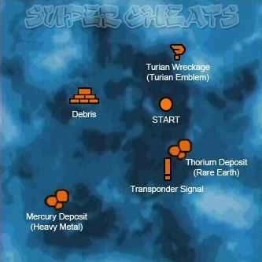
Theyar
Canrum
Survey: Turian Insignia
Syba
Survey: Gas Deposit
Gorgon System (Unlock: "UNC: Depot Sigma-23")
Unidentified Space Facility (Land, Assignment: "UNC: Depot Sigma-23")
Wuo
Vectra
Camaron
Sharblu
Slekon
Phoenix System
Patashi
Survey: Rare Earth
Carbonaceous Asteroid (Hidden)
Survey: Prothean Data Disc
Sylsalto
Tuntau (Land, Assignment: "Wrex: Family Armor")
POI: Asari Capsule (Asari Writings) (85,75)
Crashed Probe (30,70)
Hidden Structure (75,15)
Lithium Deposit (Light Metal) (10,50)
Mercury Deposit (Heavy Metal) (50,75)
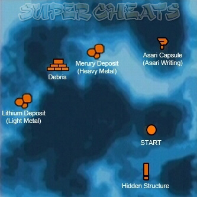
Pinnacle Station (Land, Assignment: "Pinnacle Station: Vidinos")
Vebinok
Survey: Light Metal
Intai'sei (Land, Assignment: "Pinnacle Station: Convoy")
++++++++++++++++++++
++++++++++++++++++++
Armstrong Nebula
Gagarin System
Junthor
Survey: Asari Writings
Pressha
Rayingri (Land, Assignment: "UNC: Geth Incursions")
POI: Abandoned Scavenger Camp (20,45)
Crashed Escape Pod (League Medallion) (20,30)
Engine Debris (80,50)
Overrun Research Outpost (55,40)
Polonium Deposit (Rare Earth) (20,35)
Scavenger Corpses (15,75)
Thorium Deposit (Rare Earth) (65,35)
Titanium Deposit (Light Metal) (65,75)
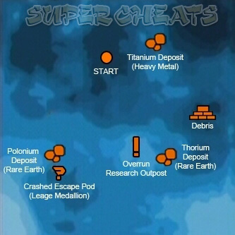
Sogelrus
Antirumgon
Survey: Light Metal
Grissom System (Unlock: "UNC: Geth Incursions")
Benda
Survey: League Medallion
Zaherux
Survey: Light Metal
Notanban
Solcrum (Moon, Land, Assignment: "UNC: Geth Incursions")
POI: Asari Capsule (Asari Writings) (30,20)
Escape Pod (50,15)
Magnesium Deposit (Light Metal) (70,20)
Mercenary Base (65,45)
Thorium Deposit (Rare Earth) (40,65)
Uranium Deposit (Rare Earth) (70,70)
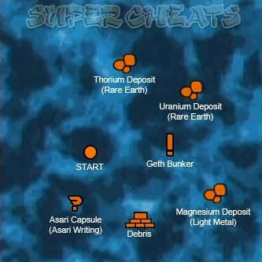
Rocky Asteroid
Survey: Light Metal
Hong System
Pomal
Casbin (Land, Assignment: "UNC: Geth Incursions")
POI: Anomalous Signal (30,70)
Engine Debris (20,55)
Geth Outpost (70,45)
Gold Deposit (Heavy Metal) (50,65)
Mummified Salarian (Salarian ID Tag) (25,45)
Samarium Deposit (Rare Earth) (60,25)
Uranium Deposit (Rare Earth) (70,40)
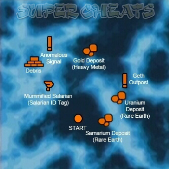
Matar
Survey: Matriarch's Writings
Theshaca
Treagir
Survey: Light Metal
Tereshkova System
Carbonaceous Asteroid (Hidden)
Survey: League Medallion
Antibaar (Land, Assignment: "Geth Incursions")
POI: Crashed Probe (55,65)
Geth Outpost (55,75)
Lithium Deposit (Light Metal) (65,15)
Magnesium Deposit (Light Metal) (30,65)
Mercury Deposit (Heavy Metal) (35,20)
Prothean Ruin (Prothean Data Disc) (15,45)
Thresher Maw (20,40)
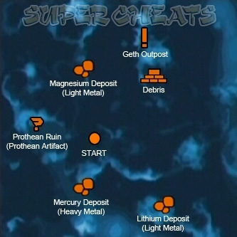
Patamalrus
Survey: Heavy Metal
Hunsalra
Thegeuse
Survey: Heavy Metal
Solmarlon
Mawinor
Vamshi System
Maji (Land, Assignment: "Geth Incursions")
POI: Beryllium Deposit (Light Metal) (60,45)
Engine Debris (75,30)
Geth Outpost (30,70)
Magnesium Deposit (Light Metal) (40,70)
Strange Skull (70,20)
Thorium Deposit (Rare Earth) (30,20)
Turian Wreckage (Turian Insignia) (55,20)
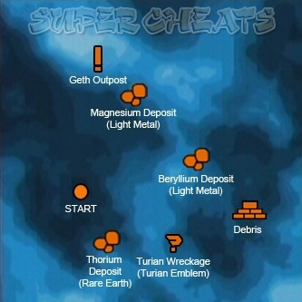
Pregel
Survey: Turian Insignia
Almos
++++++++++++++++++++
++++++++++++++++++++
Artemis Tau Cluster
Athens System
Salamis
Proteus
Survey: Gas Deposit
Nausicaa
Circe
Survey: Gas Deposit
Pharos
Survey: Turian Insignia
Knossos System
Phaistos
Metallic Asteroid (Hidden)
Survey: Heavy Metal
Therum (Land, Mission: Find Liara T'Soni)
Zakros
Armeni
Archanes
Survey: Gas Deposit
Carbonaceous Asteroid (Hidden)
Survey: League Medallion
Macedon System
Sharjila (Land, Assignment: "UNC: Asari Diplomacy")
Level 1 Pressure Hazard
POI: Asari Capsule (Asari Writings) (15,55)
Escape Pod (65,45)
Magnesium Deposit (Light Metal) (55,35)
Stronghold (45,65)
Thorium Deposit (Rare Earth) (15,65)
Uranium Deposit (Rare Earth) (15,15)
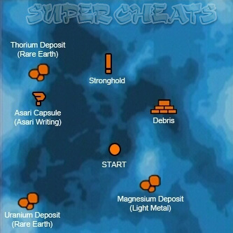
Porolan
Survey: Asari Writings
Patavig
Metallic Asteroid (Hidden)
Survey: Light Metal
Fargeluse
Survey: Gas Deposit
Sparta System (Unlock: "UNC: Missing Marines")
Tremanre
Asteroid Cluster (Hidden)
Survey: Prothean Data Disc
Edolus (Land, Assignment: "UNC: Missing Marines")
POI: Crashed Probe (70,40)
Distress Signal (40,60)
Lithium Deposit (Light Metal) (70,30)
Mummified Salarian (Salarian ID Tag) (70,70)
Palladium Deposit (Rare Earth) (45,15)
Polonium Deposit (Rare Earth) (20,30)
Thresher Maw (40,60)
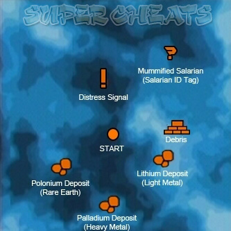
Altaaya
Ontamalca
Survey: Gas Deposit
Alsages
Survey: Rare Earth
++++++++++++++++++++
++++++++++++++++++++
Attican Beta Cluster
Hercules
Xathorron
Syided
Survey: Matriarch's Writings
Eletania (Land, Assignment: "UNC: Lost Module")
Level 1 Toxic Hazard
POI: Downed Recon Probe (55,40)
Engine Debris (40,55)
Gold Deposit (Heavy Metal) (80,40)
Monkey Colony (40,75)
Monkey Colony (55,75)
Monkey Colony (75,20)
Monkey Colony (80,65)
Mysterious Globe (20,20)
Palladium Deposit (Heavy Metal) (20,55)
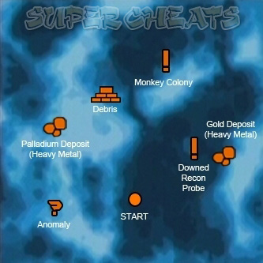
Zatorus
Survey: Heavy Metal
Theseus System
Sytau
Feros (Land, Mission: "Feros: Geth Attack")
Sharring
Survey: Prothean Data Disc
Quana
Survey: Light Metal
Logan
++++++++++++++++++++
++++++++++++++++++++
Exodus Cluster
Asgard System (Unlock: DLC: Bring Down the Sky)
Terra Nova
Asteroid X57 (Land, Assignment: "X57: Bring Down the Sky")
POI: Body of R. Montoya (30,85)
Construction Camp (85,75)
Explosives Cache (85,85)
Fusion Torch (35,60)
Fusion Torch (50,30)
Fusion Torch (70,50)
Main Facility (60,80)
Survey Station 1 (80,20)
Survey Station 2 (25,85)
Survey Station 3 (20,20)
Transmission Tower (40,40)
Vehicle Wreckage (15,50)
X57 Radio (60,30)
Borr
Tyr
Loki
Utopia System
Arcadia
Eden Prime (Mission: "Prologue: Find the Beacon")
Zion
Nirvana
Xanadu
++++++++++++++++++++
++++++++++++++++++++
Gemini Sigma Cluster
Han System (Unlock: "UNC: Hostile Takeover")
Paravin
Survey: Asari Writings
Huningto
Mavigon (Land, Assignment: "UNC: Hostile Takeover")
Level 2 Cold Hazard
POI: Cobalt Deposit (Light Metal) (70,65)
Engine Debris (30,20)
Gold Deposit (Heavy Metal) (55,45)
Mummified Salarian (Salarian ID Tag) (55,45)
Syndicate Hideout (70,25)
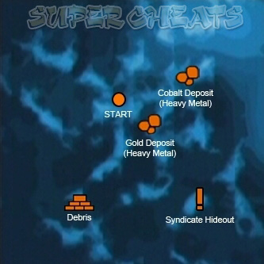
Farcrothu
Patatanlis
Survey: Light Metal
Ming System
Antiroprus
MSV Worthington (Land, Assignment: "UNC: Lost Freighter")
Parag
Survey: Light Metal
Altanorch
Survey: League Medallion
++++++++++++++++++++
++++++++++++++++++++
Hades Gamma Cluster
Antaeus System
Ageko
Edmos
Survey: Gas Deposit
Ploba
Survey: Asari Writings
Trebin (Land, Assignment: "UNC: Missing Survey Team")
POI: Crashed Probe (20,50)
Excavation Site (55,65)
Plutonium Deposit (Rare Earth) (40,40)
Research Base (55,55)
Thresher Maw (80,35)
Transmitter Tower (20,70)
Turian Wreckage (Turian Insignia) (80,35)
Uranium Deposit (Rare Earth) (70,65)
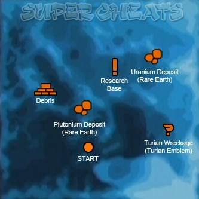
Vemal
Survey: Rare Earth
Hunidor
Cacus System (Unlock: 80% Paragon or Renegade)
Zayarter
Survey: Heavy Metal
Chohe (Land: Assignment: "UNC: Besieged Base")
POI: Abandoned Outpost (Asari Writings) (65,60)
Engine Debris (20,20)
Mercenaries (20,60)
Mercury Deposit (Heavy Metal) (45,25)
Polonium Deposit (Rare Earth) (35,65)
Science Base (60,25)
Thresher Maw (40,20)
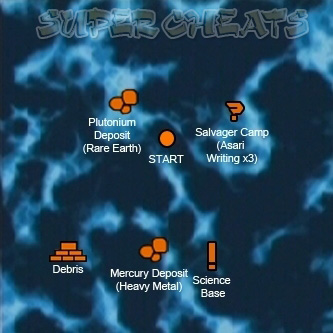
Xamarri
Faringor
Survey: Rare Earth
Treyarmus
Dis System (Unlock: "UNC: Hostile Takeover")
Jartar
Nearrum
Survey: Light Metal
Klensal (Land, Assignment: "UNC: Hostile Takeover")
POI: Beryllium Deposit (Light Metal) (80,60)
Escape Pod (40,30)
Mummified Salarian (League Medallion) (55,40)
Platinum Deposit (Heavy Metal (40,50)
Syndicate Hideout (40,45)
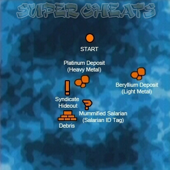
Metallic Asteroid (Hidden)
Survey: Light Metal
Gremar
Raysha
Survey: Turian Insignia
Farinata System
Tunshagon
Rocky Asteroid (Hidden)
Survey: Light Metal
MSV Ontario (Land, Assignment: "UNC: Hostage")
Juntauma
Survey: Prothean Data Disc
Nepneu
Survey: Rare Earth
Plutus System (Unlock: 80% Paragon or Renegade)
Mingito
Survey: Rare Earth
Maidla
Clocrolis
Survey: Rare Earth
Nonuel (Land, Assignment: "UNC: The Negotiation"
POI: Crashed Probe (15,40)
Crate (Asari Writings) (30,30)
Mercenary Corpse (League Medallion) (30,30)
Samarium Deposit (Rare Earth) (60,55)
Thresher Maw (25,80)
Thresher Maw (90,30)
Titanium Deposit (Light Metal) (25,80)
Warlord's Outpost (65,65)
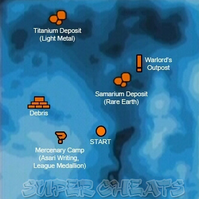
Veyaria
++++++++++++++++++++
++++++++++++++++++++
Hawking Eta Cluster
Century System
Tamahera
Klendagon
Presrop (Moon, Land, Assignment: "UNC: Major Kyle")
POI: Abandoned Mining Camp (40,75)
Biotic Compound (25,30)
Crashed Mining Vehicle (30,60)
Engine Debris (20,50)
Gold Deposit (Heavy Metal) (30,30)
Mercenaries (80,45)
Thresher Maw (70,75)
Turian Wreckage (30,60)
Uranium Deposit (Rare Earth) (60,30)
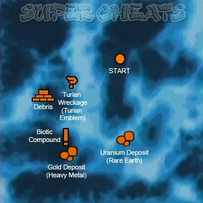
Metallic Asteroid (Hidden)
Survey: Heavy Metal
Canctra
Survey: Light Metal
Tharopto
Survey: League Medallion
++++++++++++++++++++
++++++++++++++++++++
Horse Head Nebula
Fortuna System (Unlock: "UNC: Hostile Takeover")
Maganlis
Survey: Turian Insignia
Therumlon
Survey: Rare Earth
Amaranthine (Land, Assignment: "UNC: Hostile Takeover")
POI: Engineering Outpost (40,25)
Escape Pod (15,45)
Iridium Deposit (Heavy Metal) (35,55)
Thorium Deposit (Rare Earth) (55,30)
Turian Wreckage (Turian Insignia) (30,35)
Uranium Deposit (Rare Earth) (70,50)
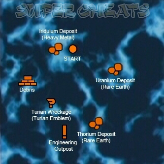
Wentania
Pax System
Svarog
Noveria (Land, Mission: "Noveria: Geth Interest")
Morana
Veles
Survey: Asari Writings
Strenuus System (Unlock: "UNC: Privateers")
Yunthorl
Survey: League Medallion
Antitarra
Survey: Gas Deposit
Trelyn
MSV Majesty (Hidden)
Xawin (Land, Assignment: "UNC: Privateers")
Level 1 Cold Hazard
POI: Abandoned Camp (70,45)
Cobalt Deposit (Light Metal) (60,60)
Corpse and Destroyed Vehicle (65,20)
Crashed Probe (30,30)
Geth Beacon (65,75)
Iridium Deposit (Heavy Metal) (70,20)
Palladium Deposit (Heavy Metal) (45,75)
Privateer Base (25,70)
Thresher Maw (30,30)
Turian Wreckage (Turian Insignia) (45,45)
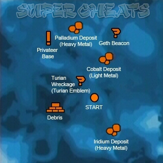
Thesalgon
++++++++++++++++++++
++++++++++++++++++++
Kepler Verge
Herschel System (Unlock: Assignment: "Garrus: Find Dr. Saleon")
Tungel
Matol
Clugon
MSV Fedele (Hidden, Land, Assignment: Garrus: Find Dr. Saleon")
Rocky Asteroid
Survey: Heavy Metal
Clobaka
Newton System
Ontarom (Land, Assignment: "UNC: Dead Scientists")
POI: Crashed Probe (70,35)
Gold Deposit (Heavy Metal) (25,20)
Palladium Deposit (Heavy Metal) (65,20)
Shifty Looking Cow (25,30)
Turian Wreckage (Turian Insignia) (50,60)
Underground Facility (70,20)
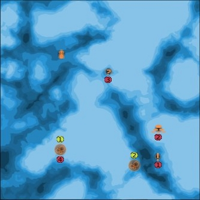
Juncro
Survey: Gas Deposits
Klencory
Survey: Asari Writings
Sesmose
++++++++++++++++++++
++++++++++++++++++++
Local Cluster (Unlock: Level 20)
Solar System
Mercury
Venus
Earth
Luna (Moon, Land, Assignment: "UNC: Rogue VI")
POI: Alliance Training Ground (25,45)
CCCP Luna 23 (25,70)
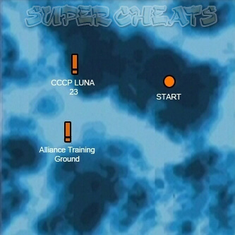
Mars
Jupiter
Saturn
Uranus
Neptune
Pluto
++++++++++++++++++++
++++++++++++++++++++
Maroon Sea Cluster (Unlock: Complete Feros)
Caspian System
MSV Cornucopia (Hidden, Land, "UNC: Derelict Freighter")
Clotanca
Survey: Heavy Metal
Farnuri
Survey: Heavy Metal
Almacrux
Antida
Survey: Turian Insignia
Matano System
Inti
Chasca (Land, "UNC: Colony of the Dead")
POI: Beryllium Deposit (Light Metal) (45,35)
Civilian Structure (25,40)
Civilian Structure (35,30)
Escape Pod (30,20)
Palladium Deposit (Heavy Metal) (45,70)
Plutonium Deposit (Rare Earth) (50,75)
Prothean Pyramid (Prothean Data Disc) (65,20)
Science Facility (20,30)
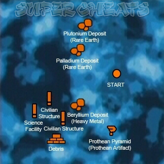
Metallic Asteroid (Hidden)
Survey: Heavy Metal
Apo
Illapa
Rocky Asteroid (Hidden)
Survey: Prothean Data Disc
Supay
Survey: Light Metal
Vostok System
Clomarthu
Nodacrux (Land, "UNC: ExoGeni Facility"
POI: Cobalt Deposit (Light Metal) (40,25)
Engine Debris (70,50)
Gold Deposit (Heavy Metal) (15,55)
Science Facility (70,30)
Thorian Creeper Camp (30,70)
Turian Wreckage (Turian Insignia) (75,75)
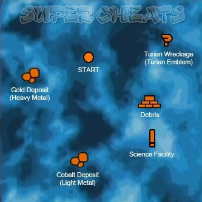
Metallic Asteroid (Hidden)
Survey: Heavy Metal
Alko
Pataiton
Survey: Asari Writings
++++++++++++++++++++
++++++++++++++++++++
Pangaea Expanse (Unlock: Complete Therum, Feros, Noveria, and Virmire)
Refuge System
Agetoton
Ilos (Land, Mission: "Race Against Time")
Zafe
++++++++++++++++++++
++++++++++++++++++++
Sentry Omega Cluster (Unlock: Complete two of Therum, Feros, and Noveria)
Hoc System
Jarfor
Nemata
Virmire (Land: Mission: "Virmire")
Cloroplon
Prescyla
++++++++++++++++++++
+++++++++++++++++++++
Styx Theta Cluster (Unlock: Complete Noveria)
Acheron System
Farthorl
Altahe (Land, Assignment: "UNC: Listening Post Theta")
POI: Asari Capsule (Asari Writings) (40,30)
Escape Pod (75,75)
Listening Post (40,20)
Gold Deposit (Heavy Metal) (15,35)
Rachni Colony (75,35)
Samarium Deposit (Rare Earth) (20,55)
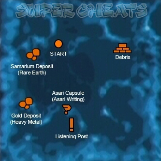
Carbonaceous Asteroid (Hidden)
Survey: Turian Insignia
Grosalgen
Survey: Light Metal
Imaneya
Erebus System
Nepmos (Land: Assignment: "UNC: Listening Post Alpha")
POI: Buried Safebox (League Medallion) (20,50)
Crashed Probe (20,20)
Listening Post (65,20)
Mining Camp (70,75)
Palladium Deposit (Heavy Metal) (65,35)
Rachni Ambush (30,50)
Rachni Ambush (65,60)
Rachni Infested Mine (25,25)
Titanium Deposit (Light Metal) (35,25)
Uranium Deposit (Rare Earth) (75,75)
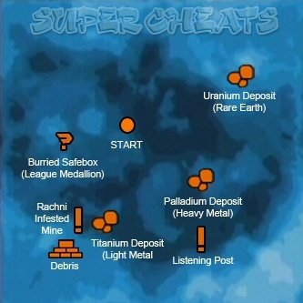
Quaji
Survey: Heavy Metal
Wermani
Survey: Prothean Data Disc
Chofen
++++++++++++++++++++
++++++++++++++++++++
Serpent Nebula
Widow System
Citadel Station
++++++++++++++++++++
++++++++++++++++++++
Voyager Cluster
Amazon System
Agebinium (Land, Assignment: "UNC: Espionage Probe")
POI: Alliance Homing Beacon (35,65)
Beryllium Deposit (Light Metal) (20,80)
Crashed Vehicle (70,65)
Engine Debris (45,75)
Magnesium Deposit (Light Metal) (15,35)
Mercenary Camp (50,70)
Samarium Deposit (Rare Earth) (50,15)
Turian Wreckage (Turian Insignia) (65,70)
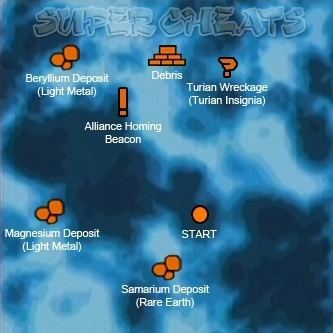
Derneuca
Sonedma
Survey: Rare Earth
Sybin
Survey: Turian Insignia
Tremar
Survey: Gas Deposit
Columbia System (Unlock: "UNC: Hades' Dogs")
Clojia
Nepheron (Land, Assignment: "UNC: Hades' Dogs")
POI: Beryllium Deposit (Light Metal) (70,20)
Engine Debris (55,20)
Mummified Salarian (Salarian ID Tag) (35,45)
Platinum Deposit (Heavy Metal) (80,50)
Shack (25,45)
Thorium Deposit (Rare Earth) (60,70)
Thresher Maw (25,40)
Underground Facility (40,35)
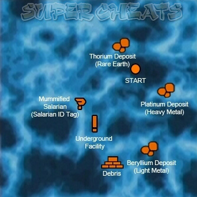
Ontaheter
Survey: Rare Earth
Gromar
Survey: League Medallion
Yangtze System (Unlock: "UNC: Cerberus")
Renshato
Binthu (Land, Assignment: "UNC: Cerberus")
POI: Crashed Probe (15,45)
Palladium Deposit (Heavy Metal) (40,55)
Prothean Pyramid (Prothean Data Disc) (50,25)
Research Facility (35,70)
Research Facility (45,25)
Research Facility (65,55)
Uranium Deposit (Rare Earth) (65,30)
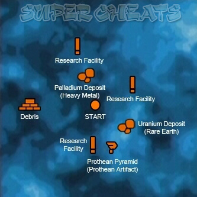
Dregir
Survey: Light Metal
Alrumter
Survey: Prothean Data Disc
Patajiri
Survey: Rare Earth
++++++++++++++++++++
========
Secrets
========
ROMANCES AND SQUAD CONVERSATIONS
--------------------------------
While you are on the Normandy between missions you can talk to each of your
crew members in order to learn more about them. If you are a male you can
also pursue a romantic relationship with either Ashley or Liara. As a
female, you can pursue a romance with Liara or Kaidan.
There is no real trick to the romances; usually being nice to the object of
your affection is enough. You can take advantage of opportunities to flirt
at certain points, though this is not always necessary.
You only have the opportunity to talk to each member of your crew while you
are on the Normandy, and they usually only have something new to say after
you complete each primary mission world (Therum, Feros, Noveria, etc.).
++++++++++++++++++++
Ashley Williams
-> Conversation 1
Immediately following Eden Prime you can find Ashley in the crew quarters.
If you resisted her inclusion in the squad while on Eden Prime she will be
cold towards you, but you have the option to patch things up. She feels
somewhat guilty because she believes that if Jenkins were still alive she
wouldn't have been assigned to the Normandy. You can reassure her to make
her feel more welcome.
+2 Paragon - "You helped."
+2 Renegade - "The mission failed."
-> Conversation 2
Ashley expresses her concern about having nonhumans on the Normandy. She
doesn't want them to have the ability to gather intelligence on the most
advanced ship in the Alliance fleet. If you're trying to court her it's a
good idea to try to smooth things over diplomatically, even if you disagree
with her position. Telling her she is out of line will make her disinclined
to speak openly with you again.
-> Conversation 3
You interrupt Ashley in the middle of a vid-mail from one of her sisters. If
you are a male and have been showing interest in Ashley then her sister will
mention that she's seen you on the vids and thinks that you're cute.
Otherwise, Kaidan will be the one who is mentioned in the message. This
opens up an avenue to talk with Ashley about her family. You can learn about
her father's military service, and how she had to help her mother raise her
younger sisters. Discussion of her father leads to his interest in poetry,
and how she reads his favorite poem to his grave every time she returns home.
She asks if her belief in God will be a problem for you. If you're
interested in courting her then it's best to be diplomatic here, even if you
think she's crazy.
-> Conversation 4
Ashley offers you a drink in commemoration of Armistice Day, the anniversary
of the end of the First Contact War. This leads her to reveal that her
family was blacklisted because of her grandfather's actions at Shanxi during
the war. If you are trying to be nice to her then it is best not to
criticize her grandfather. You should also tell her that it isn't her fault
and that she is still welcome on your ship.
-> Conversation 5
Around this time--if you have been showing interest in both Ashley and Liara-
-they will confront you in the comm room and ask that you choose between
them. Trying to keep both won't work for Ashley, who gets disgusted and
leaves. She also takes it much harder than Liara if you reject her. If you
choose Ashley, she expresses an interest in continuing your relationship when
the mission is over.
-> Conversation 6
During the lockdown on the Citadel, your romantic interest will approach you.
Dismissing them and saying you don't want to talk will effectively end the
relationship. Otherwise, they express their concern that you aren't being
taken seriously. You are interrupted by Joker, who tells you to meet Captain
Anderson at Flux.
-> Conversation 7
Once you plot a course for Ilos, you have one final opportunity to have a
private moment with your romantic interest. They will confront you in your
quarters before you reach the Mu relay. Your responses dictate whether or
not the two of you will wait until the mission is over to further your
relationship.
++++++++++++++++++++
++++++++++++++++++++
Kaidan Alenko
-> Conversation 1
If you are male then Kaidan has nothing to say to you after Eden Prime. If
you are female however, then you have the option of speaking with him. He is
curious to know why you are heading to the Citadel, and you have the choice
of filling him in on the Captain's plan. You can also tell him that he
helped on the mission, or lament your own failures.
+2 Paragon - "You helped."
+2 Renegade - "The mission failed."
-> Conversation 2
Kaidan is concerned that the Council isn't doing enough to help you track
down Saren and stop the Reapers. He also talks about his experiences at
"brain camp" and about his relationship with Rahna and his other friends
there. If you are a female you can also learn about his romantic tendencies,
and how he used to read books about space-faring adventurers who traveled the
stars to earn the love of beautiful women. He also asks if you get this
personal with everyone on the ship, at which point you can openly declare
your interest in him.
-> Conversation 3
If you are female, Kaidan expresses concern that you are cutting corners. He
tells you about the mistakes the Alliance made when first dealing with
biotics: They brought in turian experts to teach those with biotic
capabilities, and Kaidan had a bad experience with his instructor. He may
also inquire about a rumor that you are interested in Liara. If you want to
continue your relationship with Kaidan then it is a good idea to downplay any
relationship you have with her.
-> Conversation 4
Kaidan continues to be concerned that the rest of the galaxy isn't worried
about Saren or the Reapers. He talks more about what happened to Vyrnnus.
-> Conversation 5
Around this time--if you have been showing interest in both Kaidan and Liara-
-they will confront you in the comm room and ask that you choose between
them. Trying to keep both won't work for Kaidan, and he will leave. He also
takes it harder than Liara if you reject him. If you choose Kaidan, your
next conversation involves his desire to get the Council on the side of
humanity. He also expresses an interest in continuing your relationship when
the mission is over.
-> Conversation 6
During the lockdown on the Citadel, your romantic interest will approach you.
Dismissing them and saying you don't want to talk will effectively end the
relationship. Otherwise, they express their concern that you aren't being
taken seriously. You are interrupted by Joker, who tells you to meet Captain
Anderson at Flux.
-> Conversation 7
Once you plot a course for Ilos, you have one final opportunity to have a
private moment with your romantic interest. They will confront you in your
quarters before you reach the Mu relay. Your responses dictate whether or
not the two of you will wait until the mission is over to further your
relationship.
++++++++++++++++++++
++++++++++++++++++++
Liara T'Soni
-> Conversation 1
You can go to the med bay after picking up Liara to make sure that she is
alright. She thanks you for saving her from the geth, but is concerned that
the rest of your crew does not trust her. If asked, she will tell you about
her research into the Protheans, which leads her to admit her fascination
with you. You can also talk about Benezia, and learn more about the asari.
Liara discusses the rumors concerning asari promiscuity, and clarifies the
misinformation about asari unions and relationships.
-> Conversation 2
Liara talks about how impressed she is with humanity, and with you in
particular. She may also ask about your relationship with Ashley or Kaidan.
-> Conversation 3
Liara asks how you are feeling, and says she is concerned that you bear too
much of a burden for one person to carry.
-> Conversation 4
Around this time--if you have been showing interest in both Liara and either
Kaidan or Ashley--the two of them will confront you in the comm room and ask
that you choose between them. Trying to keep both won't work for Kaidan or
Ashley. Liara takes it the best if you reject her, as she blames herself for
misjudging your interest. She is very embarrassed, and hopes that you can
both put it behind you and move forward as friends. If you choose Liara
then your next conversation involves some more information on asari unions.
-> Conversation 5
During the lockdown on the Citadel, your romantic interest will approach you.
If this is Liara, there is no way to back out of the relationship at this
point. You are interrupted by Joker, who tells you to meet Captain Anderson
at Flux.
-> Conversation 6
Once you plot a course for Ilos, you have one final opportunity to have a
private moment with your romantic interest. They will confront you in your
quarters before you reach the Mu relay. Your responses dictate whether or
not the two of you will wait until the mission is over to further your
relationship.
++++++++++++++++++++
++++++++++++++++++++
Urdnot Wrex
-> Conversation 1
Talk to Wrex to learn about the krogan war with the turians and the
consequences of the genophage. He tells you how his people are dying but
seem unwilling to do what it takes to survive.
-> Conversation 2
Wrex tells you about the time he saw Saren. He was working with a large
group of mercenaries that were raiding ships out in the Traverse. They had
been hired by Saren, but Wrex only saw him once. Wrex had a bad feeling when
he saw him, so he quit. A smart move, because all the other mercs turned up
dead within a week.
-> Conversation 3
When asked why he became a mercenary, Wrex tells you about how he tried to
unite the clans so that they could focus on breeding in order to sustain
their population. He ran into opposition from his father, Jarrod, who still
believed in the old ways of constant warfare. Jarrod betrayed Wrex and
killed those loyal to him. Wrex was able to slay Jarrod, but he knew it was
too late for the krogan. He gave up on saving their species and left to
become a mercenary. If asked, he will also tell you about a promise he made
to recover his family's long lost battle armor, something you can help him
with.
-> Conversation 4
Wrex elaborates on his earlier sentiment that killing for credits is better
than killing for a lost cause. It is easier to just forget about the
problems of the krogan than it is to try to fix them. You can also inquire
about his life as a mercenary.
-> Conversation 5
At this point you can ask Wrex about any adventures he has had as a
mercenary. He tells you about the time he was hired by a volus diplomat to
eliminate a target that turned out to be another mercenary and a friend of
his. They battled for days but in the end neither one got the better of the
other.
++++++++++++++++++++
++++++++++++++++++++
Garrus Vakarian
-> Conversation 1
Garrus thanks you for bringing him along on your mission, and talks more
about why he left C-Sec: He felt that C-Sec's rules imposed too many
restrictions and made it too difficult for him to do his job.
-> Conversation 2
You can ask Garrus about why he joined C-Sec in the first place. He wanted
to fight injustice, but also to make his father happy. Garrus' father was a
highly decorated C-Sec officer, and someone who always did things by the
book. His father talked Garrus out of receiving special training that could
have helped him become a Spectre. Garrus resents the C-Sec way of operating
because he believes that the only way to take down Saren is to beat him at
his own game. You can agree or disagree with Garrus's viewpoint on the
necessity of rules.
-> Conversation 3
When asked if he has any interesting stories from his days at C-Sec, Garrus
talks about Dr. Saleon, a salarian scientist who was performing brutal
experiments on the poor citizens of the Citadel. He escaped the station, and
Garrus has been unable to get anyone to track him down. You can offer to
look into it for him, but he asks that you bring him with you when you go
after the doctor.
-> Conversation 4
Garrus expresses his concern that you may never find Saren, and asks if you
are concerned that the Council might actually be protecting him. He suggests
that if you do find Saren you should kill him because he is too dangerous to
be left alive. You can choose to agree or disagree with this sentiment.
-> Conversation 5
After dealing with Dr. Saleon, Garrus thanks you again for bringing him
along. Depending on how you dealt with the Dr. Saleon situation--and how you
handled your earlier conversations with him--Garrus may also have something
to say about what he learned from the experience. Your actions have helped
to shape his character, and his words reflect this.
++++++++++++++++++++
++++++++++++++++++++
Tali'Zorah nar Rayya
-> Conversation 1
Tali expresses her admiration for the Normandy and discusses her interest in
ships. She can also tell you the story of the geth uprising, and give you
insight into her pilgrimage and the quarian way of life.
-> Conversation 2
Tali's excitement has died down and she has become uneasy. She isn't used to
how quiet your ship is and it worries her. On the flotilla silence means
that something is broken and needs to be fixed. You can reassure her that
she is simply homesick and that she will feel better soon.
-> Conversation 3
Tali is sleeping better, but she still needs something to bring back to her
fleet when she finishes her pilgrimage. Her gift needs to be especially
valuable because her father serves on the Admiralty Board.
-> Conversation 4
Tali comments that it feels like you are getting close to catching Saren.
She thanks you for bringing her along and treating her like an equal.
-> Conversation 5
If you found the data on the geth from their incursion in the Armstrong
Cluster then Tali will ask for a copy to take back to her fleet. She says
that new information on the geth will be invaluable to her people and that it
would make a perfect gift for her pilgrimage. You can choose whether or not
to give her a copy.
++++++++++++++++++++
ACHIEVEMENT BONUSES
-------------------
Medal of Honor - 100 - Finish Mass Effect
-> Unlock Hardcore and levels 51-60
Medal of Heroism - 25 - Finish Feros
Distinguished Service Medal - 25 - Finish Eden Prime
Council Legion of Merit - 25 - Finish Virmire
Honorarium of Corporate Service - 25 - Complete Noveria.
Long Service Medal - 25 - Finish Mass Effect twice
-> +5% weapon damage
Distinguished Combat Medal - 25 - Finish Mass Effect on Hardcore
-> Unlock Insanity and gamer picture
Medal of Valor - 50 - Finish Mass Effect on Insanity
-> Unlock gamer picture
Pistol Expert - 10 - 150 Pistol Kills
-> +25% Marksmanship duration
Shotgun Expert - 15 - 150 Shotgun Kills
-> Bonus Talent: Shotguns
Assault Rifle Expert - 15 - 150 Assault Rifle Kills
-> Bonus Talent: Assault Rifles
Sniper Expert - 15 - 150 Sniper Rifle Kills
-> Bonus Talent: Sniper Rifles
Lift Mastery - 15 - Use Lift 75 times
-> Bonus Talent: Lift
Throw Mastery - 15 - Use Throw 75 times
-> Bonus Talent: Throw
Warp Mastery - 15 - Use Warp 75 times
-> Bonus Talent: Warp
Singularity Mastery - 15 - Use Singularity 75 times
-> Bonus Talent: Singularity
Barrier Mastery - 15 - Use Barrier 75 times
-> Bonus Talent: Barrier
Stasis Mastery - 15 - Use Stasis 75 times
-> Bonus Talent: Stasis
Damping Specialist - 15 - Use Damping Field 75 times
-> Bonus Talent: Damping Field
AI Hacking Specialist - 15 - Hack 75 synthetic enemies
-> Bonus Talent: Hacking
Overload Specialist - 15 - Use Shield Overload 75 times
-> Bonus Talent: Electronics
Sabotage Specialist - 15 - Use Sabotage 75 times
-> Bonus Talent: Decryption
First Aid Specialist - 15 - Use medi-gel 150 times
- Bonus Talent: First Aid
Neural Shock Specialist - 15 - Use Neural Shock 75 times
-> Bonus Talent: Medicine
Scholar - 25 - Find all primary Alien codex entries
Completionist - 25 - Finish majority of all quests
-> +5% experience rewards
Tactician - 25 - Total shield damage > health damage
-> +10% shields
Medal of Exploration - 50 - Land on an uncharted world
Rich - 25 - Earn 1,000,000 Credits
-> Unlock Spectre gear
Dog of War - 25 - 150 organic kills
-> +10% health
Geth Hunter - 25 - 250 synthetic kills
-> +10% shields
Soldier Ally - 20 - Finish majority of game with Ashley
-> +10% damage protection
Sentinel Ally - 20 - Finish majority of game with Kaidan
-> -10% Lift and Throw cooldown
Krogan Ally - 20 - Finish majority of game with Wrex
-> +10% health regeneration per minute
Quarian Ally - 20 - Finish majority of game with Tali
-> -10% Sabotage and Hacking cooldown
Turian Ally - 20 - Finish majority of game with Garrus
-> -10% Damping and Overload cooldown
Asari Ally - 20 - Finish majority of game with Liara
-> -10% Stasis and Barrier cooldown
Power Gamer - 20 - Get to level 50
-> +10% experience rewards
Extreme Power Gamer - 50 - Get to level 60
-> +5% experience rewards
Renegade - 15 - 75% Renegade
Paragon - 15 - 75% Paragon
Paramour - 10 - Complete a romantic subplot
Spectre Inductee - 15 - Become a Spectre
Search and Rescue - 10 - Rescue Liara
Charismatic - 10 - Save Wrex/cause Saren's suicide
Colonial Savior* - 50 - Complete "Bring Down the Sky"
New Sherriff in Town** - 50 - Score first in any combat scenario
Best of the Best** - 50 - Score first in all combat scenarios
Undisputed** - 50 - Complete Ahern's survival mission
* requires the "Bring Down the Sky" downloadable content
** requires the "Pinnacle Station" downloadable content
WALKTHROUGH CONCLUSION
----------------------
SECTION 10 - Break the Cycle
1 - Backdoor
The Mako arrives on the Presidium with a bang, taking out a group of geth in
the process. Pull yourself from the wreckage and head for the elevator.
There are some husks nearby to contend with, but no other enemies in sight.
Hop in the elevator to ascend the Citadel tower.
"Race Against Time: Conduit" -> "Race Against Time: Final Battle"
2 - "Suit Up, We're Going Outside!"
By this time, Saren has access to the station's controls and Sovereign is
coming in to activate the Citadel relay. To make matters worse, the
transportation system has been shut down. The only way to reach the top of
the tower now is to scale the outside on foot. Head forward along the
maintenance shaft, where you will be ambushed by a group of geth troopers.
Next there are destroyers and krogan warriors to contend with. Ascend the
ramp to the left to enter the exhaust plain.
3 - The Dropship
To orient yourself, just look for Sovereign off in the distance and head in
that direction. Bear left and follow the passage to reach an open area where
a dropship begins deploying geth soldiers in front of you. You don't have
the firepower to deal with the ship on your own. Fortunately, there are
three defense turrets in the immediate area that can deal with the dropship
for you. Two of the turrets can be turned on simply by activating them, but
the third has an average electronics lock. The more turrets you activate the
faster the dropship will be taken down. When the turrets are firing on the
ship, simply find a trench to hole up in and fire at the geth that get
dispensed onto the battlefield. When the geth ship takes sufficient damage
it will retreat and you can proceed.
4 - The Geth Turrets
Beyond the next passage is the exterior defense grid, where you will find
several geth heavy turrets in addition to the large number of geth troopers.
There are shields around the turrets, but they are exposed enough that you
can still hit them easily. If you don't want to fight the turrets you can
dip into the side passage to the east to avoid them. The passage is guarded
by a large number of powerful krogan however, so you will have to pick your
poison. Beyond this area is a hatch you can use to reenter the tower.
5 - The Tower
Back at the top of the elevator you must now fight your way through the
remaining geth defenders to reach Saren. Compared to what you have just been
through, these remaining soldiers shouldn't provide much of a challenge.
Head up the steps at the far side to interrupt Saren before he can do any
more harm.
6 - Stopping Saren
Like last time, Saren is on his glider, and he takes the time to speak with
you before your encounter. This time however, you have the chance to put a
stop to the fight before it begins. It isn't easy, but with a enough Charm
or Intimidate skill you can force Saren to give up on Sovereign and end his
own life. If not, you will have to fight him once more. This fight is much
like the one on Virmire, so remember to stay mobile and use every power at
your disposal to take him down. Despite Sovereign's upgrades, he is still an
organic, so adjust your upgrades accordingly.
+24 Paragon - "That's not true." [9 Charm]
+25 Renegade - "It's never too late!" [9 Intimidate]
7 - The Council's Fate
When Saren is defeated, head over to the control panel and use Vigil's data
file to regain control of the Citadel. You open up a comm link to Joker, who
is standing by with the entire Arcturus Fleet ready to come to your aid as
soon as you unlock the mass relays around the Citadel. The timing of their
attack is critical. Until the Citadel's arms are opened the Alliance fleet
won't be able to attack Sovereign, and they will be targets for the geth
fleet until that happens. In the meantime, the Destiny Ascension--the
Citadel's flagship carrying the Citadel Council--is under heavy fire from the
geth. You can bring in the Alliance fleet now to save the Council at the
cost of many human lives, or you can hold them back until they can attack
Sovereign directly. The choice is yours.
+28 Paragon - "Save the Council."
+29 Renegade - "Let the Council die."
+8 Paragon - "Concentrate on Sovereign."
+9 Renegade - "Concentrate on Sovereign."
8 - Dark Energy
Bad news: Saren is dead, but his synthetic components aren't. Sovereign is
controlling Saren's remains in one last attempt to stop you. Make sure your
weapons upgrades are set to damage synthetics and that you are using the best
equipment available. Saren is much more mobile than before--akin to the geth
hoppers--so you will need to keep on your toes to avoid being flanked. Don't
bother taking cover, move about and do your best to avoid his attacks. He
has a deadly rocket barrage when he is stationary, along with the ability to
overheat your weapons and take down your shields. The safest thing you can
do is disable him using biotics. As long as he is immobilized he won't be
able to harm you and you don't have to worry about him zipping around the
room. When Saren is finally beaten your victory over Sovereign is assured.
Sit back, relax, and enjoy the ending sequence.
CONGRATULATIONS! You've Completed MASS EFFECT!
-----------------------------------------------------------------------------
SECTION IV
-----------------------------------------------------------------------------
========
Credits
========
I wish to thank...
-> Casey Hudson, Preston Watamaniuk, Drew Karpyshyn, Derek Watts, David
Falkner, Ray Muzyka, Greg Zeschuk, and the talented team at BioWare for
their dedication and commitment to creating the best story-driven games in
the world.
-> Chris Priestly for putting up with the BioWare Community.
-> The Mass Effect Wikia (http://masseffect.wikia.com) for providing a
community for knowledge--and providing me with some planetary information.
Contributors:
-> Jeffery Spears for correcting a Paragon/Renegade value.
-> Vic Hibbins for a tactic to defeat Benezia.
-> Ian Young for noticing a mistake in the Ctrl-F search codes.
-> Tom Bruno for tips on avoiding rockets in the Mako, and killing Krogan.
-> Eric Rose for missing armor information.
-> Quinn Bardon for providing a number of missing codex entries.
-> Patrick Healy for offering a technique for unjamming radar in the Mako.
-> Justin Craft for offering info on the Flux dance scene.
-> Edward Mao for noticing some missing Paragon/Renegade points.
-> Justin baker for finding some missing planetary information.
-> San Sargin for noticing some missing planetary information.
-> Alejandro Rodriguez-Matos for noticing a number of incorrect Paragon and
Renegade points, and continuing to find a staggering number of faults with
this guide. Without his assistance I might actually think this guide was
close to being finished!
-> Dr. Feelgood for noting missing Renegade points in the conversation with
Ethan Jeong.
-> Seldon for providing info on a specific conversation with Maeko Matsuo.
-> Ichy for finding an extra thresher maw on Nonuel.
-> Rds590 for noticing that despite BioWare's description for the Geth
Armory, the armor does have upgrade slots.
-> Anima_Caligo for noticing a mistake in the Hostile Takeover assignment.
-> Matt Kurtz for noticing several incorrect Paragon and Renegade values.
-> Jonathan Williams for a number of important contributions.
-> dmartinua for missing planetary information.
-> Zachariah Gibson for noticing a mistake in the Fourth Estate assignment.
-> Anonymous for noticing some missing Paragon and Renegade points.
-> Angelmedia for detailed strategies on defeating Benezia.
-> R_Russ_R for a tip on defeating armatures.
-> J Laudig for finding an alternate way to finish the Signal Tracking
assignment.
-> Brian Bjornsson for noticing a missing league medallion in the Artemis Tau
Cluster.
-> JRISSMART1500 for pointing out a typo in the Dr. Michel assignment.
-> Vladkre2 for Berserker armor stats.
-> Aivar Pardla for noticing a mistake in the Family Armor assignment.
-> George Siotos for pointing out a mistake in the Asari Diplomacy
assignment.
-> Stephen Wright for a strategy on entering the secure labs on Noveria.
-> Samuel Williams for pointing out some errors in the Paragon / Renegade
rewards.
-> Videogameman5 for some info on the Pulse Rifle stats.
-> David Link for pointing out a mistake in the Asari Consort assignment.
-> Sonny Nilsson for boss strategies and the Explorer armor tip.
-> Jonathan DeVries (C. Darksun) for pointing out a mistake in the Paragon
and Renegade points for the Asari Consort assignment.
-> stompy101 (from the BioWare forums) for confirming an alternate way to
complete the Wrex and the Genophage assignment.
-> Brent (bstocking) for information on the Doctor at Risk assignment.
-> The Mass Effect instruction manual for basic information.
-> Prima's Mass Effect Guide for upgrade info, as well as missing codex and
planetary information.
==========
Revisions
==========
v0.10 - 11/26/2007 - Started Writing. Added table of contents and began
writing Section I.
-> 1,374 words
v0.11 - 11/27/2007 - Completed the Game Basics part of Section I. Began
writing the walkthrough for Eden Prime.
-> 5,365 words
v0.20 - 11/28/2007 - Finished the Eden Prime and Citadel (I) walkthroughs.
Added locations and codex entries.
-> 9,176 words
v0.21 - 11/29/2007 - Added codex entries. Began side quest entries. Minor
formatting changes and adjustments.
-> 11,398 words
v0.30 - 11/30/2007 - Wrote minimal squad bios. Expanded locations section.
Minimal work on Equipment section. Major side quest
entries, location entries, and codex entries. Finished
Liara's Dig Site Walkthrough.
-> 15,464 words
v0.40 - 12/01/2007 - Major additions to Manufacturers section, and to
Weapons, Armor, Equipment, and Upgrades. Added to
Locations section. Completed Achievements section.
Edited Assignments section.
-> 21,357 words
v0.41 - 12/02/2007 - Minor info added to various sections.
-> 22,539 words
v0.42 - 12/03/2007 - Proofread most sections. Optional Assignments info
added.
-> 24,878 words
v0.43 - 12/04/2007 - Minor additions and changes to the Optional Assignments
section.
-> 25,287 words
v0.50 - 12/05/2007 - Finished the Feros and Noveria walkthroughs. Added
optional assignments and locations information.
-> 30,384 words
v0.51 - 12/06/2007 - Optional Assignments information added.
-> 32,795 words
v0.60 - 12/07/2007 - Finished the main story walkthrough.
-> 36,699 words
v0.61 - 12/07/2007 - Fixed some formatting issues. Added optional assignment
information.
-> 36,736 words
v0.70 - 12/08/2007 - Added combat strategies.
-> 39,461 words
v0.80 - 12/08/2007 - Edited codex entries, added equipment stats, fixed some
Paragon/Renegade information. Fixed the early Citadel
missions with Wrex and Garrus. Spell checked.
-> 41,028 words
v0.81 - 12/08/2007 - Finished most non-collection assignments.
-> 42,918 words
v0.82 - 12/09/2007 - Added planetary information. Miscellaneous edits.
Added some codex entries. Some Renegade points added.
Equipment updates.
-> 43,460 words
v0.83 - 12/10/2007 - Added some codex entries. Added to main missions and
optional assignments. Subtracted some missing equipment
information.
-> 43,207 words
v0.84 - 12/11/2007 - Added some mission information, and some Renegade
points. Fixed some codex and equipment issues.
-> 43,250 words
v0.85 - 12/11/2007 - Miscellaneous info. Added equipment entries, and
strategy tips.
-> 43,594 words
v0.86 - 12/12/2007 - Equipment updates and edits. Miscellaneous edits and
additions.
-> 43,866 words
v0.87 - 12/13/2007 - Added equipment info. Minor fixes to optional
assignments. Miscellaneous error fixes.
-> 44,108 words
v0.88 - 12/14/2007 - Added equipment updates and fixes.
-> 44,430 words
v0.90 - 12/20/2007 - Added relationship and squad conversation information.
Started to change locations to coordinates.
-> 45,840 words
v1.00 - 12/21/2007 - Finished updating locations. Proofread entire guide.
Completed missing assignments.
-> 48,612 words
v1.01 - 12/24/2007 - Corrected a mistake in the Asari Diplomacy mission.
Added to the character creation section.
-> 48,799 words
v1.02 - 12/28/2007 - Corrected some major mistakes in the Character Creation
section. Added autoleveled squad attributes.
-> 49,689 words
v1.03 - 01/02/2008 - Miscellaneous edits and additions.
-> 49,956 words
v1.10 - 01/03/2008 - Proofread the walkthrough and fixed some minor mistakes.
Added some equipment information.
-> 50,180 words
v1.11 - 01/12/2008 - Added reader submissions.
-> 50,804 words
v1.12 - 01/25/2008 - Added Renegade and Paragon points, revisions to the
walkthrough, and equipment information.
-> 51,093 words
v1.13 - 02/08/2008 - Added missing planetary information.
-> 51,122 words
v1.14 - 02/28/2008 - Added miscellaneous info.
-> 51,190 words
v1.20 - 03/11/2008 - Added information for the "Bring Down the Sky" DLC.
-> 53,363 words
v1.21 - 03/24/2008 - Proofread guide.
-> 53,503 words
v1.30 - 05/29/2008 - Made updates for PC version.
-> 54,153 words
v1.31 - 06/07/2008 - Minor updates and fixes.
-> 54,401 words
v1.32 - 06/09/2008 - Made minor modifications. Reorganized contents, added
character profiles, and fixed some Paragon/Renegade
points. Fixed some grammatical mistakes.
-> 54,919 words
v1.33 - 06/12/2008 - Minor updates and fixes. Corrected some weapon stats.
Added hidden manufacturers.
-> 55,165 words
v1.34 - 06/21/2008 - A number of mistakes corrected, and assignment
information added.
-> 55,549 words
v1.35 - 07/08/2008 - A few very minor updates.
-> 55,569 words
v1.36 - 07/23/2008 - Proofread guide and made appropriate changes.
-> 55,685 words
v1.37 - 08/04/2008 - Minor update for the "Bring Down the Sky" DLC on PC, and
some added info on conversations with Maeko Matsuo.
-> 55,848 words
v1.38 - 08/13/2008 - Fixed and added Paragon/Renegade points for the
conversation with Ethan Jeong.
-> 55,896 words
v1.40 - 08/18/2008 - Expanded character creation section. Miscellaneous
improvements and additions.
-> 58,281 words
v1.41 - 08/28/2008 - Corrected erroneous Paragon/Renegade points.
-> 58,825 words
v1.42 - 09/02/2008 - Added some Paragon/Renegade points, some planetary
locations, and some miscellaneous updates.
-> 59,037 words
Special note: On August 30, 2008 this guide received its
1,000,000th hit on GameFAQs.com. I want to thank all of
the readers who contributed to this guide's success.
v1.43 - 09/08/2008 - Minor updates and fixes. Removed some erroneous
Paragon/Renegade points.
-> 58,992 words
v1.44 - 10/31/2008 - Miscellaneous updates from reader submissions.
-> 59,151 words
v1.45 - 01/21/2009 - Corrected some formatting mistakes, and added a few
reader-submitted tips.
-> 59,309 words
v1.46 - 03/03/2009 - Expanded background section, added information to
equipment sections, plus other miscellaneous additions.
-> 60,679 words
v1.47 - 04/01/2009 - Miscellaneous tweaks, additions to Manufacturers
section.
-> 61,028 words
v1.48 - 05/18/2009 - Miscellaneous tweaks and additions.
-> 61,214 words
v1.50 - 08/31/2009 - Added information for the "Pinnacle Station" DLC. Other
minor fixes.
-> 62,411 words
v1.60 - 08/15/2011 - Updated guide to final version. Removed superfluous
information. Expanded table of contents. Proofread
guide and made formatting changes.
- 60,272 words
~~~~~~~~~~~~~~~~~~~~~~~~~~~~~~~~~~~~~~~~~~~~~~~~~~~~~~~~~~~~~~~~~~~~~~~~~~~~~
This will be the final iteration of this guide. I offer my greatest thanks
to everyone who assisted in its creation, and it is my hope that readers will
continue to find it helpful in the future.
~~~~~~~~~~~~~~~~~~~~~~~~~~~~~~~~~~~~~~~~~~~~~~~~~~~~~~~~~~~~~~~~~~~~~~~~~~~~~